Aufforstung als Klima-„Technologie“
Timo Diepers · Promotionsvortrag · 13.11.2026
Selbst die ehrgeizigsten Szenarien verfehlen 1,5 °C Modellergebnis: FaIR v2.2, 841 Mitglieder, fair-calibrate 1.5.0, mit den Emissionen der CMIP7-Markerszenarien (gezeigt: vier von sieben) (van Vuuren et al. 2026, GMD 19, 2627; Daten: Zenodo 20713982); Linie = Median; nach 2100 Fortschreibung der Szenarien. Beobachtung: Indicators of Global Climate Change 2025. Darstellung nach Carbon Brief (Hausfather 2026).
Ausführlich: Selbst im ehrgeizigsten Szenario (Very Low) steigt die Erwärmung im Median auf 1,8 °C (2049) und liegt 2100 noch bei 1,6 °C — unter 1,5 °C erst nach 2120. Alle anderen Szenarien bleiben darüber.
Das sind die neuen Szenarien, mit denen die Klimamodelle für den nächsten IPCC-Bericht rechnen. Wir zeigen vier der sieben Wege: Very Low, Medium-Low, Medium und High. Selbst der ehrgeizigste Weg, Very Low, überschreitet 1,5 °C: Im Median steigt die Erwärmung auf 1,8 °C um 2050 und kommt erst im nächsten Jahrhundert wieder darunter.
Falls Fragen kommen — Werte (Median) 2100: VL 1,60 °C, ML 2,27, M 2,98, H 3,45 °C; nicht gezeigt LN 1,70, L 1,86, HL 2,87 °C. Quelle der Läufe: FaIR-Ensemble des ScenarioMIP-Beschreibungspapiers (fair-calibrate 1.5.0); Carbon Brief nutzt 1.4.5, die Mediane weichen um wenige Hundertstel ab. Neu gerechnet mit scripts/fetch_cmip7_data.py.
… und kommen nur mit CO₂-Entnahme in die Nähe Modellergebnis: CMIP7-Markerszenarien (van Vuuren et al. 2026; Daten: Zenodo 20713982), Linien und Balken kumuliert 2024–2100. Neuartig = BECCS, Direct Air Capture, Gesteinsverwitterung, Ozean; Land = Nettosenke der Landnutzung. Carbon Brief zählt bis 2150 und mit Bodenkohlenstoff (Very Low: 655 Gt).
Ausführlich: Je niedriger die Erwärmung, desto mehr CO₂-Entnahme setzen die Szenarien voraus: Very Low rund 335 Gt bis 2100, Medium-Low (2,3 °C) 279 Gt. Die Szenarien ohne Entnahme (Medium, High) liegen 2100 bei 3,0 und 3,5 °C.
Und selbst in die Nähe von 1,5 °C kommen die Szenarien nur, weil sie annehmen, dass wir CO₂ wieder aus der Luft holen. Links aufsummiert seit 2024: Very Low entnimmt bis 2100 rund 335 Gigatonnen, Medium-Low 279; rechts dieselben Summen als Balken. Bis 2100 — bis dahin soll die Erwärmung klein bleiben, und bis dahin rechnet der ganze Vortrag. Das ist der Bedarf, gegen den er am Ende rechnet.
Falls Fragen kommen — Kumuliert 2024–2100 (neuartig + Land): VL 109 + 226, ML 104 + 175 Gt CO₂, Medium und High praktisch null; nicht gezeigt L 244 + 329, LN 786 + 34, HL 104 + 129 Gt CO₂. Carbon Brief zählt bis 2150 und mit Bodenkohlenstoff und kommt für Very Low auf 655 Gt. Alle Folien rechnen mit diesen Daten bis 2100 (Very Low 335 Gt).
Bäume: die natürliche Lösung
Der Baum Die natürliche Lösung? von der Natur über Jahrmillionen perfektioniert CO₂-Aufnahme durch Photosynthese wächst „von selbst“
Entnahme: CMIP7-Markerszenarien (van Vuuren et al. 2026), Summe 2024–2100.
Rechts noch einmal, was die Szenarien an Entnahme voraussetzen: bis zu 335 Gigatonnen CO₂. Und links das, woran die meisten zuerst denken: der Baum. Von der Natur über Jahrmillionen perfektioniert, er nimmt CO₂ durch Photosynthese auf und wächst von selbst. Die natürliche Lösung? Rechnen wir das einmal ganz einfach durch.
Überschlagsrechnung mit Bilanzgrenze um den Baum
163 kg CO₂
bindet ein durchschnittlicher Baum im Aachener Mischwald bis 2100
335 Gt CO₂
Entnahme brauchen wir bis 2100 im Szenario Very Low (CMIP7)
335 Gt ÷ 163 kg ≈ 2,1 Billionen Bäume
Vergleich: Bäume heute auf der Erde ≈ 3 Billionen
SO GERECHNET IN SCIENCE (BASTIN ET AL. 2019)
Fazit: Aufforstung =Trillion Trees
DIE KRITIK
Scharfe wissenschaftliche Kritik
So einfach ist es nicht → wir rechnen nach: Bilanzgrenze schrittweise bis zum Klimasystem erweitern.
Baum: eigene Rechnung mit dem Modellbaum (Folie „C-Aufnahme im Modell“); Bedarf: CMIP7-Markerszenario Very Low, Summe 2024–2100 (Folie 3); Bäume heute: Crowther et al. 2015, Nature 525, 201; Bastin et al. 2019, Science 365, 76; Reaktionen u. a. Veldman et al. und Friedlingstein et al. 2019, Science 366.
Ausführlich: Offenbar gibt es Diskussionsbedarf. Deshalb sehen wir uns die Rechnung genauer an: Sie zieht die Bilanzgrenze um den Baum, und wir erweitern sie schrittweise bis zum Klimasystem.
Kasten ausführlich: Bastin et al. (Science 2019) schlossen, Aufforstung sei die wirksamste Klimaschutzmaßnahme; darauf beriefen sich Kampagnen wie Trillion Trees. Die Arbeit wurde wissenschaftlich scharf kritisiert, die Zahlen rasch um rund 60 % nach unten korrigiert (205 → 81 GtC), weil die Vereinfachung viele Fehler enthält.
Die einfachste Rechnung: Ein durchschnittlicher Baum in einem Aachener Mischwald, heute gepflanzt, bindet bis 2100 rund 163 Kilogramm CO₂. Das niedrigste Szenario braucht bis 2100 rund 335 Gigatonnen Entnahme. Geteilt: etwa 2,1 Billionen Bäume. Zum Vergleich stehen heute rund 3 Billionen Bäume auf der Erde, wir bräuchten also zwei Drittel davon zusätzlich.
Das klingt sehr vereinfacht, wurde aber genau so 2019 in Science gerechnet. Das Fazit des Papiers: Aufforstung sei die wirksamste Klimaschutzmaßnahme. Darauf beriefen sich Kampagnen wie Trillion Trees. Aber: Die Arbeit wurde wissenschaftlich scharf kritisiert, und die Zahlen wurden rasch um rund 60 Prozent nach unten korrigiert, weil die Vereinfachung viele Fehler enthält. So einfach ist es also nicht. Wir machen den Mythen-Check: Wir sehen uns die Rechnung genauer an und erweitern ihre Bilanzgrenze Schritt für Schritt.
Falls Fragen kommen — Modellbaum: typischer Wald in Aachen (Mischwald, Hasler et al. 2024), Kohlenstoff je Hektar nach Walker et al. (2022), 2000 Bäume je Hektar, gepflanzt 2026; bis zur Sättigung wären es 180 kg. Bastin et al. (2019): 0,9 Gha zusätzliche Waldfläche, Platz für rund eine Billion Bäume, 205 GtC; nach den Kommentaren (Veldman et al., Friedlingstein et al. 2019) rund 81 GtC, also 60 % weniger. Hauptkritik: Die CO₂-Bilanz eines Baums ist komplexer als seine Aufnahme, und so viel zusätzliche Waldfläche steht nicht zur Verfügung (Backup „Die Rechnung in der Literatur“).
Bäume
Was ein einzelner
Baum bewirkt
Klima
Strahlungsantrieb, Impuls-
antwort, Temperatur
Potenzial
Globale Aufforstungs-
potenziale
[v2] Überblick: drei Kapitel = wachsende Systemgrenze. Bäume = ein Baum, Klima = Kohlenstoffkreislauf und Energiebilanz der Erde, Potenzial = alle Bäume auf allen Flächen.
Bäume Was ein einzelner Baum bewirkt
1 Bäume 2 Klima 3 Potenzial
Schema; Übersicht der Waldwirkungen aus der Literatur (Lawrence et al. 2022; Hasler et al. 2024).
Jetzt stellen wir die Bilanz auf — für einen einzelnen Baum. Das ist die Systemgrenze für den ganzen ersten Teil, sie steht oben rechts.
Wir fangen bewusst einfach an: eine Bilanz über einen festen Zeitraum, sagen wir ein Jahr. Was ist am Ende im Baum drin? Links steht der gebundene Kohlenstoff, rechts das, was hineinkommt.
Der erste Beitrag ist der, den jeder kennt: Photosynthese. Der Baum nimmt CO₂ auf, baut daraus Zucker und aus dem Zucker Zellulose.
Wenn man hier aufhört, hat man genau die naive Rechnung: Der Baum ist ein Speicher, und was hineingeht, bleibt drin. Die nächsten Folien zeigen, was dabei fehlt.
Letzter Klick: Für das globale Klima zählen nur die beiden oberen Wirkungen, Kohlenstoff und Licht. Verdunstung, Windschutz, Lebensraum und Schatten wirken vor Ort; sie kommen ganz am Ende wieder vor.
Falls Fragen kommen — Einheiten: alle Größen in kg Kohlenstoff, bezogen auf einen Baum und auf den betrachteten Zeitraum.
1 1 Photosynthese nimmt CO₂ aus der Atmosphäre auf und baut daraus Biomasse auf 2 2 Respiration der Baum veratmet einen Teil davon wieder 3 3 Zersetzung Laub und Totholz zerfallen, CO₂ entweicht 4 4 Störung Feuer, Sturm oder Käfer setzen Kohlenstoff frei $$\mB = \st{1}{\mPS} \st{2}{{}- \mRE} \st{3}{{}- \mZS} \st{4}{{}- \mST}$$
Jetzt stellen wir die Bilanz auf — für einen einzelnen Baum. Das ist die Systemgrenze für den ganzen ersten Teil, sie steht oben rechts.
Wir fangen bewusst einfach an: eine Bilanz über einen festen Zeitraum, sagen wir ein Jahr. Was ist am Ende im Baum drin? Links steht der gebundene Kohlenstoff, rechts das, was hineinkommt.
Der erste Beitrag ist der, den jeder kennt: Photosynthese. Der Baum nimmt CO₂ auf, baut daraus Zucker und aus dem Zucker Zellulose.
Wenn man hier aufhört, hat man genau die naive Rechnung: Der Baum ist ein Speicher, und was hineingeht, bleibt drin. Die nächsten Folien zeigen, was dabei fehlt.
Falls Fragen kommen — Einheiten: alle Größen in kg Kohlenstoff, bezogen auf einen Baum und auf den betrachteten Zeitraum.
$$\mB(t) = \mPS(t) - \mRE(t) - \mZS(t) - \mST(t)$$
Annahme: Für das Klima zählt nur der Jahresmittelwert.
Schema mit illustrativen Verläufen, keine Messdaten; Flussbegriffe nach Chapin et al. (2006).
Oben die vollständige Bilanz eines Baums: Photosynthese nimmt Kohlenstoff auf, Respiration, Zersetzung und Störung geben ihn wieder ab. Diese vier Flüsse laufen auf ganz verschiedenen Zeitskalen.
Über den Tag: Tagsüber überwiegt die Photosynthese, nachts bleibt nur die Respiration. Über das Jahr: Im Sommer nimmt der Baum kräftig auf, im Winter gibt er wenig ab; die Respiration läuft das ganze Jahr, dazu zersetzen sich Laub und Totholz. Über Jahrzehnte: Der Vorrat wächst, bis Zuwachs und Zersetzung sich ausgleichen, und eine Störung kann einen großen Teil auf einmal freisetzen.
Für die Klimawirkung interessiert uns nicht der einzelne Tag, sondern was über Jahre und Jahrzehnte bleibt. Deshalb mitteln wir über Tag und Jahreszeit und modellieren die Jahreswerte. Wie, zeigt die nächste Folie.
Falls Fragen kommen — Alle drei Panels in kg C je Baum und aufeinander skaliert: Ein Sommertag ergibt rund 26 g C, ein Jahr netto gut 1 kg C, passend zum Zuwachs des Aachener Modellbaums (höchstens rund 1 kg C im Jahr). Verläufe illustrativ, keine Messdaten; das Modell hat keinen Jahresgang. Die Winterabgabe über Wäldern stammt vor allem aus der Zersetzung, der Baum selbst liegt im Winter nur knapp unter null. Flussbegriffe nach Chapin et al. (2006).
C-Aufnahme über die Zeit im Modell
Modellierung
$$\mB(t) = \underbrace{\mPS(t) - \mRE(t) - \mZS(t)}_{\text{Wachstum}} - \underbrace{\mST(t)}_{\text{Störung}}$$
$$\mB(t) = \pc{m^{c}_{\mathrm{max}}}\left(1 - e^{-\pc{k}\cdot t}\right)^{\pc{p}} \st{2}{{}\cdot \left(1 - \sc{s_{0}}\, \textcolor{aaaaaa}{e^{\gamma\cdot \Delta T_{\mathrm{w}}}}\right)}$$
$\pc{m^{c}_{\mathrm{max}}}$ Kohlenstoff-Sättigungsvorrat — 49 kg C
$\pc{k}$ Wachstumsrate — 0,043 1/a
$\pc{p}$ Formparameter — 2,0
$\sc{s_0}$ Störungsrate heute — 0,0085 1/a
$\gamma$ Anstieg der Störungsrate — 0,26 1/K
$\Delta T_{\mathrm{w}}$ Temperaturerwärmung gegenüber heute [K]
Beispiel: Mischwald in Aachen (gemäßigt), ein Baum
Volle Speicherwirkung erst nach Jahrzehnten; Störung trifft den ganzen Vorrat.
Form: Chapman-Richards (Standard der Ertragskunde). m_max: Walker et al. 2022 (Modellergebnis: aus Inventur- und Satellitendaten hochgerechnet); k: Cook-Patton et al. 2020 (aus über 13 000 Feldmessungen hochgerechnet), begrenzt durch Poorter et al. 2016. Störung: Annahme (an Seidl et al. 2017 orientiert); vom verlorenen Vorrat entweichen rund 23 % sofort, der Rest zerfällt mit τ ≈ 25 a; Anstieg mit Erwärmung: Grünig et al. 2026.
Ausführlich: Die volle Speicherwirkung existiert erst nach Jahrzehnten — und der Verlust hängt nicht am Zuwachs, sondern am Vorrat. Was dasteht, kann abbrennen.
[v2] Störung am Baum mit fester Rate p₀: der Faktor e^{γ·ΔT} in der Gleichung setzt eine Erwärmung voraus, die es hier noch nicht gibt — in PowerPoint ausgrauen. Im Modell ist die Rückkopplung enthalten (Hintergrund-Erwärmung aus FaIR); bis 2100 ändert sie die Wirkung je Baum kaum (Aachen −33 → −34 · 10⁻¹⁵ K), deshalb keine eigene Folie (Backup „Die Erwärmung wirkt auf den Baum zurück“). Danach folgt die Karte der Waldtypen. Woher die Zahlen kommen: m_max = zusätzlicher Kohlenstoff je Hektar am Ort (Walker et al. 2022, ober- und unterirdisch, ohne Boden) ÷ 2000 Bäume; k aus der Zuwachsrate der ersten 30 Jahre (Cook-Patton et al. 2020), begrenzt durch Poorter et al. (2016): 90 % der Biomasse nach 66 Jahren. Aachen 49 kg C je Baum, Joensuu 33 kg C, Marabá 69 kg C.
Zwei Dinge, die die naive Rechnung verschluckt — beide stecken schon in der Massenbilanz, bevor überhaupt Energie ins Spiel kommt.
Erstens die Zeit. Die vier Flüsse einzeln zu messen ist aussichtslos. Man muss es auch nicht: Forstinventuren messen seit über hundert Jahren genau das Netto-Ergebnis. Wir legen eine Sättigungskurve durch diese Messungen — drei Zahlen je Fall. Sie sehen drei Parametersätze: tropisch, boreal, Kurzumtrieb. Gleiche Formel, völlig anderes Verhalten. Und in allen Fällen gilt: Die volle Kapazität existiert erst nach Jahrzehnten.
Zweitens der Verlust. Achten Sie auf die zweite Zeile: Da steht m_C(t), nicht eine feste Menge. Was verloren gehen kann, ist das, was dasteht. p_D ist eine Wahrscheinlichkeit — ein einzelner Baum brennt ganz oder gar nicht, über viele Bäume gemittelt wird daraus eine stetige Rate. Wir rechnen Erwartungswerte.
Der Effekt kippt: Ab etwa sechzig Jahren wird der jährliche Verlust größer als der Zuwachs. Ein Wald läuft nicht auf ein Maximum zu und bleibt dort.
Falls Fragen kommen — Werte im Modell: tropisch m_max 200 tC/ha, k 0,08, p 2,5 · boreal 100 tC/ha, k 0,03, p 2,0 · Kurzumtrieb 50 tC/ha, k 0,12, p 1,75.
Typischer Waldtyp und CO₂-Aufnahme je Ort
CO₂-Aufnahme je Baum, gepflanzt 2026
$$\mB(t) = \pc{m^{c}_{\mathrm{max}}}\left(1 - e^{-\pc{k}\cdot t}\right)^{\pc{p}} \cdot \left(1 - \sc{s_{0}}\, \textcolor{aaaaaa}{e^{\gamma\cdot \Delta T_{\mathrm{w}}}}\right)$$
$\pc{m^{c}_{\mathrm{max}}}$ [kg C] $\pc{k}$ [1/a] $\pc{p}$ $\sc{s_{0}}$ [1/a] Aachen 49 0,043 2,0 0,0085 Joensuu 33 0,045 2,0 0,0085 Marabá 69 0,045 2,0 0,005
Typischer Wald des Ortes. Bis 2100 je Baum: Aachen 163, Joensuu 111, Marabá 232 kg CO₂.
Waldtyp: Hasler et al. 2024 (Klassifikation aus Satelliten-Landbedeckung MODIS); Fläche: Walker et al. 2022 (Modellergebnis: aus Inventur- und Satellitendaten hochgerechnet); beides auf 0,5° zusammengefasst. Kurven: eigene Rechnung, Wachstumskurve mit Kohlenstoff der Zelle (Walker et al. 2022) und Tempo (Cook-Patton et al. 2020); Störung: Annahme, heutige Rate.
Ausführlich: Gepflanzt wird, was dort von Natur aus wächst: der typische Wald je Ort. Aachen (DE) und Joensuu (FI) liegen beide im Mischwald, gemäßigt und boreal; Marabá (BR) im immergrünen tropischen Laubwald. Wie viel Kohlenstoff dazukommt, hängt am Ort, nicht am Waldtyp.
[v2] Fünf Waldtypen statt fünf gesetzter Arten. Kohlenstoff ist je Ort für alle Typen gleich: Die IPCC-Tabellen (2019) zeigen keinen belastbaren Unterschied zwischen Typen am selben Ort. Die Typen unterscheiden sich in der Albedo (Duveiller et al. 2018 je IGBP-Klasse) und in der Störung. Kräftige Farbe: mindestens 30 % der Fläche wiederbewaldbar; blass: wenig Fläche.
Das ist die Formel von der Folie davor, jetzt mit den Parametern des Ortes befüllt: Sättigungsvorrat aus Walker et al. für die Zelle, Rate aus Cook-Patton et al., Störungsrate je Waldtyp. Aachen 49 kg Kohlenstoff, Joensuu 33, Marabá 69.
Diese Folie ist bewusst die einfachste des Analyseteils. Alles Weitere ist diese Kurve, durch die Antriebskette geschoben.
p (Formparameter) steht nicht in der Legende, weil er zwischen 1,75 und 2,5 liegt und die Kurvenform nur schwach veraendert. Die vollstaendige Tabelle ist im Backup.
Der Eukalyptus ist der interessante Fall: schnellste Rate (k = 0,120), aber nur 50 kgC Saettigung. Er ist 2060 schon fertig, waehrend die Buche dann erst bei zwei Dritteln steht — und ueberholt wird.
Ueberleitung: Bis hierhin war es ein Baum an einem Ort. Ab dieser Folie variieren Art und Breite — dieselbe Kette, andere Zahlen.
Klick: Rechts kommen die Kurven für die drei markierten Orte — so viel CO₂ nimmt ein Baum des typischen Waldes dort je Jahr auf.
Ausführlich: Die Linie zeigt, wie viel CO₂ ein Baum in jedem Jahr aufnimmt: Sie steigt in der Jugendphase, erreicht um 2041 ihr Maximum und nimmt bis zur Sättigung ab. Mit der Bilanzgrenze um den Baum gilt: Was der Baum aufnimmt, wird der Atmosphäre entzogen. Die Menge hängt vom Ort ab: Der Mischwald in Aachen (DE) nimmt 1,5-mal so viel auf wie der in Joensuu (FI), der Regenwald bei Marabá (BR) 1,4-mal so viel wie Aachen (DE).
Jeder Jahreszuwachs ist eine kleine negative Emission — Kohlenstoff mal 44/12, Vorzeichen gedreht. Jeder Punkt der Linie ist ein Jahr; die Fläche darunter ist, was der Baum insgesamt aufnimmt. Aufsummiert holt ein Baum, 2026 gepflanzt, bis 2100 in Aachen rund 163 kg CO₂ aus der Luft, bei Marabá (südöstlicher Amazonas) rund 232 kg, in Joensuu (Ostfinnland) rund 111 kg: kürzere Vegetationsperiode, kälter, weniger Licht — der Wald dort trägt weniger Biomasse. Methode: docs/methods/waldtypen.md.
1000 W 300 W 1000 W 700 W 1 Referenz Dunkles Laub, grüne Wiese, 1000 W Einstrahlung ZUSÄTZLICH ABSORBIERT +400 W 1000 W 600 W 1000 W 700 W 2 Hellerer Baum Helleres Laub reflektiert mehr: 600 statt 300 W ZUSÄTZLICH ABSORBIERT +100 W 1000 W 300 W 1000 W 950 W 3 Hellerer Boden Schnee reflektiert fast alles: 950 statt 700 W ZUSÄTZLICH ABSORBIERT +650 W 2000 W 600 W 2000 W 1400 W 4 Höhere Einstrahlung Doppelte Einstrahlung, gleiche Anteile ZUSÄTZLICH ABSORBIERT +800 W
Schema mit gerundeten Beispielwerten, keine Daten.
Der Baum wächst — und je größer er wird, desto mehr Boden verdeckt er. Das ändert, wie viel Sonnenlicht reflektiert wird. Hellerer Boden (Schnee) und mehr Sonne sind genau die zwei Ortsgrößen, die gleich die Karte färben.
Erst der Referenzfall, in absoluten Zahlen: 1000 Watt kommen an, das dunkle Laub wirft 300 zurück, die Wiese 700. Der Baum absorbiert also 400 Watt mehr. Klick: Der Fall rückt in die Ecke, und wir ändern je eine Größe.
Einstrahlung und Albedo-Kontrast Messdaten: Satellit MODIS, Albedo von Wald gegen Offenland aus benachbarten Flächen verglichen, auf 0,5° gemittelt (Duveiller et al. 2018); Einstrahlung aus demselben Datensatz. Grau: keine lokale Messung.
Ausführlich: Die zusätzlich absorbierte Strahlung hängt von zwei Größen ab: von der Einstrahlung an der Oberfläche (in niedrigen Breiten höher) und vom Albedo-Kontrast zwischen Wald und der Fläche, die er ersetzt (bei Schneebedeckung besonders groß).
Links die Sonne am Boden, im Jahresmittel — von Süden nach Norden weniger. Rechts, wie viel dunkler ein ausgewachsener Wald ist als Wiese oder Acker: im Norden viel, weil der Wald den Schnee verdeckt. Die nächste Karte ist das Produkt, Monat für Monat gerechnet. Grau: Für diese Zellen gibt es keine lokale Messung — Duveiller vergleicht Wald und Offenland, die direkt nebeneinander liegen, und das geht nur, wo es beides gibt. Im Modell werden graue Zellen mit dem Median ihres Breitenbandes gerechnet. Jede Zelle mit ihrem typischen Waldtyp.
Zusätzlich absorbierte Strahlung je Baum Messdaten wie Vorfolie, Monat für Monat multipliziert (eigene Rechnung); typischer Wald je Zelle. Grau: keine lokale Messung, im Modell mit dem Median des Breitenbandes gefüllt (Annahme).
Ausführlich: Die zusätzlich absorbierte Strahlung ist dort am größten, wo Schnee liegt und die Einstrahlung hoch ist: im Jahresmittel Aachen (DE) 34 W, Joensuu (FI) 45 W, Marabá (BR) 21 W je ausgewachsenem Baum. Damit liegen beide Wirkungen vor, in zwei Einheiten: CO₂-Aufnahme in kg, absorbierte Strahlung in W. Wie sie auf das Klima wirken, zeigt das nächste Kapitel.
Aachen hat kaum Schnee — dort folgt der Effekt der Sonne, breites Maximum im Sommer. Joensuu hat im April eine Spitze: noch Schnee, Sonne schon hoch. Marabá hat keinen Schnee; dort zählt nur, dass das Kronendach etwas dunkler ist als das Weideland. Im Jahresmittel unterscheiden sich die Orte weniger als im Jahresgang. Zusammen mit dem langsameren Wachstum im Norden entscheidet das später über das Vorzeichen. Grau: wiederbewaldbar, aber ohne lokale Messung.
Klima Strahlungsantrieb, Impulsantwort und Temperatur
1 Bäume 2 Klima 3 Potenzial
Strahlungsantrieb: Energiebilanz am Oberrand
$\cq{\varphi_{\mathrm{CO_2}}}(t) =$ Stärke des Antriebs $\cq{\varepsilon_{\mathrm{CO_2}}}(t)$ × verbleibende CO₂-Menge
Oberrand der Atmosphäre
Sonnenlicht
kurzwellig
Reflexion
Wärme-
abstrahlung
langwellig
÷ AErde
W je m² Erde
ΔQ̇Baum
mehr absorbiert [W]
τatm = 0,854
kommt oben an
?
Treibhauseffekt
CO₂ hält Wärme in der Atmosphäre
$\varphi(t) =$ $\aq{\varphi_\alpha}(t)$✓ $+$ $\cq{\varphi_{\mathrm{CO_2}}}(t)$
Strahlungsantrieb φ: Änderung der Energiebilanz am Oberrand [W je m² Erde]
$$\aq{\varphi_\alpha}(t) = \pc{\tau_{\mathrm{atm}}}\,\bq{\Delta\dot Q_{\mathrm{Baum}}}(t)\,/\,\pc{A_{\mathrm{Erde}}}$$
$\pc{\tau_{\mathrm{atm}}}$ Anteil der Reflexionsänderung, der am Oberrand ankommt — 0,854 $\bq{\Delta\dot Q_{\mathrm{Baum}}}$ zusätzlich absorbierte Strahlung des Baums [W] — Kapitel Bäume $\pc{A_{\mathrm{Erde}}}$ Erdoberfläche — 5,1 · 10¹⁴ m²
Schema. Albedo-Antrieb: zusätzlich absorbierte Strahlung je Baum (Kapitel Bäume; Duveiller et al. 2018) mal τ_atm, geteilt durch A_Erde = 5,1 · 10¹⁴ m². τ_atm = 0,854: Durchlässigkeit der Atmosphäre für Kurzwellenstrahlung von der Oberfläche nach oben, globales Jahresmittel bei klarem Himmel, Wurzel der zweiseitigen Transmission 0,730 (Lacis & Hansen 1974; Lenton & Vaughan 2009; Cherubini et al. 2012).
Im Kapitel Bäume hatten wir zwei Wirkungen in zwei Einheiten: Kilogramm CO₂ und Watt Strahlung. Für das Klima zählen beide über dieselbe Größe: die Energiebilanz der Erde am Oberrand der Atmosphäre. Herein kommt Sonnenlicht, kurzwellig; hinaus gehen das reflektierte Licht und die Wärmestrahlung der Erde, langwellig. Die Änderung dieser Bilanz in Watt je Quadratmeter Erde heißt Strahlungsantrieb, rechts φ. Er hat zwei Teile: Albedo und CO₂.
Klick: zuerst die Albedo, der einfache Teil. Unter dem Baum wird mehr Sonnenlicht absorbiert: ΔQ̇_Baum, in Watt, aus dem Kapitel Bäume. Am Oberrand zählt das je Quadratmeter Erde, also teilen wir durch die Erdoberfläche. Und auf dem Weg nach oben nehmen Wolken, Wasserdampf und Aerosole einen Teil der Reflexionsänderung weg: Oben kommen 85 Prozent an, τ_atm.
Klick: jetzt das CO₂. Hier stellen wir erst die Frage. CO₂ macht etwas in der Atmosphäre, das mehr Energie in ihr hält: der Treibhauseffekt. Nimmt der Baum CO₂ heraus, wird weniger gehalten, es kühlt. Wie das genau funktioniert und wie viel es ausmacht, zeigen die nächsten Folien.
Falls Fragen kommen — τ_atm = 0,854: ΔQ̇_Baum gilt an der Oberfläche, der Weg nach unten (Wolken) steckt schon in der gemessenen Einstrahlung. Auf dem Weg nach oben absorbieren oder streuen Wolken, Wasserdampf und Aerosole einen Teil: Reflektiert die Oberfläche 10 W weniger, verlassen am Oberrand nur etwa 8,5 W weniger die Erde. Globaler Mittelwert nach Lenton & Vaughan (2009), auch bei Cherubini et al. (2012): Wurzel der zweiseitigen Transmission 0,730 bei klarem Himmel (Lacis & Hansen 1974). Genauer wären Strahlungs-Kernels je Ort und Monat (Bright & O'Halloran 2019). Die Verdunstung ist an dieser Grenze ein interner Fluss und kein Antrieb (Backup „Und die Verdunstung?“). Kurz- und langwellig: Sonnenlicht hat sein Maximum bei etwa 0,5 µm, die Wärmestrahlung der Erde bei etwa 10 µm; CO₂ absorbiert vor allem um 15 µm.
Strahlungsantrieb von CO₂
$\cq{\varphi_{\mathrm{CO_2}}}(t) =$ Stärke des Antriebs $\cq{\varepsilon_{\mathrm{CO_2}}}(t)$ × verbleibende CO₂-Menge
Oberrand der Atmosphäre
Sonnenlicht
kurzwellig
Reflexion
Wärme-
abstrahlung
langwellig
durchlässig
absorbiert
→ emittiert in
alle Richtungen
kalt
warm
nur von oben
ins All:
kalt, schwach
1 Sonnenlicht, kurzwellig (~0,5 µm)
2 Wärmestrahlung der Erde, langwellig (~10 µm)
3 Mehr CO₂
Stärke des Antriebs = $\cq{\varepsilon_{\mathrm{CO_2}}}$ : Netto-Änderung der Energiebilanz am Oberrand je kg CO₂ [W/m² je kg]
! Aber: $\cq{\varepsilon_{\mathrm{CO_2}}}$ ist kein fester Wert
$$\cq{\varepsilon_{\mathrm{CO_2}}}(t) = \frac{\pc{5{,}35}\,\mathrm{W/m^2}}{\pc{k}\,c(t)}$$
Antrieb: Myhre et al. 1998 (aus Strahlungstransfer-Modellen), c₀ = 278 ppm; k = 7,82 · 10¹² kg CO₂ je ppm; CO₂-Konzentration im Szenario SSP2-4.5: Modellergebnis FaIR (Leach et al. 2021; Smith et al. 2024).
Zuerst die Struktur, oben: Der CO₂-Antrieb hat zwei Komponenten. ε_CO₂ sagt, wie viel Antrieb jedes Kilogramm CO₂ in der Atmosphäre bewirkt — das ist diese Folie. Δm_CO₂ sagt, wie viel CO₂ zu einem Zeitpunkt noch in der Atmosphäre ist — das ist die nächste Folie.
Klick: Auf der letzten Folie stand die Frage: Was macht CO₂ in der Atmosphäre? Jetzt am selben Bild, Schritt für Schritt.
Klick: Das Sonnenlicht ist kurzwellig. CO₂ lässt es durch, es erreicht den Boden.
Klick: Die Erde strahlt die Energie als Wärme wieder ab, langwellig. Diese Strahlung absorbiert CO₂ und strahlt sie in alle Richtungen wieder ab — ein Teil geht zurück zur Erde.
Klick: Kommt mehr CO₂ dazu, wird die Wärmestrahlung in dieser Bande öfter wieder geschluckt. Ins All entkommt sie erst aus größerer Höhe, wo es kälter ist — und ein kälterer Strahler gibt weniger ab. Also verlässt weniger Wärme die Erde: Die Bilanz am Oberrand wird positiv, das ist der Strahlungsantrieb. Die Erde erwärmt sich, bis die Bilanz wieder ausgeglichen ist. Nimmt der Baum CO₂ heraus, ist es umgekehrt: negativ, es kühlt.
Klick: ε_CO₂ fasst das zusammen: die Netto-Änderung der Energiebilanz am Oberrand je Kilogramm zusätzlichem CO₂, in Watt je Quadratmeter. Was in der Atmosphäre im Einzelnen passiert, steckt darin; uns interessiert nur, was an der Systemgrenze herauskommt.
Klick: Aber ε ist kein fester Wert. Wie stark wirkt jedes Kilogramm? Das hängt davon ab, wie viel CO₂ schon da ist: Im Zentrum der Absorptionsbande ist die Atmosphäre schon undurchlässig; zusätzliches CO₂ wirkt nur noch an den Rändern der Bande, deshalb wächst der Antrieb logarithmisch und jedes weitere Kilogramm bewirkt weniger. Deshalb steht die Konzentration c im Nenner. Links die Kurve dazu, einfach zum Merken: heute 1,64, im Jahr 2100 im Szenario SSP2-4.5 noch 1,31 · 10⁻¹⁵ Watt je Quadratmeter und Kilogramm.
Falls Fragen kommen — Antrieb des gesamten CO₂: 5,35 · ln(c/c₀) W/m² (Myhre et al. 1998, aus Strahlungstransfer-Modellen); die Ableitung je kg ist ε_CO₂ = 5,35/(k · c). FaIR nutzt eine genauere, zustandsabhängige Formel (Meinshausen et al. 2020); entlang SSP2-4.5 weicht der Koeffizient um höchstens 2,5 % ab. Kurven dazu: Backup „Strahlungsantrieb von CO₂: Kurven“. Emissionshöhe: Pierrehumbert (2011, Physics Today); Benestad (2016, Theor. Appl. Climatol.); bei weiterer CO₂-Zunahme stammt rund 90 % des zusätzlichen Effekts aus der höheren Emissionshöhe (J. Climate 33(9), 2020). Spektrum und Höhe der Abstrahlung: Backup „Warum CO₂ wärmt“.
Kohlenstoffkreislauf: Ozean und Land
$\cq{\varphi_{\mathrm{CO_2}}}(t) =$ $\cq{\varepsilon_{\mathrm{CO_2}}}(t)$ × verbleibende CO₂-Menge $\cq{\Delta m_{\mathrm{CO_2}}}(t)$
Oberrand der Atmosphäre
Sonnenlicht
kurzwellig
Reflexion
Wärme-
abstrahlung
langwellig
Ozean
Land
+1 t CO₂
Kreislauf mit der Tiefsee
Land
nimmt auf
Ozean
nimmt auf
1 Zusatzemission: 1 t CO₂ kommt in die Atmosphäre.
2 Natürliche Kreisläufe (runde Pfeile)
3 Wie schnell? → 60 % nach 20, 41 % nach 100 Jahren
4 Entnahme: genauso, spiegelbildlich
Verbleibende CO₂-Menge = $\cq{\Delta m_{\mathrm{CO_2}}}$ [kg]
Impulsantwort: Modellergebnis, Mittel mehrerer Erdsystem- und Kohlenstoffkreislaufmodelle (Joos et al. 2013), Puls vor heutigem Hintergrund. Für Entnahmen gleicher Größe annähernd spiegelbildlich (Zickfeld et al. 2015).
Jetzt der zweite Faktor. Wie viel Wärme das CO₂ des Baums insgesamt ausmacht, hängt davon ab, wie viel davon in der Atmosphäre bleibt. Dasselbe Bild wie eben, die Strahlung tritt zurück, dazu Meer und Land. Eine Tonne CO₂ kommt in die Atmosphäre.
Klick: Die runden Pfeile sind die natürlichen Kohlenstoffkreisläufe: Die Atmosphäre tauscht ständig CO₂ mit Land und Ozean aus, der Ozean mit der Tiefsee. Kommt eine Tonne dazu, nehmen Ozean und Land über die Jahre einen Teil davon auf.
Klick: rechts die Kurve dazu, die Impulsantwort g_C — nach 20 Jahren sind noch 60 % in der Luft, nach 100 Jahren gut 40 %, ein Fünftel bleibt sehr lange.
Klick: Für eine Entnahme gilt dasselbe, spiegelbildlich. Ozean und Land geben dann CO₂ ab.
Ausführlich: Nach einer Zusatzemission nehmen Ozean und Landbiosphäre einen Teil des CO₂ auf: Nach 20 Jahren verbleiben 60 % in der Atmosphäre, nach 50 Jahren 49 %. Für eine Entnahme gilt dieselbe Impulsantwort mit umgekehrtem Vorzeichen: Ozean und Land geben CO₂ ab, die atmosphärische Änderung klingt ebenso ab.
Oben der CO₂-Term: Den Antrieb je Kilogramm ε_CO₂ haben wir. Jetzt der zweite Faktor, die CO₂-Änderung der Atmosphäre Δm_CO₂ — umrahmt.
Bevor wir zum Baum zurückgehen, ein Schritt zurück. Die Luft ist kein abgeschlossener Behälter: Sie tauscht ständig CO₂ mit dem Ozean und mit dem Land aus, also mit Pflanzen und Böden. Oben eine Emission: Eine Tonne CO₂ kommt in die Luft. Ozean und Land nehmen über die Jahre einen Teil davon auf — nach 20 Jahren sind noch 60 % in der Luft, nach 50 Jahren knapp die Hälfte, und gut ein Fünftel bleibt praktisch auf Dauer. Diese Kurve heißt Impulsantwort, g_C, und unten steht ihre Form: ein Rest, der bleibt, plus drei Anteile, die mit eigenen Zeitkonstanten abklingen — Jahre, Jahrzehnte, Jahrhunderte.
Unten der Fall, um den es uns geht: Eine Tonne wird der Atmosphäre entnommen. Dann läuft der Austausch umgekehrt: Ozean und Land enthalten jetzt relativ zur Atmosphäre zu viel CO₂ und geben einen Teil ab. Die atmosphärische Änderung klingt mit derselben Impulsantwort ab. Das ist der erste Schritt über den Baum hinaus: Was der Baum aufnimmt, ist nicht in voller Höhe und nicht dauerhaft eine CO₂-Änderung der Atmosphäre. Wie stark diese CO₂-Änderung wärmt oder kühlt, ist die zweite Frage — der Strahlungsantrieb, gleich nach dem Beispiel des Baums.
Falls Fragen kommen — Joos et al. (2013), Mittel aus Erdsystem- und Boxmodellen für einen Puls vor heutigem Hintergrund: a₀ = 0,217; a = 0,224 / 0,282 / 0,276; τ = 394 / 36,5 / 4,3 Jahre. Physikalisch: schnelle Durchmischung mit der Deckschicht des Ozeans, langsamer Austausch mit der Tiefsee, ganz langsam Karbonatchemie und Verwitterung; dazu das Land über Photosynthese und Böden. Entnahme spiegelbildlich: Für kleine Pulse gilt das gut (Zickfeld et al. 2015 finden für große Entnahmen eine leichte Asymmetrie). Im Modell rechnet das FaIR (Folie „Das Erdsystem rechnen“), vor dem steigenden Hintergrund von SSP2-4,5 (2100: 42 % statt 44 % eines Pulses von 2026 noch in der Luft).
Für den Baum heißt das: Jede Jahresaufnahme ist so eine kleine Entnahme, die nach dieser Kurve abklingt; aufsummiert fehlt der Atmosphäre 2100 gut die Hälfte dessen, was der Baum aufgenommen hat, in Aachen 84 von 163 kg CO₂ (Backup „Impulsantwort auf die CO₂-Aufnahme eines Baums“).
Vom Strahlungsantrieb zur Temperatur
Antrieb des Baums $\varphi(t) = \pc{\tau_{\mathrm{atm}}}\,\bq{\Delta\dot Q_{\mathrm{Baum}}}(t)\,/\,\pc{A_{\mathrm{Erde}}} + \cq{\varepsilon_{\mathrm{CO_2}}}(t)\;\cq{\Delta m_{\mathrm{CO_2}}}(t)\quad\longrightarrow\quad\htmlClass{hl on hl-t}{\tq{\Delta T}(t)}$
Oberrand der Atmosphäre
Sonnenlicht
kurzwellig
Reflexion
Wärme-
abstrahlung
langwellig
Ozean
Land
φ < 0: Senke
mehr Wärme geht hinaus
C: gibt Wärme ab
wird kühler
Λ·ΔT: kühler →
strahlt weniger ab
$$\htmlClass{hl hl-c}{\pc{C}}\;\;\;\frac{\mathrm{d}\,\tq{\Delta T}}{\mathrm{d}t} \;\;=\;\; \htmlClass{hl hl-p}{\varphi(t)} \;\;\;-\;\;\; \htmlClass{hl hl-l}{\pc{\Lambda}\;\tq{\Delta T}(t)}$$
gelöst nach $\tq{\Delta T}$ :
$$\htmlClass{hl hl-r}{\tq{\Delta T}(t)} \;\;=\;\; \sum_{t' \le t} \frac{1}{\pc{C}}\, e^{-\frac{\pc{\Lambda}}{\pc{C}}\,(t-t')}\; \varphi(t')$$
1 $\varphi < 0$ : Baum nimmt CO₂ auf
2 $\pc{C}$ : Oberfläche und Ozean geben Wärme ab
3 $\pc{\Lambda}\,\tq{\Delta T}$ : kühlere Erde strahlt weniger ab
4 Ergebnis je Baum: $\tq{\Delta T} < 0$ $\varphi/\pc{\Lambda}$ (Grafik)
Eigene Rechnung mit dem Klima-Emulator FaIR 2.2 (Leach et al. 2021; fair-calibrate 1.4.1, Smith et al. 2024; Mitglied 787474, ECS 2,9 K): typischer Wald je Ort, gepflanzt 2026, SSP2-4,5.
Oben die beiden Terme zusammen: Albedo und CO₂ ergeben den Antrieb des Baums φ. Und gleich die eigentliche Frage: Wie wird aus dem Antrieb eine Temperatur? Oben die Energiebilanz der Erde in ihrer einfachsten Form: Wärmekapazität C mal die Änderungsrate der Temperatur ist der Antrieb φ minus das, was die Erde wegen ihrer Temperaturänderung mehr oder weniger abstrahlt, Λ mal ΔT. Darunter dieselbe Gleichung, gelöst nach ΔT: Jeder Antrieb von früher wirkt bis heute nach, geteilt durch C und abklingend mit der Zeitkonstante C durch Λ; ΔT ist die Summe davon.
Klick: Was heißt das für den Baum? Sein Antrieb ist negativ, weil er CO₂ aufnimmt; die Albedo wärmt dagegen, aber netto überwiegt die Aufnahme. Am Oberrand ist der Baum also eine Energiesenke: Es geht mehr Wärme hinaus als ohne ihn.
Klick: C, die Wärmekapazität. Oberfläche und vor allem der Ozean geben Wärme ab; weil der Ozean so viel speichert, kühlt die Erde nur langsam.
Klick: Λ mal ΔT. Eine kühlere Erde strahlt weniger ab; das bremst die Abkühlung. Deshalb sinkt ΔT nicht immer weiter, sondern nähert sich φ durch Λ.
Klick: das Ergebnis, die Lösung unten in der Formel. Für den Baum setzen wir seinen Antrieb von oben ein und bekommen seine Temperaturwirkung ΔT, links an den drei Orten. In Joensuu kühlt der Baum zuerst stärker; ab etwa 2060 wird die Kühlung schwächer. Der Grund ist der Antrieb: Ab etwa 2050 wächst der Baum langsamer, sein CO₂-Antrieb nimmt nur noch wenig zu (2055 bis 2100 von −52 auf −66), die Albedo aber wärmt mit dem Kronenschluss über dem Schnee weiter zu (von +20 auf +51, je 10⁻¹⁵ W/m²). Der Netto-Antrieb wird schwächer, die Temperatur folgt verzögert. In Aachen halten sich beide Zuwächse etwa die Waage, bei Marabá ist die Albedo klein — dort bleibt die Kühlung.
Ausführlich: Die Temperatur folgt dem Antrieb verzögert: Die Oberfläche reagiert in Jahren, der tiefe Ozean über Jahrhunderte (links, Sprungantwort). Gefaltet mit dem Antrieb des Baums ergibt sich seine Temperaturwirkung (rechts). Gestrichelt nur der CO₂-Anteil: Nach Albedo bleiben 2100 in Aachen (DE) 63 %, in Joensuu (FI) 28 %, bei Marabá (BR) 82 % — der Netto-Anteil.
Oben die Energiebilanz der Erde in ihrer einfachsten Form: Die Wärmekapazität C mal die Erwärmungsrate ist der Antrieb minus das, was die wärmere Erde zusätzlich abstrahlt, Λ mal T. Ihre Lösung ist wieder eine Impulsantwort, diesmal für die Temperatur: g_T. Links: So reagiert die Erde auf ein dauerhaft zusätzliches Watt je Quadratmeter — die Oberfläche in Jahren, der tiefe Ozean über Jahrhunderte. Rechts das Ergebnis je Baum. Gestrichelt, was der Baum mit seinem Kohlenstoff allein bewirken würde; durchgezogen, was nach der Albedo übrig bleibt. Das Verhältnis nenne ich den Netto-Anteil: In Aachen bleiben knapp zwei Drittel, in Joensuu gut ein Viertel, bei Marabá über vier Fünftel. Diese eine Zahl brauchen wir am Ende wieder — für die ganze Fläche und für die Maschine, die dieselbe Frage beantworten muss: Welcher Anteil der entnommenen Tonne wirkt netto?
Rechnerisch ist die Temperatur die Summe aller Jahre Antrieb, jedes gewichtet mit der Antwort der Erde: ΔT(t) = ∫ g_T(t−t′) φ(t′) dt′ — dasselbe Prinzip wie beim CO₂. Größenordnung: bis 2100 etwa −3,4·10⁻¹⁴ K je Baum in Aachen, −1,0·10⁻¹⁴ K in Joensuu, −6,4·10⁻¹⁴ K bei Marabá. Seit das Tempo der Albedo an Messungen angepasst ist (Williams et al. 2026: Hälfte nach 40 Jahren), kühlt auch Joensuu vom ersten Jahr an — der Baum bindet, bevor sein Kronendach den Schnee verdeckt.
Warum ein Klimamodell und nicht GWP100 wie in der Ökobilanz: GWP100 rechnet jede Tonne mit einer festen Impulsantwort bei festem CO₂-Hintergrund und mittelt über 100 Jahre — egal, wann die Tonne fällt. Die Albedo passt nur über eine Umrechnung hinein. Wir geben stattdessen alles in einen Lauf von FaIR: die Entnahme aller Bäume als negative Emission, die Albedo als Antrieb. FaIR rechnet dann selbst, dass sich die Senken füllen, dass jedes kg bei mehr CO₂ schwächer wirkt und wie die Temperatur folgt — und das Ergebnis ist eine Temperatur in einem genannten Jahr, keine Tonne CO₂-Äquivalent. Für einen einzelnen Baum (10⁻¹⁵ K) nutzen wir FaIRs Antwort auf einen kleinen Puls; für die ganze Fläche liefern beide Wege dasselbe (Netto-Anteil aller Flächen 2100: je 14 %).
Das Erdsystem rechnen: ein kalibrierter Klima-Emulator
EINGABE, JAHR FÜR JAHR
1
CO₂-Fluss der Bäume
→ als negative Emission
zu allen übrigen Emissionen
Gt CO₂ je Jahr
2
Albedo der Bäume
→ getrennt als zusätzlicher
Strahlungsantrieb
W je m² Erde
FaIR, ein Klima-Emulator
kalibriert auf Erdsystemmodelle und Messungen
Hintergrund: Szenario SSP2-4,5
Kohlenstoffkreislauf
Ozean und Land antworten; Senken füllen sich
Antrieb
Strahlungseffizienz sinkt mit der CO₂-Konzentration
Temperatur
Oberfläche in Jahren, tiefer Ozean über Jahrhunderte
ZWEI LÄUFE, GLEICHES SZENARIO
das Szenario, wie es ist
mit seiner Landnutzung und Entnahme
dasselbe + unsere Bäume
eine kleine zusätzliche Störung
Beitrag der Bäume
ΔT(t) = Differenz
Jahr für Jahr, in K
FaIR 2.2 (Leach et al. 2021), Parametersatz fair-calibrate 1.4.1 (Smith et al. 2024): beschränkt durch beobachtete Erwärmung, Ozeanwärme und CO₂ sowie die IPCC-Bewertung, abgeglichen mit CMIP6-Modellen; ein Mitglied nahe dem Median (ECS 2,9 K). Emissionen SSP2-4,5 aus RCMIP (Nicholls et al. 2020).
Ausführlich: Impulsantwort, Strahlungsantrieb und Temperaturantwort sind im Erdsystem gekoppelt und hängen vom Zustand der Erde ab; im Detail rechnen das Erdsystemmodelle auf Großrechnern. FaIR bildet ihr Verhalten nach, kalibriert auf diese Modelle und auf Messungen, und rechnet ein Szenario in Sekunden. Die Szenarien enthalten schon Landnutzung und Entnahme. Wir stören sie nur: Unsere Bäume kommen als kleiner zusätzlicher CO₂-Fluss und Albedo-Antrieb hinzu. Die Differenz zeigt, was diese Bäume in einer solchen Welt leisten.
Die drei Schritte haben wir eben einzeln aufgebaut. In der Wirklichkeit sind sie eng gekoppelt: Wie viel CO₂ Ozean und Land aufnehmen, hängt davon ab, wie voll sie schon sind und wie warm es ist; wie stark ein Kilogramm wärmt, hängt davon ab, wie viel CO₂ schon in der Luft ist; und die Erde erwärmt sich träge. Im Detail rechnen das Erdsystemmodelle — große Programme, die auf Großrechnern Wochen für ein Szenario brauchen. Für unsere Frage brauchen wir viele Läufe; deshalb nutzen wir FaIR, einen Klima-Emulator. FaIR ist ein kleines Modell aus wenigen Gleichungen, dessen Parameter so eingestellt sind, dass es die großen Modelle und die Messungen nachbildet. Ein Szenario dauert Sekunden.
So setzen wir es ein. Wichtig: Ein Szenario wie SSP2-4,5 ist keine Welt ohne Bäume — es enthält schon Landnutzung, Abholzung und Aufforstung, die CMIP7-Szenarien dazu viel Entnahme. Wir rechnen das Szenario deshalb zweimal: einmal so, wie es ist, und einmal mit unseren Bäumen als kleine zusätzliche Störung obendrauf. Die Differenz ist ihr Beitrag. Weil die Störung klein ist, reagiert das System linear; wir rechnen also aus dem Szenario zurück, was eine Tonne aus unseren Bäumen in dieser Welt bewirkt — egal, ob ein Teil davon im Szenario schon eingeplant ist. Links die Eingaben: Erstens der CO₂-Fluss der Bäume, Jahr für Jahr — er geht als negative Emission zu allen anderen Emissionen dazu. Zweitens die Albedo, getrennt, als zusätzlicher Strahlungsantrieb in Watt je Quadratmeter. In der Mitte rechnet FaIR selbst die drei Schritte, die wir eben für den Baum aufgebaut haben: Kohlenstoffkreislauf, Antrieb, Temperatur. Die Erwärmung des Szenarios wirkt außerdem auf den Baum zurück: Die Störungsrate steigt mit der Temperatur (p = p₀ e^γT, Kapitel Bäume); bis 2100 ändert das die Wirkung je Baum kaum, in Aachen von −33 auf −34 · 10⁻¹⁵ K. Rechts: Die Differenz der beiden Läufe ist der Beitrag der Bäume zur Temperatur, Jahr für Jahr.
Falls Fragen kommen — Technisch: Der Netto-CO₂-Fluss der Bäume wird zu den fossilen CO₂-Emissionen des Szenarios addiert, der Albedo-Antrieb zum vorgegebenen Antrieb (wie die Sonne, er wird nicht aus Emissionen berechnet). Ein einzelner Baum ändert die Temperatur um 10⁻¹⁵ K — das liegt unter der Rechengenauigkeit eines einzelnen Laufs. Für einen Baum nutzen wir deshalb FaIRs eigene Antworten auf einen kleinen Puls (eine Gigatonne CO₂ bzw. ein Antriebspuls) und summieren Jahr für Jahr auf; für die ganze Fläche rechnen wir direkt den gestörten Lauf. Beide Wege liefern dasselbe (Netto-Anteil aller Flächen 2100: 14 % je Baum summiert, 14 % im Flächenlauf). Das Mitglied 787474 wurde nach einer vorab festgelegten Regel gewählt (am nächsten am Median in historischer Erwärmung und in vier Szenarien); docs/methods/klimamodell-fair.md. Verdunstung und Wolken als eigener Antrieb sind nicht enthalten.
Potenzial Globale Wirkung der Aufforstung
1 Bäume 2 Klima 3 Potenzial
Bisher ein Baum an drei Orten und dann an jedem Ort. Jetzt alle Bäume zusammen, mit derselben Rechnung. Wo kühlt der Baum, wo ist Platz, wie wirkt der ganze Wald über die Zeit — und reicht das für das, was die Szenarien voraussetzen?
Temperaturwirkung eines Baums je Ort Eigene Rechnung, volles Modell mit FaIR (Leach et al. 2021), SSP2-4,5; typischer Wald je Ort (Hasler et al. 2024), Kohlenstoff der Zelle (Walker et al. 2022), Albedo lokal gemessen oder Breitenband (Duveiller et al. 2018); Mittel je 2°-Block, gewichtet mit der wiederbewaldbaren Fläche.
Ausführlich: Dieselbe Rechnung für jeden Ort der Erde: Baum gepflanzt 2026, Wirkung im Jahr 2100. In den Tropen kühlt er am stärksten, in hohen Breiten und Trockengebieten wirkt er netto erwärmend. Marabá (−64) liegt im kühlenden Gürtel, Aachen (−34) und Joensuu (−10 · 10⁻¹⁵ K) dazwischen.
Bisher drei Orte. Jetzt dieselbe Kette für jeden Ort der Erde: Wachstum, Albedo, Rückgabe durch Ozean und Land, vollere Atmosphäre, Störung — und am Ende die Temperatur im Jahr 2100. Grün kühlt, orange wärmt. Aachen, Joensuu und Marabá sind die drei Punkte, die wir kennen.
Falls Fragen kommen — Je Baum des typischen Waldes am Ort, gepflanzt 2026. 5 % der wiederbewaldbaren Fläche kühlen stärker als −54, 5 % wärmen stärker als +29 · 10⁻¹⁵ K. Ein Baum des typischen Waldes kühlt auf 48 % der wiederbewaldbaren Fläche (0,39 Gha); mit genau diesem Baum und dieser Fläche rechnet auch das Kapitel Vergleich.
Gar nicht überall kühlt der Baum. Die Frage ist also: Wo gibt es überhaupt Platz für Wald — und liegt der dort, wo er kühlt?
Für 1,5 °C in 2100 bräuchte es das 5,5-Fache der Bäume: zusätzlich rund 262 Gt CO₂ Entnahme.
Fläche: Walker et al. 2022 (Modellergebnis: aus Inventur- und Satellitendaten hochgerechnet), Zellen mit typischem Waldtyp (Hasler et al. 2024); Anteil an der Landfläche je 2°-Block. Kühlung: FaIR je Fläche, SSP2-4,5. Grenzwert: Erwärmung von Very Low 2100 über 1,5 °C (Median, 7-Jahres-Mittel; van Vuuren et al. 2026).
Ausführlich: Wiederbewaldbar sind 0,83 Gha, rund 6 % der eisfreien Landfläche: das entspricht rund 1,7 Billionen Bäumen; die Überschlagsrechnung setzte 2,1 Billionen voraus. Kühlend wirkt ein 2026 gepflanzter Baum davon nur auf 0,39 Gha (0,8 Billionen Bäume); auf der übrigen, etwas größeren Hälfte, in hohen Breiten und Trockengebieten, wirkt er erwärmend.
Die Karte davor: Gar nicht überall kühlt der Baum. Jetzt die Frage für den Vergleich: Wie viel Platz gibt es überhaupt? Grün heißt: Dieser Anteil des Landes ist wiederbewaldbar — kein bestehender Wald, kein Acker, keine Stadt, keine Wüste und kein natürlich offenes Grasland. Grau: Land ohne Platz. Kräftig grün wird es nur im hohen Norden und in einzelnen Regionen der Tropen — und gerade im Norden wärmt der Baum. Bei 2000 Bäumen je Hektar ist das Platz für rund 1,7 Billionen Bäume — die naive Rechnung vom Anfang brauchte 2,1 Billionen. Und nur knapp die Hälfte davon kühlt: Von den 0,83 Gha bleiben 0,39 Gha, auf denen ein 2026 gepflanzter Baum bis 2100 kühlt, rund 0,8 Billionen Bäume. Das sind die grünen Flächen der Karte davor; die orangen wärmen.
Falls Fragen kommen — Fläche nach Walker et al. (2022), nur Zellen mit einem typischen Waldtyp nach Hasler et al. (2024). Baum = typischer Wald der Zelle (Hasler et al. 2024), wie in allen Kapiteln; gepflanzt 2026, bewertet 2100. Die Karte „Wo Bäume kühlen — und wo nicht“ liegt im Backup. Gezeigt als Anteil an der Landfläche je 2°-Block; Blöcke mit weniger als 3 von 16 Landzellen sind ausgeblendet (Inselchen, einzelne Landzellen im Klimadatensatz), die Flächensummen enthalten sie.
Klick: Was bringt das über die Zeit? Grün alle Bäume auf den kühlenden Flächen, orange auf allen Flächen: rund 20 Millikelvin.
Klick: Und reicht das? Die Achse wächst mit. Rot der Grenzwert: Very Low liegt 2100 noch 106 Millikelvin über 1,5 °C; so viel Kühlung wäre zusätzlich nötig, um 2100 bei 1,5 °C zu sein. Die Bäume auf den kühlenden Flächen bringen 19; es fehlen 87, also das 5,5-Fache der Bäume. In CO₂ umgerechnet, mit derselben Klimaantwort, sind das rund 262 Gigatonnen zusätzliche Netto-Entnahme bis 2100. Zwischendurch liegt Very Low noch höher, um 2050 gut 0,3 Grad über 1,5 °C.
Falls Fragen kommen — Grenzwert: Median-Erwärmung von Very Low (FaIR-Ensemble der CMIP7-Marker, 7-Jahres-Mittel) minus 1,5 °C; Höchstwert ungeglättet 336 mK (2049); Very Low enthält bereits 335 Gt Entnahme, auch Landsenke, der Grenzwert ist also zusätzlich. Bäume: vier FaIR-Läufe wie auf den Backup-Folien „Globale Temperaturwirkung über die Zeit“ und „Beitrag der Aufforstung zum Entnahmebedarf“ (dort in Gt: 59 von 335 Gt).
Die Lücke ist groß. Und damit die Frage vom Anfang.
Sind wir auf dem Holzweg?
Ich hab die Lösung: Direct Air Capture!
Bäume allein schließen die Lücke nicht. Sind wir also auf dem Holzweg, wenn wir auf den Wald setzen?
Klick: Und da kommt der Ingenieur — wir haben uns bisher aus fast allem herausentwickelt. Sein Vorschlag: Direct Air Capture. Rechnen wir die Technik mit derselben Systemgrenze.
Sorbens-DAC: Prozess und Energiebedarf
CO₂-arme Abluft
1
Ansaugen
Gebläse: Luft durch
ein Sorbens (Amin)
→ CO₂ bindet daran
Strom
2
Ablösen
Vakuum, Dampf (100 °C)
→ CO₂ löst sich ab
Wärme um 100 °C
Verdichter
3
Speichern
Verdichten, transportieren
→ Einlagerung in tiefe
Gesteinsschichten
Strom
Energie je Tonne CO₂
Wärme direkt zugeführt
Wärme 1,5
Strom 0,5
MWh
Wärmepumpe
mit Wärmepumpe: nur noch Strom
0,5
für die Wärme ≈ 1
≈ 1,5 MWh
Je nach Klima 1,1 bis 1,9 MWh
→ kalt: COP sinkt
→ feucht: mehr Wärmebedarf
Prozess: Sorbens-DAC mit dampfunterstützter Temperatur-Vakuum-Wechseladsorption (Sendi et al. 2022). Energie: premise-Datensatz Sorbens-DAC 100 kt/a (ecoinvent 3.12, Modellergebnis); Wärmepumpe und Wetterabhängigkeit nach Sendi et al. 2022.
Ausführlich: Für die Lücke kommt vor allem Direct Air Capture in Frage. Der Prozess ist energieintensiv. Mit Wärmepumpe wird der gesamte Bedarf elektrisch: rund 1,5 MWh je Tonne CO₂. Der Netto-Anteil hängt damit von der Emissionsintensität des Stroms ab, der Strombedarf vom lokalen Klima.
Die Lücke muss technische Entnahme schließen. Am weitesten entwickelt ist Direct Air Capture, hier das Sorbens-Verfahren. Wie funktioniert es? Erstens: Gebläse drücken Luft durch ein Sorbens, ein Material mit Aminen, an dem das CO₂ haften bleibt. Zweitens: Ist es voll, wird die Kammer geschlossen; Vakuum und Dampf um 100 °C lösen das CO₂ wieder ab. Drittens: Das CO₂ wird verdichtet und in tiefen Gesteinsschichten eingelagert. Das kostet vor allem Energie, rechts je Tonne: anderthalb Megawattstunden Wärme und eine halbe Strom. Mit einer Wärmepumpe wird aus der Wärme Strom — dann hängt alles am Strom. Und wie viel Strom, hängt am Wetter.
Falls Fragen kommen — Energie aus dem premise-Datensatz (Sorbens-DAC, 100 kt/a, ecoinvent 3.12): 0,5 MWh Strom und 5,4 GJ Wärme je t. Wärmepumpe nach Sendi et al. 2022: 50 % des Carnot-Werts, Senke 120 °C, COP 1,5–2,0. Climeworks meldet für Hinwil 3,3 MWh Wärme und 0,7 MWh Strom je t, etwa doppelt so viel Wärme — das ist eine Sensitivität (Backup). Flüssig-DAC (Kalilauge, Hochtemperatur) ist nicht enthalten.
DAC-Modell: je Ort und je Jahr
je Ort
0,5°-Zelle
Wetter
Temperatur und Feuchte
CRU TS 4.09, 2011–2020
Prozessmodell
Wärmebedarf, Wärmepumpe
Sendi et al. 2022
Strom je Tonne
1,1 bis 1,9 MWh
je nach Klima am Ort
je Jahr
2026 bis 2100
Strommix
je Region, Jahr für Jahr
REMIND-EU, SSP2-NDC
Emissionen je kWh
Ökobilanz
Strom × Emissionen je kWh
+ Anlage, Sorbens, Lager
premise, ecoinvent 3.12
Netto-Anteil
η = 1 − Emissionen je
entnommener Tonne
je Zelle und Jahr
zum Vergleich: Baum
Netto-Anteil nach Albedo
Klima: Messdaten CRU TS 4.09 (Harris et al. 2020). Prozess: Sendi et al. 2022. Strommix: Modellergebnis REMIND-EU, SSP2-NDC, über premise (Sacchi et al. 2022) mit ecoinvent 3.12. GWP100 nach IPCC 2021.
Ausführlich: Das Wetter am Ort bestimmt, wie viel Strom eine Tonne braucht. Die Ökobilanz rechnet daraus mit dem Strommix des Jahres, wie viel CO₂ dabei entsteht. Am Ende steht dieselbe Frage wie beim Baum: Welcher Anteil der entnommenen Tonne bleibt netto übrig?
So rechnen wir DAC — für jede halbe Gradzelle und jedes Jahr bis 2100. Oben der Ort: Aus Temperatur und Feuchte am Ort folgt mit dem Prozessmodell, wie viel Wärme der Prozess braucht und wie gut die Wärmepumpe arbeitet, also wie viel Strom eine Tonne kostet. Unten das Jahr: Welcher Strommix dann in der Region läuft, kommt aus dem Energiesystemmodell REMIND; die Ökobilanz rechnet daraus die Emissionen je Kilowattstunde, dazu Anlage, Sorbens und Speicherung. Zusammen: wie viel CO₂ je entnommener Tonne entsteht. Daraus der Netto-Anteil — dieselbe Größe wie beim Baum: Dort frisst die Albedo einen Teil der Tonne, hier die Emissionen.
Falls Fragen kommen — Klima: CRU TS 4.09, Monatsmittel 2011–2020, Jahresmittel von Temperatur und Feuchte. Wärmebedarf: +12,6 % je 10 Prozentpunkte Feuchte, +9,4 % je 10 K, an Sendis vier Klimaklassen angepasst (Fehler ≤ 0,012 MWh/t). Strom: premise mit REMIND-EU SSP2-NDC, je Land der Markt seiner REMIND-Region, zwischen den Stützjahren interpoliert; GWP100 nach IPCC 2021; gerechnet in Brightway. Nicht im Modell: Kosten; Flächenbedarf der Anlage (klein gegen den Wald); Zusatzstrom (gerechnet wird mit dem Netzmittel der Region); Flüssig-DAC; Undichtigkeit des Speichers (geologische Speicherung gilt als dauerhaft). Die Emissionen der Anlage gehen mit GWP100 ein — eine Vereinfachung gegenüber dem Baum, der durch FaIR läuft; bei wenigen Prozent Emissionen je Tonne ändert das wenig. Methode: docs/methods/dac-modell.md.
Netto-Entnahme von DAC, 2026 bis 2100 Eigene Rechnung, Sorbens-DAC mit Wärmepumpe (Sendi et al. 2022; Klima CRU TS 4.09). Strommix je Region und Jahr: Modellergebnis REMIND-EU SSP2-NDC (heutige Zusagen) über premise, ecoinvent 3.12; GWP100. Mittel je 2°-Block; Median über das Land, auf dem DAC möglich ist.
Ausführlich: Mit dem Strom von 2026 bleiben im Median 46 % der entnommenen Tonne netto; auf 2 % des Landes, vor allem in Indien, emittiert DAC mehr, als es entnimmt. Mit der Energiewende steigt der Median auf 65 % (2030), 79 % (2035) und 91 % (2040). Zum Vergleich: Bäume auf den kühlenden Flächen kommen auf 58 %. Im hohen Norden (20 % des Landes) ist es für Sorbens-DAC zu kalt.
Jetzt dieselbe Frage wie beim Baum: Welcher Anteil der entnommenen Tonne bleibt netto? Die Karte zeigt, welcher Anteil einer entnommenen Tonne netto übrig bleibt, wenn man die Emissionen des Stroms und der Anlage abzieht. Türkis heißt: viel bleibt. Mit dem Strom von heute im Median knapp die Hälfte. In Joensuu mit finnischem Strom schon 86 %, in Aachen gut die Hälfte, bei Marabá knapp zwei Drittel. Mit Kohlestrom bleibt wenig: Krakau 17 %, Kinshasa 23 %, Peking 24 %; wo es orange wird, vor allem in Indien, emittiert die Maschine mehr, als sie entnimmt. Grau: Im hohen Norden ist es für dieses Verfahren zu kalt. Zum Vergleich mit dem Baum, derselbe Netto-Anteil: Aachen 63 %, Joensuu 28 %, Marabá 82 %, über alle kühlenden Flächen 58 %. Heute ist der Baum also im Mittel die sauberere Tonne, ab etwa 2030 die Maschine.
Jetzt lasse ich die Jahre laufen [Play]. Mit dem Strom wird die Maschine besser, ohne dass sie selbst sich ändert: Aachen erreicht um 2030 gut 80 %, Krakau um 2035, Peking und Kinshasa um 2040. Ab etwa 2040 bleiben fast überall über 90 %. Das ist die Reihenfolge für die Maschine: zuerst dort, wo der Strom sauber ist; nicht mit fossilem Strom; nicht im hohen Norden.
Falls Fragen kommen — Annahme mit Gewicht: REMIND-EU SSP2-NDC dekarbonisiert schnell (Deutschland 0,42 → 0,09 kg CO₂e/kWh von 2020 bis 2030); mit langsamerer Energiewende verschieben sich die Jahre nach hinten. Gerechnet wird mit dem Netzmittel der Region, nicht mit zusätzlichem Ökostrom. Strom je Tonne 1,1–1,9 MWh; eine Gigatonne im Jahr bräuchte rund 1 500 TWh, etwa 5 % der heutigen Weltstromerzeugung. Mit den Climeworks-Energiewerten (doppelt so viel Wärme) wird es später (Methodendoku). Werte zwischen den Stützjahren der Ökobilanz (2020, 2030, 2040, 2050, 2075, 2100) linear interpoliert; die Karte gleitet zwischen den Jahren. Median 2050: 94 %. Ein Block zeigt das flächengewichtete Mittel seiner Zellen; die Anteile im Text sind aus den Zellen gerechnet.
Wo und wann sollte man also bauen, damit es für 1,5 °C reicht? Das rechnen wir jetzt.
262 Gt CO₂
muss DAC bis 2100 netto entnehmen, damit Very Low bei 1,5 °C endet
so viel kühlt 2100 die 87 mK, die nach den Bäumen fehlen (Folie 25; Klimaantwort wie bei den Bäumen)
Gesucht: wo und wann DAC gebaut wird, mit möglichst wenig Anlagen. Eingaben und Grenzen:
Lineares Programm, eigene Rechnung: Netto-Entnahme bis 2100 ≥ Vorgabe; kleinste Kapazität (größte Jahresentnahme), dann kleinste Gesamtmenge. Netto-Anteil: beste 10 % der Zellen je Land mit Sedimentbecken in höchstens 100 km. Klimaantwort: FaIR, wie bei den Bäumen.
Jetzt drehen wir die Frage um: Nicht „Baum oder Maschine je Tonne“, sondern: Was müsste DAC leisten, damit wir 2100 bei 1,5 °C ankommen? Nach den Bäumen fehlen 2100 noch 87 Millikelvin. In CO₂ umgerechnet, mit derselben Klimaantwort wie beim Baum, heißt das: DAC muss bis 2100 netto 262 Gigatonnen entnehmen. Das ist unsere Vorgabe.
Klick: Gesucht ist, wo, wann und wie viel, mit möglichst wenig Anlagen. Die Rechnung kennt vier Dinge: wie viel einer entnommenen Tonne je Ort und Jahr netto bleibt, das steigt mit dem Strommix; wie viel CO₂ jedes Land sicher speichern kann, nach Gidden et al. weltweit 1 460 Gigatonnen, Deutschland nur 1,3; wie schnell DAC wachsen kann, höchstens 20 Prozent im Jahr wie einst die Windkraft, ausgehend von den 8,8 Megatonnen, die für 2030 geplant sind; und dass gebaute Anlagen weiterlaufen.
Falls Fragen kommen — Das ist ein lineares Programm: Entnahme je Land und Jahr als Variablen, Netto-Entnahme bis 2100 als Vorgabe. Die Umrechnung von Millikelvin in Gigatonnen nutzt die Klimaantwort aus FaIR, linear je Tonne; mit vollem FaIR nachgerechnet kühlt der Pfad um 7,7 % stärker, die Rechnung ist also konservativ. DAC kommt zusätzlich zu den 335 Gt Entnahme, die in Very Low schon stecken. Kein Transport über Landesgrenzen; Basalt-Mineralisierung (Island) ist bei Gidden nicht enthalten.
Wann und wo DAC gebaut wird
2026
0 Gt CO₂/a
installierte Kapazität weltweit
0 von 262 Gt
netto entnommen
1,5 °C erst 2100, davor ein langer Overshoot.
0 150 300 1 · Netto entnommen, aufsummiert [Gt CO₂] höchstens möglich (+20 %/a) nötig: 262 Gt 0 100 200 300 2 · Erwärmung über 1,5 °C [mK] 2026 2050 2075 2100 Very Low Very Low 106 + Bäume 87 + DAC: 1,5 °C
Lineares Programm (Folie 30), Strompfad heutige Zusagen (REMIND-EU SSP2-NDC). Speicher: Gidden et al. 2025; Wachstum: Zurbriggen et al. 2026; Kühlung: FaIR-Klimaantwort. Bäume: kühlende Flächen, gepflanzt 2026 (Folie 25).
Das Ergebnis als Film. Links die Welt, rechts die Zähler. Unten zwei Zeitreihen: oben, wie viel CO₂ DAC bis dahin netto entnommen hat, mit dem Nötigen für 2100 als Punkt und gestrichelt dem, was die Wachstumsgrenze höchstens erlaubt; darunter die Erwärmung über 1,5 °C: gestrichelt Very Low, grün mit den Bäumen, rot mit Bäumen und DAC.
Klick: Jetzt läuft die Zeit. Lange passiert wenig: Frankreich baut früh, weil der Strom sauber ist. In den 2040ern kommen Algerien, Libyen und Ägypten: viel Speicher, Strom wird sauber. 2050 laufen weltweit erst 0,34 Gigatonnen im Jahr, insgesamt sind 2 Gigatonnen entnommen. Die Wachstumsgrenze bremst: Die Entnahme läuft lange genau an der gestrichelten Linie entlang, schneller geht es nicht. 2060 sind es 2,1, dann kommen die USA und Australien mit ihrem großen Speicher; ab 2067 laufen 6,9 Gigatonnen im Jahr: USA 3,8, AUS 1,2, LBY 1,0, EGY 0,3, DZA 0,2.
Und unten sieht man den Overshoot: Um 2050 liegt die Welt auch mit Bäumen und DAC noch rund 0,3 Grad über 1,5 °C, denn DAC ist noch klein, und die Wirkung kommt später als die Entnahme: Ozean und Land geben einen Teil zurück, die Erde reagiert träge. Erst zum Ende des Jahrhunderts drückt DAC die Kurve herunter, 2100 auf 1,5 °C.
Klick: Erst Nordafrika, dann USA und Australien, 6,9 Gigatonnen im Jahr; und die Kühlung kommt spät.
Falls Fragen kommen — Warum nicht Nordeuropa? Sauberer Strom, aber kaum sicherer Speicher (Norwegen 6,9 Gt, Deutschland 1,3 Gt). Warum nicht Russland? Viel Speicher, aber kälter und schmutzigerer Strom. Die Reihenfolge je Land ist nicht ganz eindeutig: Bei gleicher Kapazität wären auch etwas andere Aufteilungen optimal; eindeutig sind die Menge und die großen Standorte. Der Netto-Anteil der genutzten Anlagen liegt bei 96–97 %.
Nötige DAC-Kapazität je Zieljahr
Kapazität, um 262 Gt CO₂ bis zum Zieljahr zu entnehmen (Gt CO₂/a) 6,9 bis 2100 8,1 bis 2095 9,9 bis 2090 12,9 bis 2085
Früher fertig → viel mehr Anlagen Bis 2100: 6,9 Gt/a. Bis 2085: 12,9 Gt/a, fast das Doppelte, weil DAC nicht schneller als 20 %/a wachsen kann.
Strommix: kaum Einfluss Drei Strompfade, von heutiger Politik bis zum 1,5-°C-Pfad: 6,9 bis 7,1 Gt/a. DAC wird erst groß, wenn der Strom ohnehin sauber ist.
Lineares Programm wie Folie 30, Vorgabe 262 Gt netto bis zum Zieljahr. Strompfade: REMIND-EU SSP2 über premise: heutige Politik (NPi), heutige Zusagen (NDC), Budget 650 Gt (PkBudg650).
Zwei Fragen an das Ergebnis. Links: Was, wenn wir die 262 Gigatonnen früher entnehmen wollen? Bis 2100 reichen 6,9 Gigatonnen im Jahr, bis 2095 braucht es 8,1, bis 2090 9,9, bis 2085 schon 12,9.
Klick: Früher fertig heißt viel mehr Anlagen, weil DAC nur begrenzt schnell wachsen kann: Wer früher fertig sein will, muss mit einer größeren Flotte arbeiten, die dann auch schneller wieder überflüssig wäre.
Klick: Und der Strommix? Mit drei Strompfaden, von der heutigen Politik bis zu einem 1,5-°C-kompatiblen Pfad, ändert sich die nötige Kapazität kaum: 6,86 bis 7,07 Gigatonnen im Jahr. Denn DAC wird wegen der Wachstumsgrenze erst groß, wenn der Strom ohnehin sauber ist. Der Strommix entscheidet, wo DAC früh sinnvoll ist, nicht wie viel gebraucht wird.
Klick: Wie viel DAC nötig ist, entscheidet das Zieljahr.
Falls Fragen kommen — Mit nur 11 % Wachstum im Jahr (wie Ammoniak) sind bis 2100 nur 128 der 262 Gt erreichbar. Mit dem technischen Speicherpotenzial oder mit dem Landesmedian statt der besten Standorte bleibt es bei 6,9 bzw. 6,9 Gt/a.
1 Bäume reichen nichtNetto 57 bis 63 Gt CO₂ bis 2100
2 DAC schließt die Lücke, aber spät und nur in großem Maßstab1,5 °C bis 2100: 6,9 Gt/a ab 2067
3 Aufforstung früh, DAC so früh wie möglich hochfahrenBaum: 5 Jahre später gepflanzt → 2050 fehlt knapp ein Viertel der Kühlung
Ausblick: was noch nicht drin ist Nutzung des Holzes, etwa Bauholz statt Beton und Stahl → hilft den Bäumen wahrscheinlich noch mehr
Also: Geht Bäume pflanzen, dort, wo sie kühlen.
Ausführlich: Die Ingenieure sind nicht auf dem Holzweg: Ohne technische Entnahme lässt sich die Lücke zu 1,5 °C nicht schließen. Aber DAC wirkt spät: Selbst mit Wachstum wie bei der Windkraft braucht es 6,9 Gt/a, um 2100 bei 1,5 °C zu sein, und bis 2050 kühlt es kaum. Bäume dort, wo sie kühlen, und zwar jetzt.
Zurück zur Frage im Titel: Sind die Ingenieure auf dem Holzweg? Nein. Erstens reichen die Bäume nicht, selbst klug gepflanzt binden sie knapp ein Fünftel dessen, was das niedrigste Szenario braucht. Zweitens schließt DAC die Lücke, aber spät und nur in großem Maßstab: 6,9 Gigatonnen im Jahr ab 2067, so viel wie die kühnsten Szenarien annehmen, und vor allem dort, wo Speicher ist. Drittens die Zeit: Bäume jetzt, weil sie langsam wachsen; DAC so früh wie möglich hochfahren, weil es nur begrenzt schnell wachsen kann. Wer 1,5 °C früher will, braucht viel mehr Anlagen, für 2090 schon 10 Gigatonnen im Jahr. Die naive Rechnung vom Anfang zog die Grenze um den Baum. Mit der vollen Grenze ist die Antwort: beides, und beides jetzt.
Klick: Ausblick. Was noch nicht drin ist: die Nutzung des Holzes. Wird es verbaut statt Beton und Stahl, bleibt der Kohlenstoff gebunden und spart Emissionen; das hilft den Bäumen wahrscheinlich noch mehr. Und Bäume tun viel, das hier nicht zählt: Lebensraum, Schatten und lokale Kühlung, Wasser, Boden.
Klick: Also: Geht Bäume pflanzen, dort, wo sie kühlen. Danke.
Vielen Dank für Ihre Aufmerksamkeit
Timo Diepers www.ltt.rwth-aachen.de
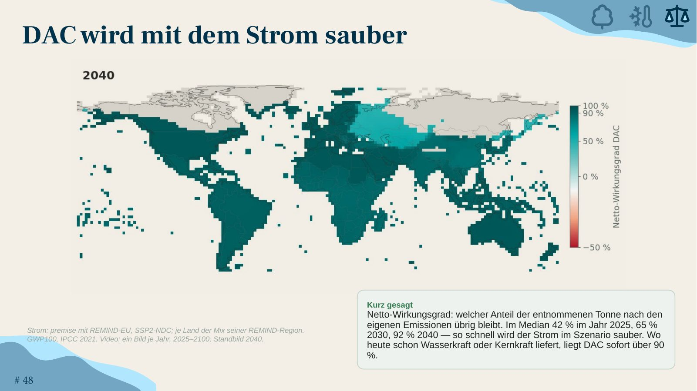
Sensitivitäten (Median): Wärme aus Industriedampf statt Wärmepumpe 62 % (2025) / 96 % (2050); mit den gemessenen Climeworks-Energiewerten -5 % (2025) / 90 % (2050) — heute also im Median netto emittierend. Achtung: REMIND-EU dekarbonisiert sehr schnell, Deutschland etwa 0,42 → 0,09 kg CO₂e/kWh von 2020 bis 2030.
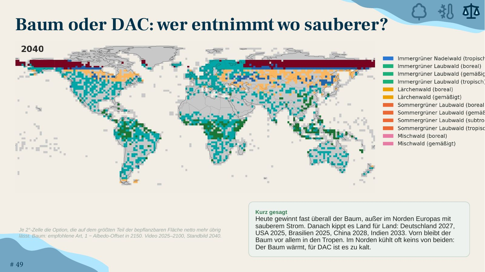
Die Frage ist nicht „Baum oder Maschine“, sondern „wann und wo“. Jahr für Jahr: Wer lässt von einer entnommenen Tonne netto mehr übrig? Beim Baum frisst die Albedo einen Teil, bei DAC die Emissionen von Strom und Anlage. Mit sauberem Strom wird DAC fast überall besser als der Baum — außer in den Tropen, wo der Baum ohne Albedo-Strafe wächst, und im Norden, wo keins von beiden funktioniert.
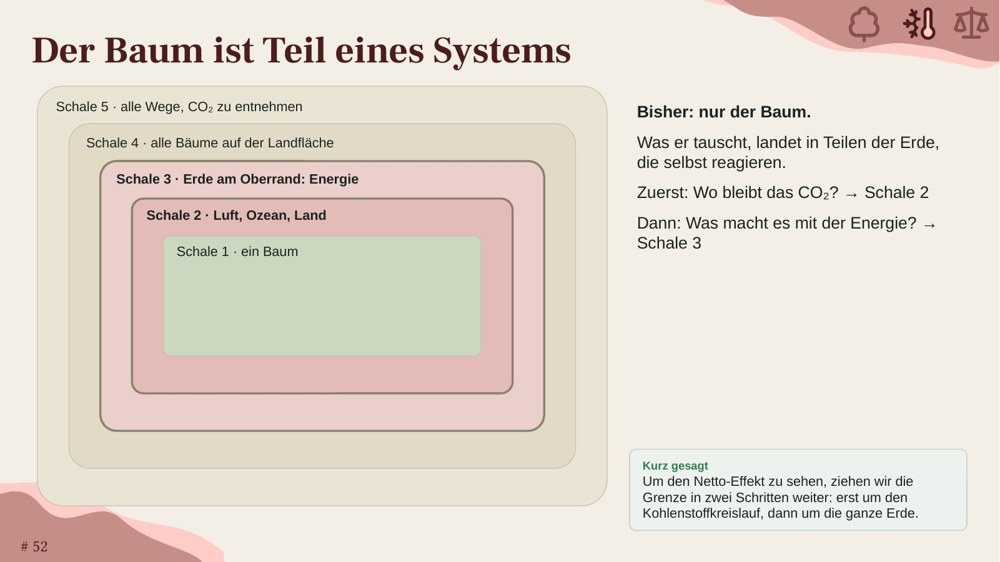
[v2] Aus dem Hauptteil genommen: Die Systemgrenze wird im Vortrag erzählt, nicht als Schalenbild gezeigt.
Das Schalenbild ist der rote Faden. Jede Rückwirkung des Systems kommt genau dort, wo ihre Schale beginnt: Ozean/Land in Schale 2, die übrige Menschheit und die Erwärmung in Schale 3.
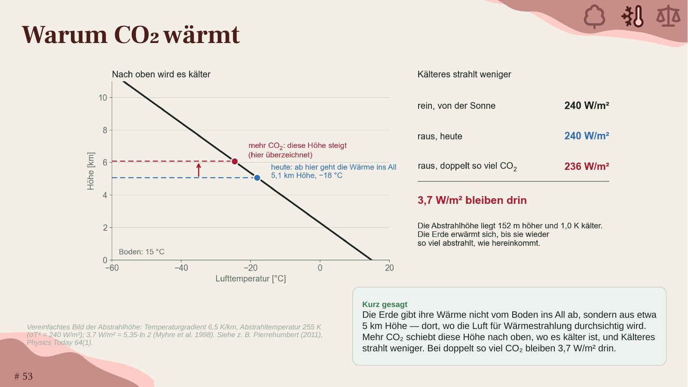
Nach oben wird es kälter, jeder kennt das vom Berg. Die Wärme der Erde geht nicht vom Boden ins All, sondern aus der Höhe, ab der darüber kaum noch CO₂ und Wasserdampf liegt — im Mittel rund 5 km, −18 °C. Mehr CO₂ heißt: Diese Höhe wandert nach oben, in kältere Luft. Kälteres strahlt weniger. Es kommt also gleich viel Sonne herein, aber weniger Wärme hinaus — die Erde wärmt sich auf, bis das wieder ausgeglichen ist. Ein Baum, der CO₂ entnimmt, senkt diese Höhe ein winziges Stück. Spektrum mit CO₂-Bande: Backup.
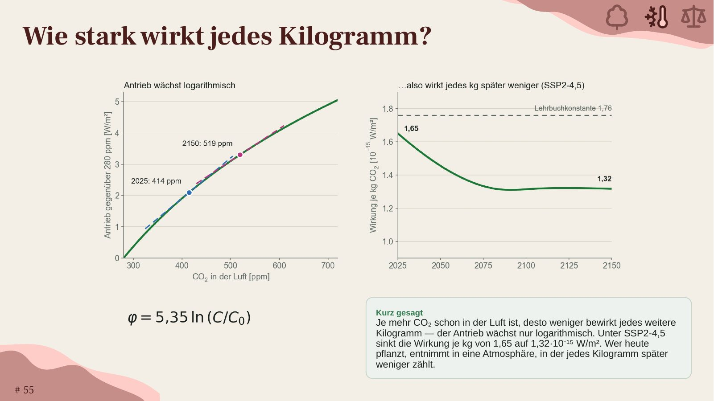
Ab hier rechnet die Rücknahme durch Ozean und Land mit FaIR unter SSP2-4,5 statt mit Joos. Von einem Impuls 2025 sind 2100 noch 42 % in der Luft (Joos: 44 %) — Ozean und Land nehmen im kalibrierten FaIR also etwas mehr auf, nicht weniger; die vollere Atmosphäre wirkt hier vor allem über den Antrieb je kg.
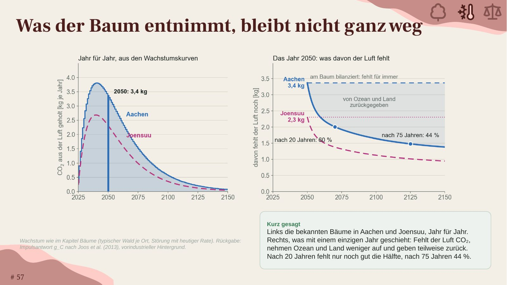
Kapiteleinstieg, Frage 1: Wie lange fehlt das CO₂ der Luft? Sprechertext: Die Kurve links kennen Sie — so viel holt der Baum jedes Jahr aus der Luft. Am Baum bilanziert wäre jedes dieser Kilogramm für immer weg, die gestrichelte Linie rechts. Tatsächlich stehen Luft, Ozean und Landbiosphäre im Austausch: Fehlt oben CO₂, gast der Ozean weniger ein und gibt zurück. Die durchgezogene Linie ist das, was der Luft wirklich fehlt. Diese Kurve heißt g_C. Nächste Folie: dasselbe für jedes Jahr, aufsummiert.
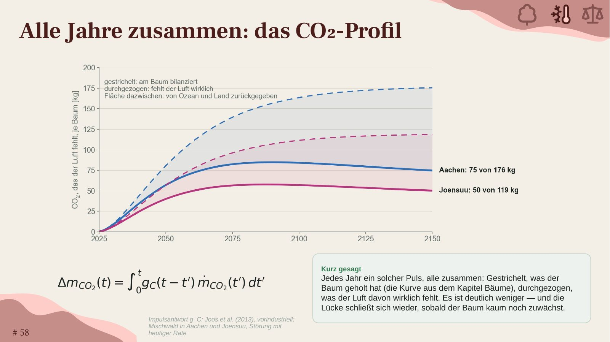
Jede Jahresentnahme klingt mit g_C ab, die Summe ist das CO₂, das der Luft wirklich fehlt. Bis 2150 fehlen der Luft in Aachen noch 165 der 370 geholten kg, in Joensuu 52 von 116 kg.
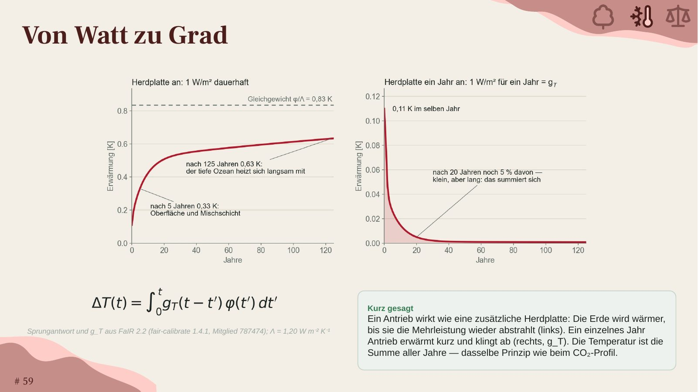
Stellen Sie sich einen Topf auf der Herdplatte vor. Der Antrieb ist die zusätzliche Leistung der Platte. Der Topf wird wärmer — und je wärmer er ist, desto mehr Wärme gibt er wieder ab. Irgendwann ist beides gleich: Gleichgewicht. Bei der Erde ist das „Abgeben“ die Abstrahlung ins All, Λ·T, und der Topf hat zwei Teile: eine dünne Oberfläche, die in Jahren folgt, und einen riesigen tiefen Ozean, der Jahrhunderte braucht. Links: Platte bleibt an. Rechts: Platte ein Jahr an und wieder aus — die Temperatur springt und klingt ab. Das ist g_T. Unsere Bäume sind eine Folge solcher kurzen Stöße, jedes Jahr ein neuer — Impuls, Antwort, Summe, genau wie beim CO₂. Herleitung (C·dT/dt = φ − Λ·T) und die Kalibrierung von g_T: Backup.
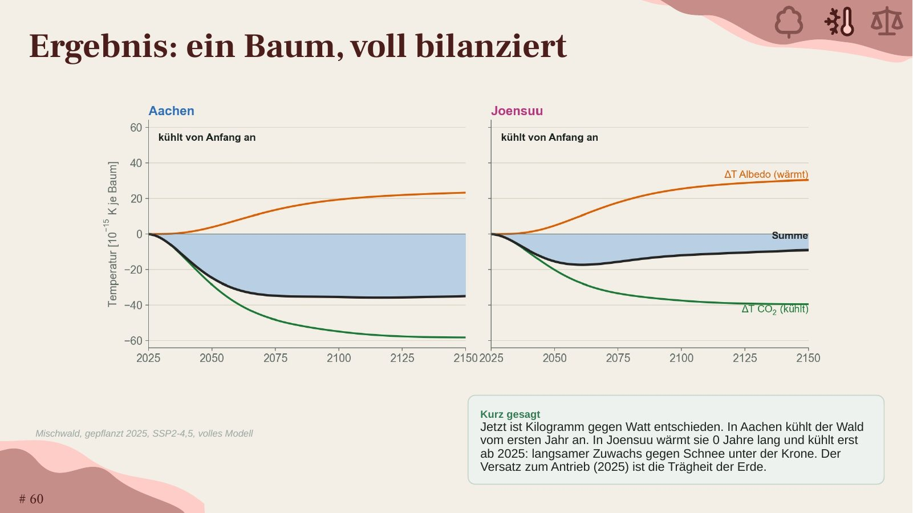
Größenordnung einmal laut sagen: bis 2150 etwa −3·10⁻¹⁴ K je Baum in Aachen, −9·10⁻¹⁵ K in Joensuu. Bis zum Vergleich bleiben wir bei „je Baum“. Joensuu liegt auf der Kippe: Ob der Baum dort vor 2150 kühlt, hängt am Parametersatz des Klimamodells (mit einem anderen, ebenso zentralen FaIR-Mitglied kippt er um 2110).
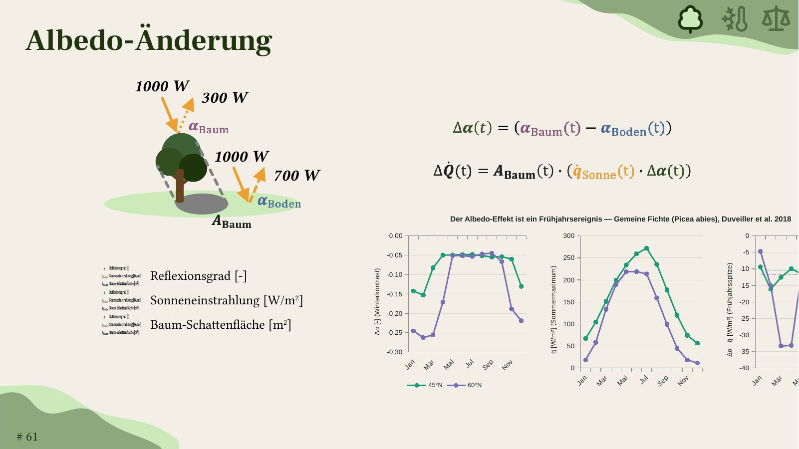
[v2] Aus dem Hauptteil genommen (Storyline v2), hierher verschoben, nicht gelöscht.
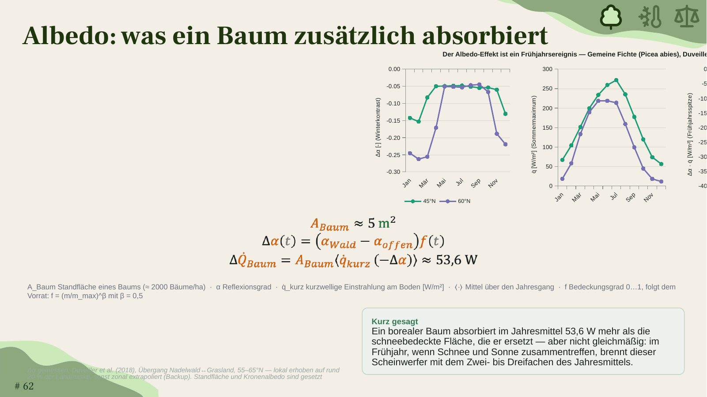
[v2] Aus dem Hauptteil genommen (Storyline v2), hierher verschoben, nicht gelöscht.
Jetzt der zweite Kanal — und der Grund, warum wir ihn überhaupt ausrechnen können, ist die erste Zeile: Ein Baum ist nicht nur Holz, er belegt auch ein Stück Erdoberfläche. Wir rechnen mit rund fünf Quadratmetern Standfläche, das entspricht etwa zweitausend Bäumen pro Hektar — eine typische Aufforstungsdichte. Damit bleiben wir konsequent beim einzelnen Baum und müssen nicht auf Hektar umsteigen.
Zweite Zeile: Die Albedo-Änderung ist der Unterschied zwischen Wald und offener Fläche, anteilig mit dem Bedeckungsgrad f. Wichtig: Der Effekt beginnt sofort, nicht erst beim Kronenschluss — ein Baum verdunkelt genau so viel, wie seine Krone überschirmt. Deshalb steht hier f und nicht die Biomasse. Links im Bild sehen Sie das: Die Bedeckung ist nach fünfzehn bis zwanzig Jahren fertig, die Biomasse wächst danach noch Jahrzehnte weiter. Wer den Albedo-Effekt an die Biomasse koppelt, lässt ihn zu spät einsetzen.
Dritte Zeile — und das ist die Zahl, die ich Ihnen mitgeben möchte: Multipliziert man die Standfläche mit der Einstrahlung und der Albedo-Änderung, absorbiert ein borealer Baum dauerhaft rund siebzig Watt mehr als die schneebedeckte Freifläche, die er ersetzt. Eine alte Glühbirne, die nie ausgeht, pro Baum.
Rechts der zweite Punkt: Das Ganze ist stark saisonal. Der große Kontrast entsteht im Winter, wenn der Baum den Schnee verdeckt — die Sonne scheint aber im Sommer. Wirksam ist das Produkt. Deshalb die spitzen Klammern: Wir mitteln das Produkt über den Jahresgang, nicht die einzelnen Faktoren.
Falls Fragen kommen — [Zahlen bitte gegenprüfen] Zahlenbeispiel boreal: ⟨Q̇_sw,0⟩ ≈ 120 W/m² am Boden im Jahresmittel bei 60°N, effektive Δα ≈ −0,12 im einstrahlungsgewichteten Jahresmittel, A_Baum = 5 m² → 5 · 120 · 0,12 ≈ 72 W. Tropen: ≈ 200 W/m², Δα ≈ −0,04 → rund 40 W, bei gleichzeitig viel größerer Kohlenstoffaufnahme.
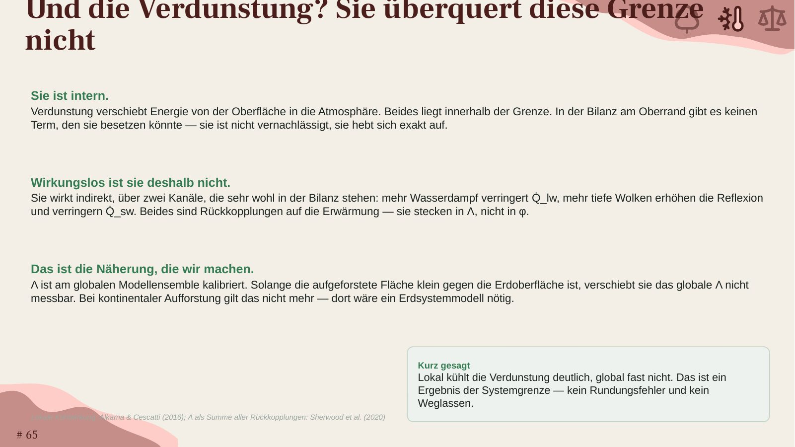
[v2] Aus dem Hauptteil genommen (Storyline v2), hierher verschoben, nicht gelöscht.
Ich habe Ihnen eine Antwort schuldig gelassen. Die Verdunstung war der größte der drei Oberflächeneffekte — und jetzt taucht sie in der Bilanz nicht mehr auf. Das ist erklärungsbedürftig, und die Erklärung ist der Kern des Systemgrenzen-Arguments.
Erstens: Sie ist intern geworden. Verdunstung transportiert Energie von der Oberfläche in die Atmosphäre. Beide liegen innerhalb meiner Grenze. Ich habe sie nicht vernachlässigt — es gibt schlicht keinen Term, den sie besetzen könnte. Sie hebt sich identisch auf.
Zweitens, und das ist der ehrliche Teil: Wirkungslos ist sie deshalb nicht. Sie wirkt indirekt, über zwei Kanäle, die sehr wohl über die Grenze gehen. Mehr Verdunstung heißt mehr Wasserdampf, und Wasserdampf ist ein Treibhausgas — das verringert die Abstrahlung. Mehr Verdunstung heißt auch mehr tiefe Wolken, und die reflektieren — das verringert die Einstrahlung. Beides sind aber Rückkopplungen auf den Zustand des Systems, keine Antriebe. Sie stecken im Rückkopplungsparameter Λ, den wir gleich einführen, nicht im Antrieb φ.
Drittens, damit es niemand als Taschenspielertrick liest: Genau hier liegt die Grenze meines Modells. Λ ist am globalen Modellensemble kalibriert. Eine lokale Landnutzungsänderung verändert Λ lokal — global aber nur dann messbar, wenn die Fläche eine relevante Größenordnung der Erdoberfläche erreicht. Für Projektgrößen ist das eine gute Näherung. Für kontinentale Aufforstung wäre sie es nicht, dort bräuchte man ein Erdsystemmodell.
Und was bleibt: Lokal kühlt die Verdunstung deutlich, teils mehrere Kelvin. Global fast nicht. Das ist kein Fehler in der Rechnung — das ist ein Ergebnis. Es ist genau derselbe Befund wie in der Beobachtungsliteratur: lokal kühler, global nahezu neutral.
Falls Fragen kommen — Die Sprechweise: φ ist ein Antrieb — etwas, das wir am System ändern. Λ ist die Antwort des Systems auf seine eigene Temperaturänderung. Die Verdunstungsänderung eines Waldes ist strukturell eine Zustandsänderung des Systems, kein externer Antrieb.
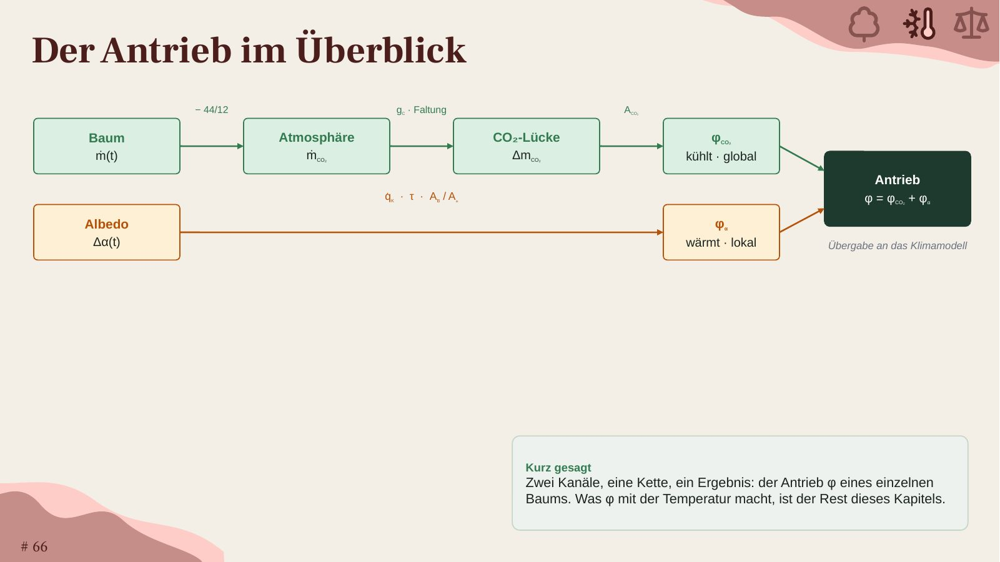
[v2] Aus dem Hauptteil genommen (Storyline v2), hierher verschoben, nicht gelöscht.
Damit ist die Blackbox vom Kapitelanfang zur Hälfte offen. Einmal die Übersicht: Das ist alles, was wir über den Baum gebaut haben, durch die Energiebilanz geschoben — und es endet an einer klaren Übergabestelle.
Oben der Kohlenstoffpfad. Der Baum bindet netto, das rechnen wir auf CO₂ um, davon fehlt der Atmosphäre eine Lücke, die sich über die Zeit teilweise wieder auffüllt, und daraus wird ein kühlender Antrieb. Beachten Sie: In dieser Zeile steht nirgends eine Fläche. Der Effekt ist global.
In der Mitte die Albedo. Nur ein Schritt, aber der hat es in sich — dort steckt die Standfläche des Baums drin, geteilt durch die Erdoberfläche. Dieser Effekt ist lokal und wärmt.
Unten die Verdunstung, und die läuft bewusst ins Leere. Sie ist an der Bilanzgrenze, die wir gleich ziehen, ein interner Fluss — sie verschiebt Energie innerhalb des Systems und kann deshalb gar keinen Antrieb bilden. Lokal ist sie groß, global neutral. Dazu kommt in zwei Folien eine eigene Begründung.
Rechts laufen die beiden übrigen zusammen zu einem einzigen φ. Und genau da ist die Übergabe: Bis hierhin war alles Baum. Ab hier fragen wir, wer sonst noch an diesem φ dreht — das ist die dritte Frage vom Kapitelanfang.
Falls Fragen kommen — Alle Parameter darin sind bis hierhin Platzhalter; standortabhängig gefüllt werden sie im Ergebnisteil.
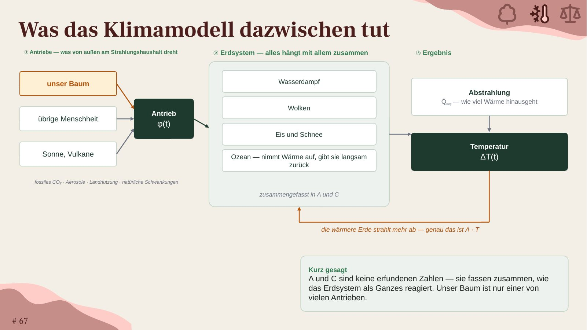
[v2] Aus dem Hauptteil genommen (Storyline v2), hierher verschoben, nicht gelöscht.
Bevor wir rechnen, eine Folie zur Einordnung — was tut so ein Klimamodell eigentlich, und wo sitzt mein Baum darin?
Links stehen die Antriebe. Das sind die Dinge, die von außen am Strahlungshaushalt drehen. Mein Baum ist einer davon — mit seiner CO₂-Aufnahme und seiner Albedo-Änderung. Aber eben nur einer. Daneben stehen das fossile CO₂ der übrigen Menschheit, Aerosole, andere Landnutzung, und natürliche Antriebe wie Sonne und Vulkane. Alle addieren sich zu einem einzigen φ. Genau deshalb ist der Antrieb so eine nützliche Größe: Er macht völlig verschiedene Eingriffe vergleichbar.
In der Mitte steht das, was ich vorher nur als Λ und C abgekürzt habe. Das Erdsystem reagiert nicht als eine Größe, sondern als Geflecht: Wird es wärmer, steigt der Wasserdampfgehalt — und Wasserdampf ist selbst ein Treibhausgas. Wolken ändern sich. Eis und Schnee schmelzen, die Oberfläche wird dunkler. Und der Ozean nimmt Wärme auf und gibt sie erst über Jahrzehnte wieder her. Das ist die Trägheit.
Rechts steht, worauf das alles hinausläuft: wie viel langwellige Wärmestrahlung am Ende tatsächlich den Planeten verlässt. Und daraus die Temperaturänderung.
Und jetzt die Schleife unten, die den Kern ausmacht: Die Temperaturänderung wirkt auf das Erdsystem zurück. Eine wärmere Erde strahlt mehr ab, das bremst die Erwärmung. Genau das ist der Term Λ mal T aus der Bilanz — keine erfundene Konstante, sondern die Summe all dieser Wechselwirkungen in einer Zahl.
Das ist die Arbeitsteilung, die ich Ihnen anbiete: Der linke Kasten ist meins — den Antrieb eines Baums habe ich hergeleitet. Der mittlere Kasten gehört der Klimawissenschaft, kalibriert an vollständigen Erdsystemmodellen. Ein Emulator wie FaIR ist genau dieser mittlere Kasten, schnell genug, um ihn tausendfach zu rechnen.
Falls Fragen kommen — Λ ≈ 1,3 W/m²K nach Sherwood et al. 2020. Größter Einzelbeitrag ist der Planck-Effekt (etwa 3,2 W/m²K, dämpfend), den Wasserdampf und Wolken netto deutlich abschwächen. Wolken sind der größte Unsicherheitsbeitrag.
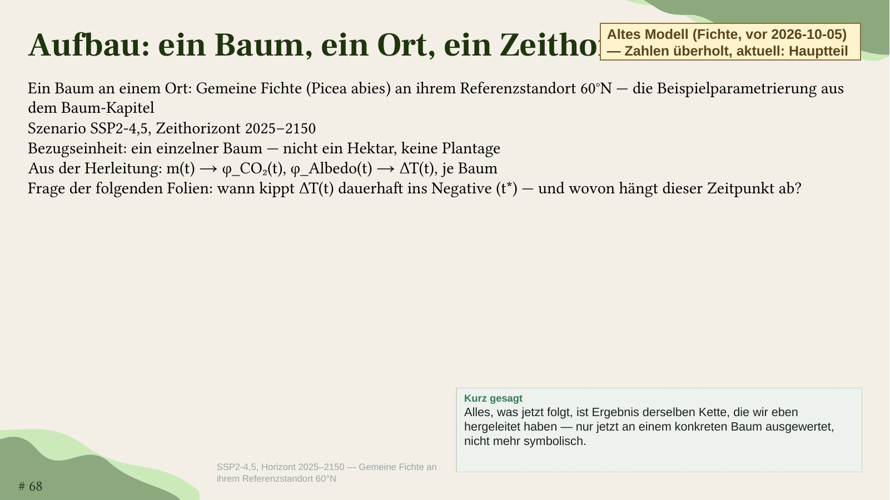
[v2] Aus dem Hauptteil genommen (Storyline v2), hierher verschoben, nicht gelöscht.
Referenzstandorte stehen in nbs.species.REFERENCE_SITES, nicht nur auf dieser Folie. Sie sind bewusst NICHT die Bandmitten, die die Kaskade fuer den Stoerungspuffer nutzt (65/55/42,5/22,5/5) — zwei Saetze fuer zwei Zwecke.
Bezugseinheit ein Baum: das ist eine Entscheidung, keine Notwendigkeit. Sie haelt die Groessen anschaulich (kgC statt GtC) und macht die Flaechenhochrechnung spaeter explizit statt implizit.
Wenn gefragt wird, warum SSP2-4.5: es ist das mittlere Szenario, und der Vergleich ueber Szenarien steht als Sensitivitaet im Backup.
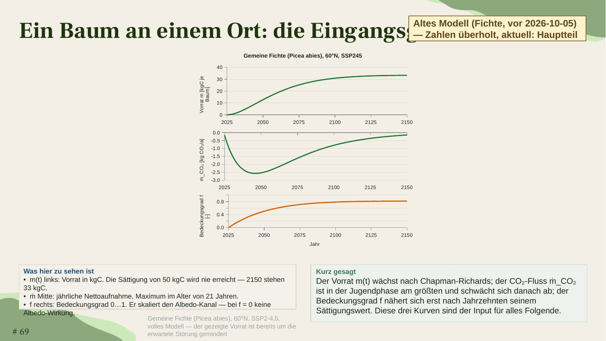
[v2] Aus dem Hauptteil genommen (Storyline v2), hierher verschoben, nicht gelöscht.
Die Kurven kommen aus nbs.tree. Der Integrator ist ein exakter Flussschritt: Vorrat invertieren zum aequivalenten Chapman-Richards-Alter, um dt weiterdrehen, geschlossene Form auswerten. Kein Runge-Kutta, deshalb kein Abschneidefehler im Wachstum.
Der Vorrat ist bereits um die erwartete Stoerung gemindert (Erwartungswertlauf, p*E[s] kontinuierlich). Ohne Stoerung stuende 2150 mehr da.
Bedeckungsgrad f = (m/m_max)^beta mit beta = 0,5. Das ist eine Setzung, keine Messung — sie entscheidet, wie schnell die Albedo-Strafe einsetzt, und ist damit einer der sensitivsten Parameter des ganzen Modells.
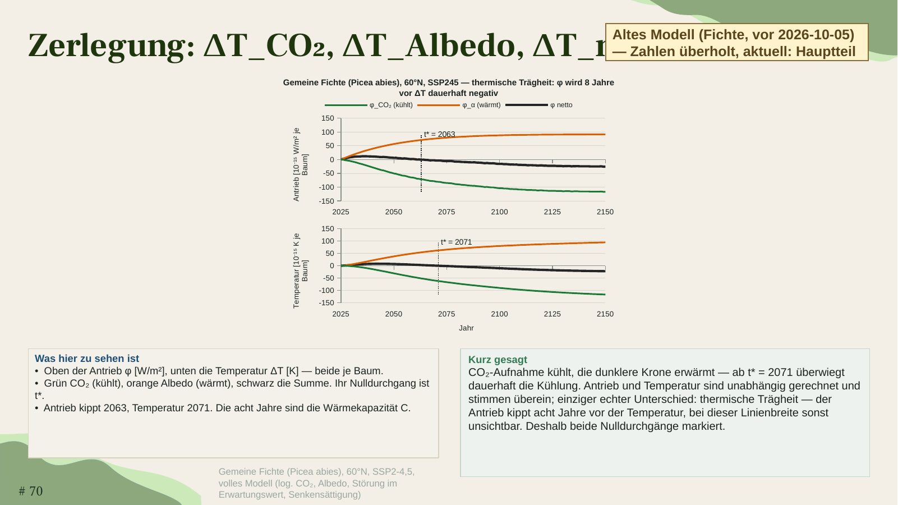
[v2] Aus dem Hauptteil genommen (Storyline v2), hierher verschoben, nicht gelöscht.
Beide Zeilen sind unabhaengig gerechnet: der Antrieb aus der Kette Baum -> CO2-Fluss -> Faltung, die Temperatur daraus per Faltung mit g_T. Dass sie fast deckungsgleich aussehen, liegt am kurzen Gedaechtnis von g_T.
Die acht Jahre Versatz sind der einzige sichtbare Unterschied und die einzige Stelle, an der die Waermekapazitaet des Systems im Ergebnis auftaucht.
Groessenordnung: 1e-14 K je Baum. Das ist kein Rundungsfehler, sondern der ehrliche Beitrag eines Baumes. Alles Weitere ist Multiplikation mit einer Stueckzahl.
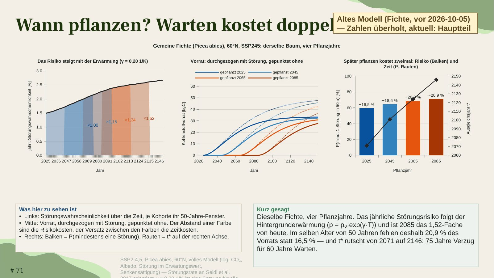
[v2] Aus dem Hauptteil genommen (Storyline v2), hierher verschoben, nicht gelöscht.
Die Kohorte bleibt auf der gemeinsamen Zeitachse. Sie liest ihre Stoerungswahrscheinlichkeit aus dem Kalenderjahr, das sie durchlebt, nicht aus ihrem Alter — das ist der ganze Mechanismus.
gamma = 0,20 1/K ist fuer alle fuenf Arten gleich gesetzt und traegt die gesamte Aussage dieser Folie. Es ist eine Setzung, an Seidl et al. 2017 orientiert, nicht daraus entnommen.
75 Jahre Verzug fuer 60 Jahre Warten: der Ueberhang von 15 Jahren kommt aus dem hoeheren Risiko UND der volleren Atmosphaere. Die beiden lassen sich mit den Schaltern in nbs.config trennen.
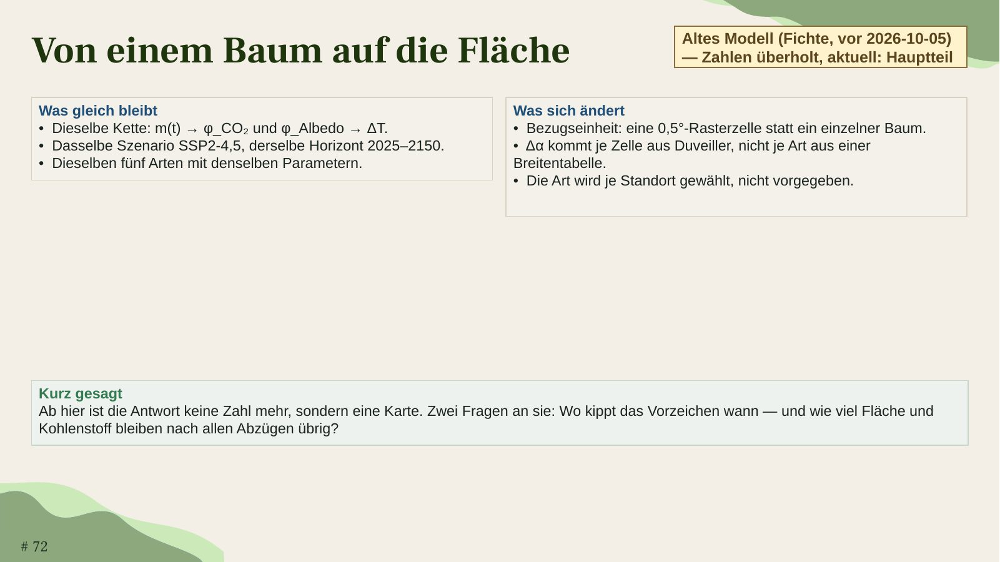
[v2] Aus dem Hauptteil genommen (Storyline v2), hierher verschoben, nicht gelöscht.
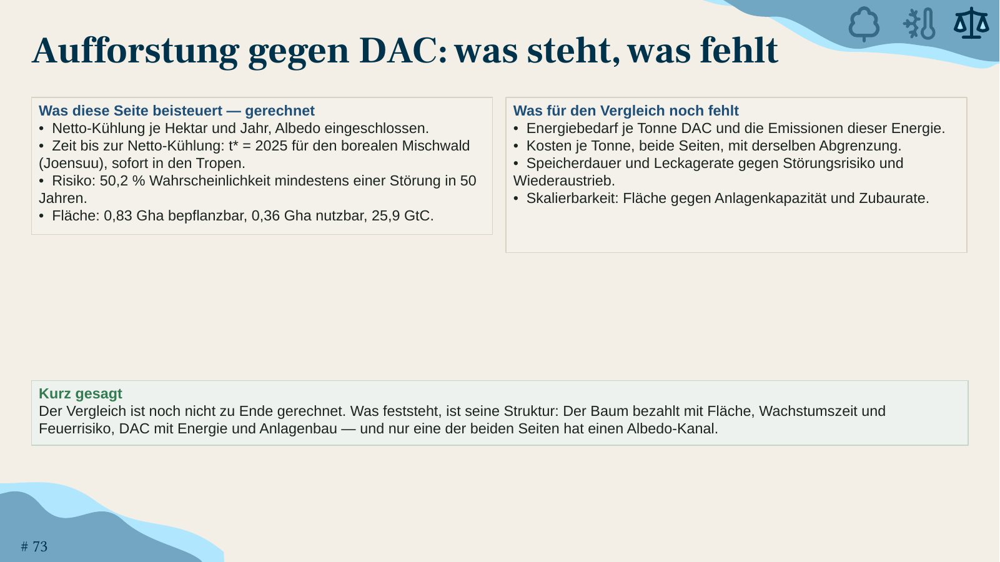
[v2] Aus dem Hauptteil genommen (Storyline v2), hierher verschoben, nicht gelöscht.
[v2] Ersetzt durch das eigene DAC-Modell (vier Folien davor).
PLATZHALTER. Die DAC-Zahlen kommen von aussen und stehen noch aus.
Wenn sie da sind: dieselben vier Kriterien wie auf der Folie davor, und die Aufforstungsseite mit den Zahlen aus dem Potenzialteil fuellen — nicht mit den naiven Kohlenstoffzahlen, sonst faellt der Vergleich zugunsten der Baeume aus, weil der Albedo-Posten fehlt.
Wichtig beim Vergleich: gleiche Systemgrenze. Unsere Zahlen sind Netto-Antrieb am Oberrand der Atmosphaere; eine DAC-Zahl je entnommener Tonne ist das nicht automatisch.
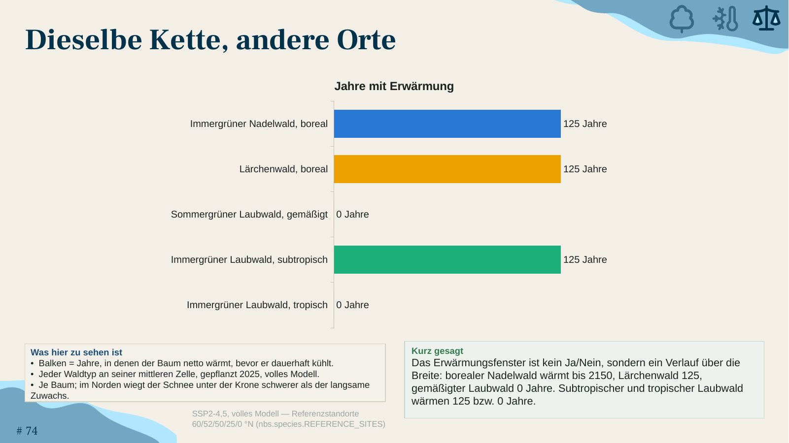
[v2] Aus dem Hauptteil genommen (Storyline v2), hierher verschoben, nicht gelöscht.
[v2] Kein neues Konzept — Wachstum (Bäume-Kapitel) und Albedo-Karte sind bekannt, jetzt die volle Kette je Ort. Balken: Jahre mit Erwärmung je Art an ihrem Referenzstandort.
Die Kurven sind je Baum. Ein Vergleich je Hektar faellt anders aus, weil die Standflaechen zwischen 4 und 6 m2 liegen — genau diese Umrechnung macht die Empfehlungskarte im Vergleich-Kapitel.
Die Erwaermungsfenster: Fichte 45 Jahre, Buche 14, Kiefer 11, Eukalyptus und Tropen null. In der Abbildung sind nur die 45 Jahre sichtbar; die anderen sind zu klein fuer diese Skalierung. Das ist eine Schwaeche der Darstellung, nicht des Ergebnisses.
Warum die Kiefer bei 52 Grad kuerzer waermt als die Buche bei 50, obwohl sie noerdlicher steht: sie waechst schneller (k = 0,045 gegen 0,040) und hat die kleinere Standflaeche (5 gegen 6 m2), also weniger Albedo-Flaeche je Baum. Die Buche hat dafuer die hellere Krone (alpha 0,15 gegen 0,10). Die Reihenfolge entsteht aus dem Zusammenspiel, nicht aus einem einzelnen Parameter — und alle drei Werte sind Setzungen, keine Messungen.
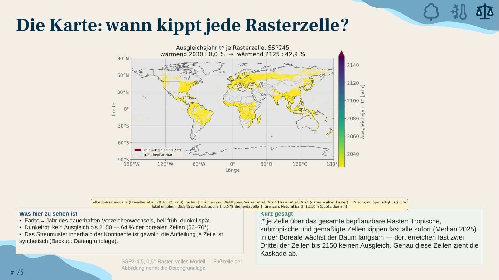
[v2] Aus dem Hauptteil genommen (Storyline v2), hierher verschoben, nicht gelöscht.
[v2] Laut Storyline: erstes Bild im selben Kartenausschnitt wie die Albedokarte (Europa + westliches Russland, Marker Aachen/Joensuu), dann global; Farbskala auf 4 Klassen.
t* ist das Jahr nach dem letzten Vorzeichenwechsel, nicht der erste kuehlende Moment. Eine Zelle kann zwischendurch kuehlen und wieder waermen; erst ab t* bleibt sie kuehlend.
Deshalb sind t*-Karte und Vorzeichenkarte nicht ineinander umrechenbar: 2060 waermen noch 24,7 Prozent der Zellen, obwohl die meisten t* bereits hinter sich haben.
Die 4,8 Prozent borealen Zellen ohne Ausgleich sind genau die, die die Kaskade als Albedo-Filter abzieht.
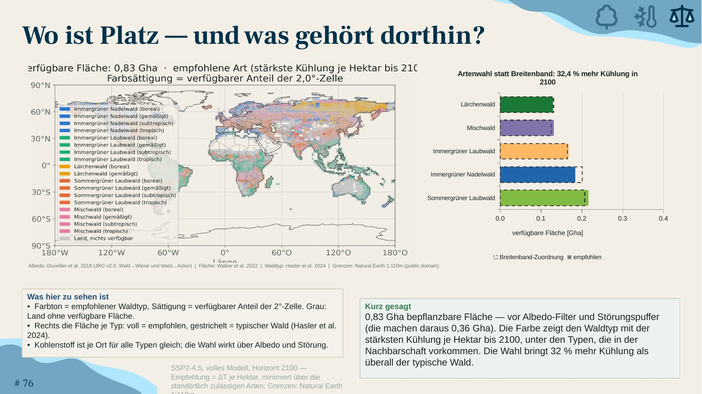
[v2] Aus dem Hauptteil genommen (Storyline v2), hierher verschoben, nicht gelöscht.
[v2] Zulässig ist ein Waldtyp in einer Zelle, wenn er in der 3×3-Nachbarschaft auf mindestens 10 % der klassifizierten Fläche der wahrscheinlichste Wald ist (Hasler et al. 2024).
Die Empfehlung ist ein Argmin von Delta_T je Hektar ueber die standoertlich zulaessigen Arten. Zulaessig heisst: die Breitenhuelle der eingetragenen FAO-Oekozonen der Art — wieder Baender, kein Raster.
Je Hektar und nicht je Baum, weil sonst die dichteste Pflanzung mechanisch gewinnt.
Der Horizont 2100 steht im Titel, weil die Empfehlung davon abhaengt: frueh dominiert die Albedo, spaet der Kohlenstoff. Bei einem anderen Horizont kann eine andere Art gewinnen.
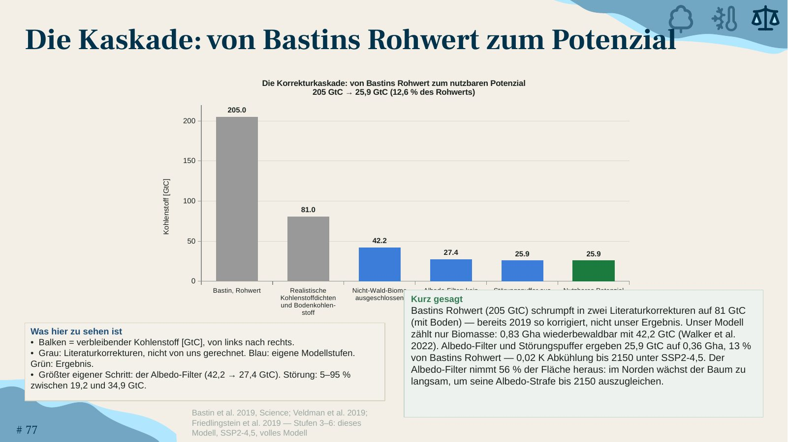
[v2] Aus dem Hauptteil genommen (Storyline v2), hierher verschoben, nicht gelöscht.
[v2] Neu gerechnet mit Waldtypen (Walker-Fläche und -Kohlenstoff, Hasler-Waldtyp), Offenland-Albedo, FaIR mit fair-calibrate 1.4.1. Störungsband: 5–95 % des Ensembles je Waldtyp an einer typischen verbliebenen Zelle, über die Typen aufsummiert — als würden alle Bäume gemeinsam getroffen. Das ist eine obere Grenze der Streuung; unabhängige Störungen über Millionen Bäume mitteln sich zum Mittelwert.
Die Stufen 1 und 2 sind Literatur, nicht unsere Rechnung. Die Korrektur von 205 auf 81 GtC steht in den Technical Comments zu Bastin in Science 366 (Veldman et al., Friedlingstein et al.).
Die Kohlenstoffdichte ist an unsere eigene Stufe-3-Flaeche verankert, nicht an Bastins 0,9 Gha. Sonst saehe Stufe 3 wie eine Zunahme aus, weil unsere unabhaengig gemessene Flaeche etwas groesser ausfaellt.
Der Stoerungspuffer ist das Verhaeltnis Ensemble-Mittel zu deterministischem Lauf bei 2150, aus 300-Mitglieder-Ensembles je Art. Nicht 1000 — fuer ein Verhaeltnis reicht das, und die Kaskade bleibt im Sekundenbereich.
Ueberleitung ins Vergleich-Kapitel: Damit steht die Groesse, um die es geht — rund 78 GtC ueber 125 Jahre, und zwar nur dort, wo die Zelle ueberhaupt kuehlt. Die Frage des letzten Kapitels ist, was diese Zahl wert ist, wenn man sie neben die Restemissionen und neben eine Maschine legt.
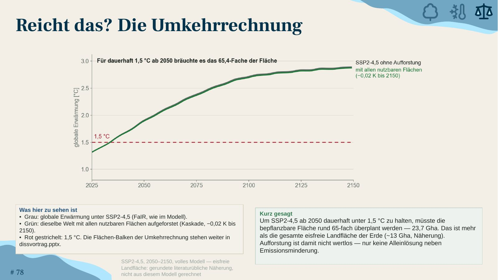
[v2] Aus dem Hauptteil genommen (Storyline v2), hierher verschoben, nicht gelöscht.
[v2] Neu gerechnet mit Waldtypen (Walker-Fläche) und Offenland-Albedo (nbs.potential.reverse_1p5).
[v2] FaIR 2.2 mit dem kalibrierten Parametersatz fair-calibrate 1.4.1 (Smith et al. 2024), Mitglied 787474, nahe am Ensemble-Median: 1,32 K 2025, 2,6 K für 2081–2100 (IPCC AR6: 2,7 K), gegenüber 1850–1900. Dieselbe Baseline, gegen die die Umkehrrechnung rechnet; kritisch ist das Jahr 2149.
Die Umkehrrechnung skaliert die identifizierte Flaeche mit demselben Arten- und Flaechenmix hoch, nicht mit einem neuen. Sie fragt: wie viele Vielfache waeren noetig.
Das Kriterium ist streng: ab 2050 dauerhaft unter 1,5 Grad, nicht einmalig.
13 Gha eisfreies Land ist eine gerundete Literaturnaeherung und stammt nicht aus diesem Modell. Der berechnete Bedarf liegt darunter — das ist getestet, weil hier zwischenzeitlich die falsche Behauptung stand, er liege darueber.
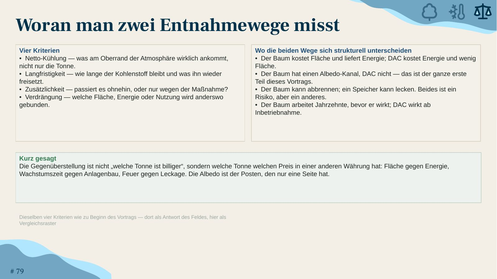
[v2] Aus dem Hauptteil genommen (Storyline v2), hierher verschoben, nicht gelöscht.
Diese Folie steht bewusst vor den Zahlen: sie legt fest, worueber verglichen wird, bevor irgendeine Zahl das Feld besetzt.
Der wichtigste Punkt fuer diesen Vortrag ist der Albedo-Kanal. Er ist der einzige Posten, den die eine Seite hat und die andere strukturell nicht — und er ist genau der, den die Aufforstungsliteratur meist weglaesst.
Die Zahlenfolie danach kommt von einer Kollegin bzw. einem Kollegen und ist noch offen.
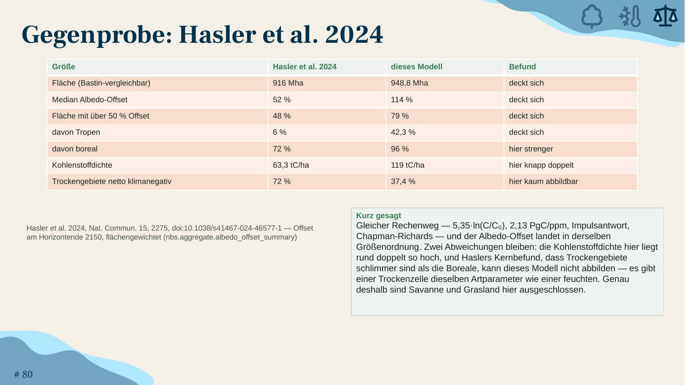
[v2] Aus dem Hauptteil genommen (Storyline v2), hierher verschoben, nicht gelöscht.
[v2] Modellspalte neu gerechnet mit Waldtypen und Walker-Fläche: nbs.aggregate.albedo_offset_summary, Anteile über 50 % Offset in 0–35° bzw. 60–70°. Einordnung gegen weitere Studien: Folie „Einordnung: andere Studien“; Zerlegung: docs/methods/abgleich-hasler-waldtypen.md.
Hasler et al. 2024 ist die naechstliegende externe Pruefung: gleiche Frage, gleiche Datenfamilie, und eine eigene Auswertung genau der Bastin-Flaeche.
Wichtigster methodischer Punkt: tau_atm = 0,8 leistet, was dort sechs Strahlungskerne leisten. Die Streuung zwischen den Kernen betraegt rund plus/minus 15 Prozent des Medians.
Die beiden Abweichungen sind nicht kosmetisch. Die Kohlenstoffdichte ist rund doppelt so hoch, und der Trockengebietsbefund ist mit diesem Modell strukturell nicht reproduzierbar. Beides steht auf der Grenzen-Folie.
Der volle Abgleich liegt in docs/superpowers/specs/2026-09-10-abgleich-hasler-2024.md.
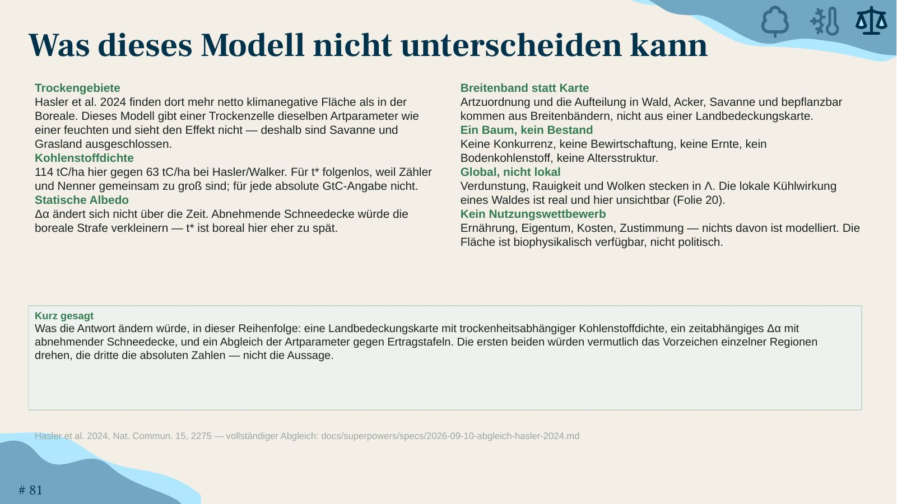
[v2] Aus dem Hauptteil genommen (Storyline v2), hierher verschoben, nicht gelöscht.
Diese Folie gehoert bewusst in den Hauptteil und nicht ins Backup. In einer Verteidigung ist die erste Frage, was das Modell nicht kann; wer sie selbst stellt, behaelt die Deutungshoheit.
Die drei Punkte links sind extern belegt (Hasler). Die vier rechts sind Konstruktionsentscheidungen dieses Modells und im Code dokumentiert.
Wenn jemand fragt, ob die Aussage damit steht oder faellt: nein. Die Reihenfolge der Arten und die Existenz des Erwaermungsfensters haengen am Verhaeltnis Albedo zu Kohlenstoff, und genau dieses Verhaeltnis ist gegen Hasler geprueft. Was wackelt, sind absolute GtC und die Frage, welche Regionen genau betroffen sind.
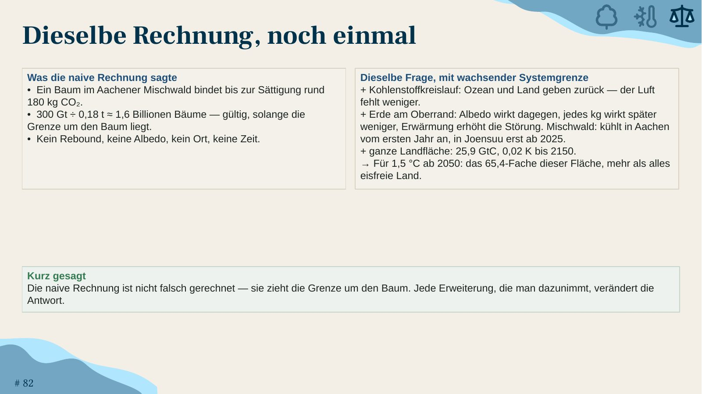
[v2] Aus dem Hauptteil genommen (Storyline v2), hierher verschoben, nicht gelöscht.
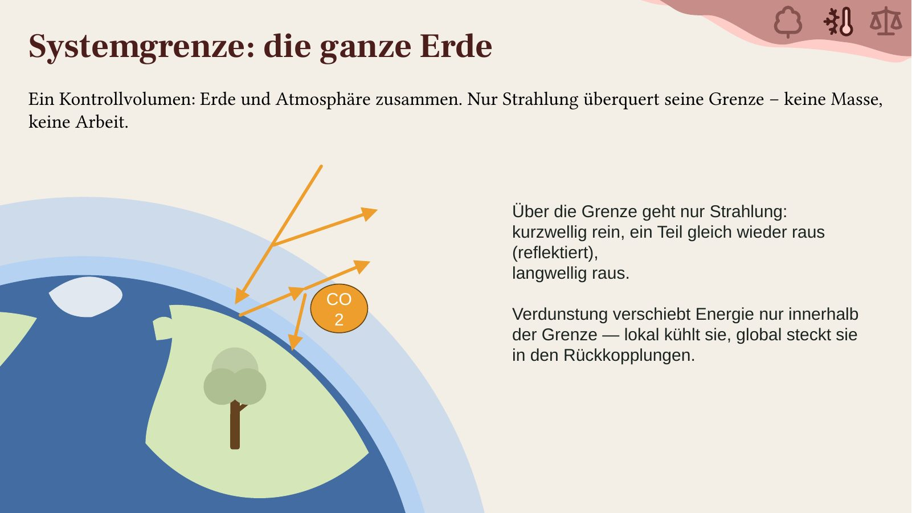
[v2] Aus dem Hauptteil genommen (Storyline v2), hierher verschoben, nicht gelöscht.
[v2] Rote Arbeitsnotizen durch Text ersetzt; Folie 26 (Verdunstung) liegt im Backup, hier nur der eine Satz.
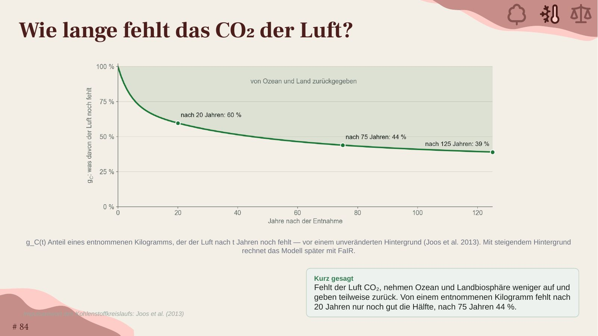
[v2] Aus dem Hauptteil genommen (Storyline v2), hierher verschoben, nicht gelöscht.
Kapiteleinstieg. Sprechertext: Die naive Rechnung hat angenommen, dass alles entnommene CO₂ der Luft fehlt, für immer. Aber Ozean und Landbiosphäre stehen mit der Luft im Austausch: Fehlt dort CO₂, nehmen sie weniger auf und geben teilweise zurück. Nach 20 Jahren fehlt nur noch gut die Hälfte, nach 75 Jahren 44 %. Die Gleichungen (ṁ_CO₂ = −44/12·ṁ und die Faltung) liegen rechts neben der Folie geparkt; sie stehen auf „CO₂-Aufnahme je Baum“ und „Das CO₂-Profil in der Luft“.
Perspektivwechsel: weg vom Baum, hin zur Atmosphäre. Was der Baum einlagert, fehlt oben in der Luft. Erste Zeile: Wir rechnen von Kohlenstoff auf CO₂ um — Faktor 44 zu 12 — und das Vorzeichen dreht sich. Eine negative Emission.
Aber: Eine entnommene Tonne bleibt nicht draußen. Ozean und Landbiosphäre reagieren und füllen die Lücke zum Teil wieder auf. Deshalb hat CO₂ keine einzelne Halbwertszeit, sondern eine Antwortfunktion — g_C. Von einer heute entnommenen Tonne sind nach hundert Jahren noch rund vierzig Prozent wirksam.
Und der Baum nimmt nicht einmalig auf, sondern jedes Jahr ein bisschen. Jede Aufnahme hat ihre eigene Uhr laufen. Im Bild die dünnen Kurven — jede einzelne Aufnahme, für sich abklingend. Interessant ist die dicke Linie: die Summe. Mathematisch ein Faltungsintegral.
Merken Sie sich die drei Schritte: Impuls, Antwortfunktion, Faltung. Beim Klima kommt exakt dieselbe Struktur wieder, dann mit g_T statt g_C. Das ist kein Zufall — beides sind lineare Systeme.
Falls Fragen kommen — g_C heißt in der Literatur IRF, impulse response function. Joos et al. 2013: a₀ = 0,217, drei Anteile mit τ ≈ 4, 37 und 394 Jahren, dimensionslos.
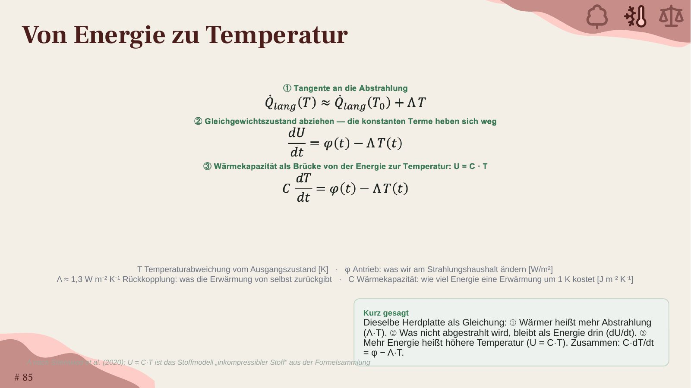
[v2] Aus dem Hauptteil genommen (Storyline v2), hierher verschoben, nicht gelöscht.
[v2] Erst die Herdplatte (Vorfolie), dann die drei Schritte. Λ auf der Folie nach Sherwood et al. (2020) ≈ 1,3; im Modell (FaIR-Mitglied) 1,20 W m⁻² K⁻¹.
Drei Schritte auf einer Folie, weil sie zusammengehören — am Ende steht die Gleichung, mit der wir bis zum Schluss arbeiten.
Erstens: Die Abstrahlung hängt nichtlinear von der Temperatur ab, im Kern Stefan-Boltzmann mit T hoch vier, dazu Rückkopplungen. Für kleine Änderungen brauchen wir das nicht. Wir legen eine Tangente an: Ausgangswert plus Steigung mal Temperaturänderung. Diese Steigung bekommt einen Namen — Λ. Je größer Λ, desto stärker bremst sich die Erwärmung selbst.
Zweitens: Wir setzen das ein und ziehen den Ausgangszustand ab. Und jetzt der schöne Moment — im Ausgangszustand war Gleichgewicht, rein gleich raus. Diese konstanten Terme heben sich exakt weg. Übrig bleibt eine Gleichung, die nur noch mit Abweichungen rechnet. T ist ab jetzt die Temperaturabweichung, φ die Störung, die wir verursachen.
Drittens: Links steht noch Energie, wissen wollen wir Temperatur. Die Brücke ist die Wärmekapazität — und das ist kein Zusatzgesetz, sondern dasselbe Stoffmodell, das für jeden inkompressiblen Stoff in der Formelsammlung steht. Der Ozean ändert sein Volumen nicht, also ist die innere Energie eine reine Funktion der Temperatur.
Und damit haben wir sie. Lesen Sie die letzte Zeile in Rollen: φ ist unser Eingriff. Λ mal T ist, was die Erde von selbst zurückgibt. C ist ihre Trägheit. Drei Größen, jede mit einer klaren Zuständigkeit — und nur φ gehört uns.
Falls Fragen kommen — Λ ≈ 1,3 W/m²K nach Sherwood et al. 2020. Darin steckt der Planck-Effekt — allein wäre er etwa 3,2 W/m²K — plus Wasserdampf-, Lapse-Rate-, Wolken- und Eis-Albedo-Rückkopplungen, die ihn netto verkleinern.
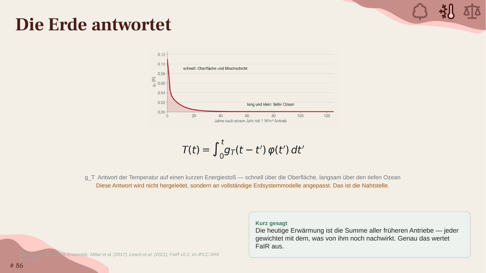
[v2] Aus dem Hauptteil genommen (Storyline v2), hierher verschoben, nicht gelöscht.
[v2] Zusammen mit „Von Energie zu Temperatur“ lesen: C·dT/dt = φ − Λ·T, Antwort g_T. Rückverweis auf g_C — Impuls, Antwort, Summe.
Ein Antrieb wirkt nicht sofort. Das System hat Trägheit — vor allem der Ozean nimmt Wärme auf und gibt sie erst über Jahrzehnte bis Jahrhunderte zurück.
Im Bild sehen Sie das: Auf einen kurzen Energiestoß antwortet das System nicht mit einem Sprung, sondern mit zwei überlagerten Ausgleichsvorgängen. Ein schneller Anteil über die Oberfläche und die durchmischte Deckschicht, in Jahren. Ein langsamer über den tiefen Ozean, in Jahrhunderten. Diese Antwort nenne ich g_T.
Und jetzt erkennen Sie die Struktur wieder — es ist exakt dieselbe Konstruktion wie vorhin beim CO₂, nur mit g_T statt g_C. Jeder frühere Antrieb wird damit gewichtet, wie stark er heute noch nachwirkt, und alles aufsummiert.
Wichtig, und das ist die ehrliche Nahtstelle: g_T leite ich nicht her. Diese Funktion wird an vollständige Erdsystemmodelle angepasst — an das CMIP6-Ensemble. Bis hierhin war alles Thermodynamik; ab hier kommen kalibrierte Zahlenwerte dazu. Genau das ist es, was ein Klimaemulator wie FaIR tut.
Der Vorteil: g_T beschreibt das System, nicht den Antrieb. Dieselbe Antwortfunktion gilt für CO₂, für Albedo, für alles. Deshalb darf man falten — und deshalb kann man die Beiträge am Ende wieder sauber auseinandernehmen.
Falls Fragen kommen — Konkret im Modell: g_T(t) = q₁·e^(−t/d₁) + q₂·e^(−t/d₂), mit d₁ in der Größenordnung Jahre und d₂ Jahrhunderte. Das ist die analytische Lösung eines Zweischicht-Ozeanmodells (Held et al. 2010; Geoffroy et al. 2013); FaIR v2.2 nutzt drei Schichten. Die Herleitung liegt im Backup.
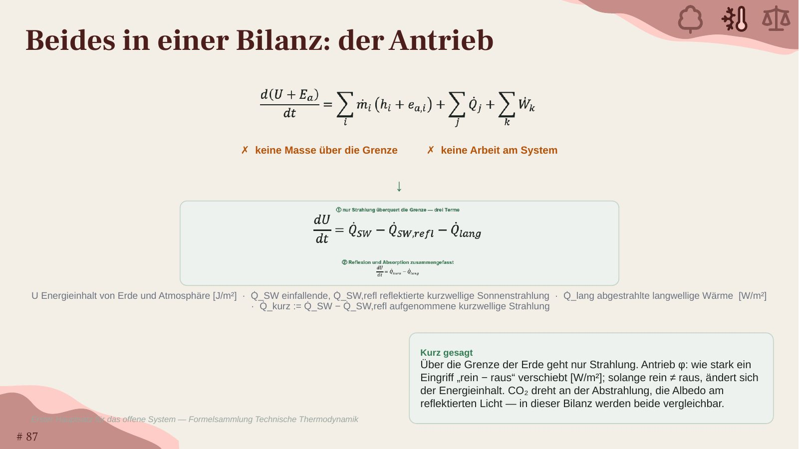
[v2] Aus dem Hauptteil genommen (Storyline v2), hierher verschoben, nicht gelöscht.
Als Ingenieur fängt man nicht beim Klima an, sondern ganz allgemein: mit dem ersten Hauptsatz für ein offenes System. Oben steht er vollständig. Links, wie sich die Energie im Kontrollvolumen ändert; rechts alles, was das bewirken kann — Stoffströme, zugeführte Wärme, verrichtete Arbeit. Diese Gleichung gilt für einen Reaktor, für eine Turbine, und für die Erde.
Und jetzt der ganze Trick des Vortrags: Man muss nur die richtige Bilanzgrenze wählen, dann fällt fast alles weg.
Masse überquert die Grenze am Oberrand der Atmosphäre praktisch nicht — der Stoffstromterm fällt. Arbeit wird am Gesamtsystem keine verrichtet — der Arbeitsterm fällt. Übrig bleibt allein der Wärmestrom, und der besteht hier komplett aus Strahlung.
Unten steht, was übrig bleibt: die Energie wächst um die aufgenommene Sonnenstrahlung, vermindert um die abgestrahlte Wärmestrahlung. Ein Eingang, ein Ausgang.
Das ist keine Klimagleichung, die ich mir irgendwo geborgt habe. Das ist der erste Hauptsatz, auf ein sehr groß gewähltes Kontrollvolumen angewendet.
Falls Fragen kommen — Warum Enthalpie h statt innerer Energie u bei den Stoffströmen? Weil beim Ein- und Ausschieben von Masse Verschiebearbeit anfällt — die steckt in h = u + p·v.
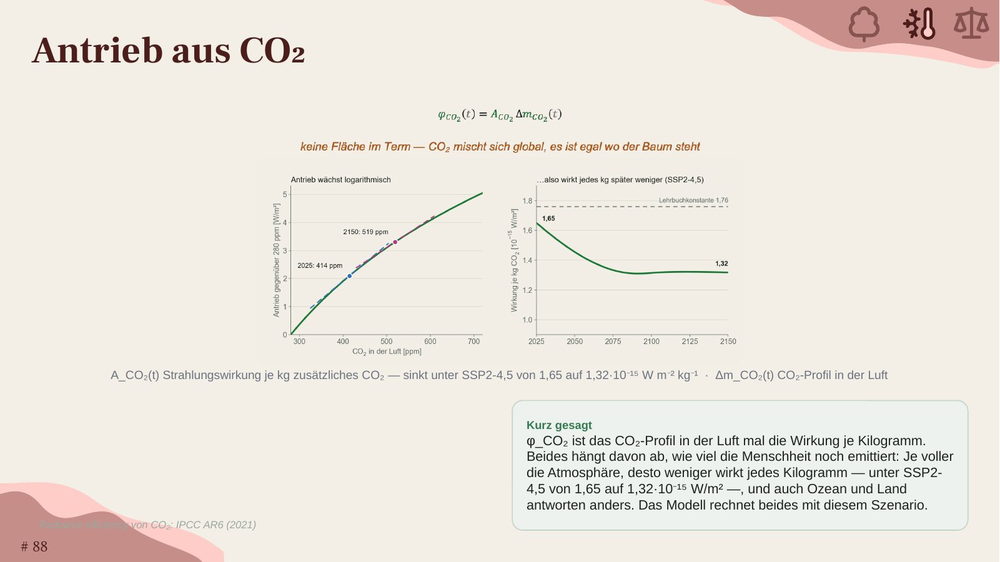
[v2] Aus dem Hauptteil genommen (Storyline v2), hierher verschoben, nicht gelöscht.
[v2] In PowerPoint die Gleichung zeitabhängig lesen: φ_CO₂(t) = ε_CO₂(t) · Δm_CO₂(t). Die alte Konstante 1,76·10⁻¹⁵ ist durch die abnehmende Wirkung der vorigen Folie ersetzt.
Zur Wirkung je kg: Der Antrieb wächst logarithmisch, φ = 5,35·ln(C/C₀); jedes weitere Kilogramm wirkt also umso weniger, je mehr schon in der Luft ist (Backup: „Wie stark wirkt jedes Kilogramm?“, „Warum CO₂ wärmt“). Zur Antwort von Ozean und Land: Ab hier rechnet das Modell mit FaIR unter SSP2-4,5 statt mit der vorindustriellen Kurve; von einem Impuls 2025 sind 2100 noch 42 % in der Luft statt 44 % — der größere Effekt ist die Wirkung je kg.
Jetzt bauen wir φ für unseren Baum — und die Folie enthält die wichtigste Unterscheidung des ganzen Vortrags.
Erste Zeile, das CO₂: Wie viel Strahlungswirkung hat ein Kilogramm CO₂? Diese Zahl heißt radiative efficiency. Damit wird aus der CO₂-Lücke direkt ein Antrieb in Watt pro Quadratmeter. Und jetzt schauen Sie genau hin: In dieser Zeile steht keine Fläche. CO₂ mischt sich global — es ist völlig egal, wo der Baum steht.
Zweite Zeile, die Albedo: Hier steht eine Fläche. Genauer, ein Flächenverhältnis — die Standfläche des Baums geteilt durch die Erdoberfläche. Denn was auf fünf Quadratmetern passiert, zählt für den Planeten nur mit dem Anteil, den diese fünf Quadratmeter an der Erdoberfläche haben. Das ist ein winziger Faktor. Der lokale Effekt war siebzig Watt; global bleibt davon fast nichts — aber es sind eben auch viele Bäume.
Die spitze Klammer noch einmal: Wir mitteln das Produkt über den Jahresgang, nicht die einzelnen Faktoren. Albedo-Kontrast und Einstrahlung schwanken gegenläufig; wer Jahresmittel multipliziert, unterschätzt den Effekt in hohen Breiten deutlich.
Dritte Zeile: Beides addiert sich zu genau dem φ, das in der Energiebilanz steht. Der CO₂-Term kühlt, der Albedo-Term wärmt. Wie das Rennen ausgeht, entscheidet der Standort — und genau das rechnen wir gleich aus.
Falls Fragen kommen — Vorzeichen: Δα ist negativ (dunkler), damit wird φ_α positiv — wärmend. Δm_CO₂ ist negativ (Lücke), damit wird φ_CO₂ negativ — kühlend.
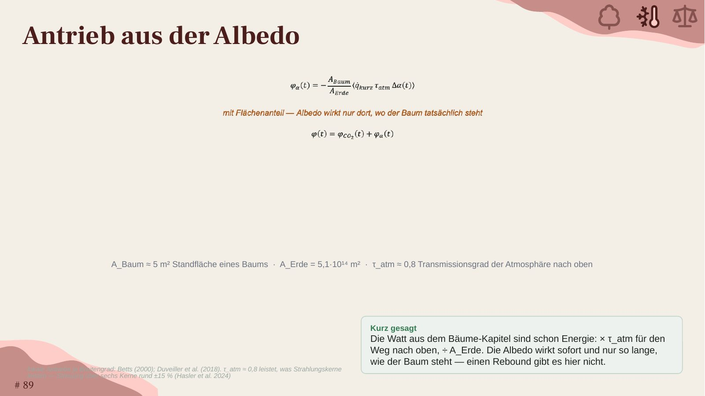
[v2] Aus dem Hauptteil genommen (Storyline v2), hierher verschoben, nicht gelöscht.
[v2] In PowerPoint die Zeile φ = φ_CO₂ + φ_α entfernen — die Summe kommt erst, wenn CO₂ hergeleitet ist. Gleichung als φ_α(t) = τ_atm · ΔQ̇_Baum(t) / A_Erde lesen (ΔQ̇_Baum aus B8).
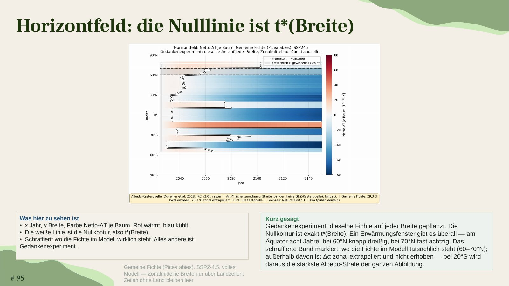
Der Zonalmittelwert je Breite laeuft nur ueber Landzellen. Eine frueherere Fassung mittelte ueber ganze Zeilen, also rund 80 Prozent Ozean, wo die Fuellung trotzdem einen Wert liefert — das zog eine Nullkontur durch den Suedozean.
Ausserhalb des schraffierten Bandes ist Delta_alpha zonal extrapoliert, nicht erhoben. Bei 20 Grad Sued entsteht daraus die staerkste Albedo-Strafe der ganzen Abbildung: hohe subtropische Einstrahlung mal extrapolierter Albedokontrast.
Die Abbildung ist ein Gedankenexperiment und keine Empfehlung. Wer sie als Karte liest, liest sie falsch.
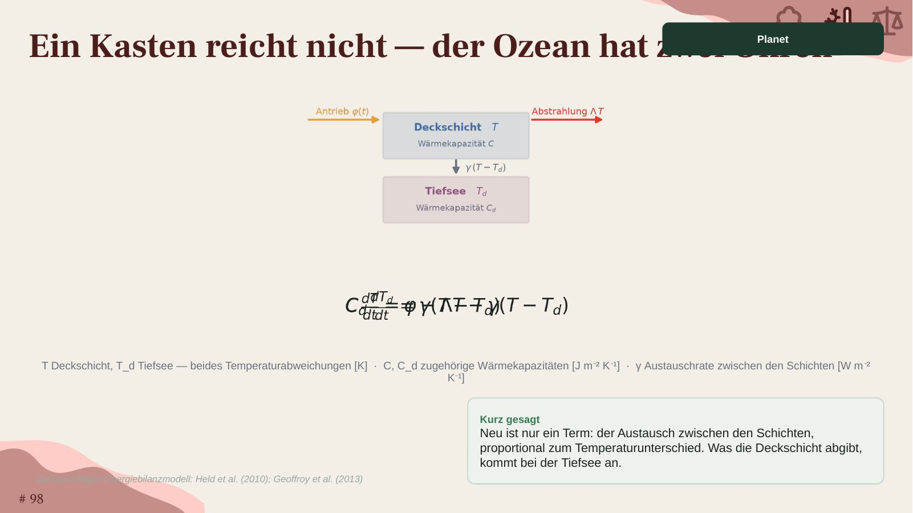
Ein einzelner Kasten reagiert zu schnell. In Wirklichkeit verschwindet ein Teil der Wärme erst nach unten, in die Tiefsee — und kommt über Jahrzehnte bis Jahrhunderte zurück.
Also bekommt die Deckschicht einen zweiten Kasten darunter. Und beachten Sie: Neu ist nur ein einziger Term, der Austausch zwischen beiden, proportional zum Temperaturunterschied. Was die Deckschicht abgibt, kommt bei der Tiefsee an — derselbe Term in beiden Zeilen, einmal mit Minus, einmal mit Plus.
Das ist übrigens nichts anderes als dieselbe Bilanz noch einmal, jetzt auf ein kleineres Kontrollvolumen angewendet, mit einer neuen inneren Grenze. Und der Austauschterm ist ein diskretisiertes Fouriersches Gesetz — der vertikale Wärmetransport im Ozean ist ein Diffusionsprozess. γ ist also kein willkürlicher Fitparameter, sondern ein thermischer Leitwert.
Falls Fragen kommen — γ·(T − T_d) ist ein Newtonsches Austauschgesetz — wie zwischen zwei unterschiedlich warmen Wasserbecken.
1000 Realisationen, Bernoulli je Zeitschritt mit p(t) = p0 exp(gamma T), Schwere aus einer Beta-Verteilung. eps des verlorenen Kohlenstoffs verbrennt sofort, der Rest zerfaellt mit tau.
Dass der Median praktisch auf der stoerungsfreien Kurve liegt, ist erklaerbar: die Verteilung ist rechtsschief, der Median liegt unter dem Mittelwert der Verluste.
Die Stoerung wirkt auf beide Kanaele: weniger Vorrat heisst weniger Kohlenstoff, aber auch weniger Kronenschluss und damit weniger Albedo-Strafe. In der Boreale koennen sich die beiden teilweise aufheben.
Die Leiter ist kumulativ, nicht one-at-a-time: jede Sprosse ist die vorige plus einen Effekt. Eine OAT-Zerlegung steht in nbs.variants.run_variants.
Die Senkensaettigung verstaerkt die Kuehlung, weil die Luecke einer Entnahme sich langsamer wieder auffuellt, wenn die Senken schon gesaettigt sind. Das ist der kontraintuitive Punkt der Folie und der haeufigste Rueckfrageanlass.
Die steigende Hintergrundkonzentration kostet 22 Jahre. In der Aufforstungsliteratur wird meist mit fester Strahlungswirkung gerechnet; dieser Term fehlt dort.
Die Prozentzahlen im Titel werden neu gerechnet, nicht eingetragen — bei einem anderen Szenario stehen andere Zahlen da.
2050 ist gewaehlt, weil die Aufteilung dort am ausgeglichensten ist. 2125 waere fast einfarbig und wuerde die Aussage der Folie unterlaufen, obwohl beide Karten dasselbe Modell zeigen.
Die drei Stufen sind bewusst getrennt. Keine widerlegt die andere.
Zahlen im Detail: Landmaske 52 688 von 259 200 Halbgradzellen — das sind 20,3 % der Zellen, aber 23,6 % der Flaeche, weil Zellen zu den Polen hin kleiner werden. Beide Zahlen stehen in nbs.landscape.land_mask_fractions, damit keine als die andere zitiert wird.
Drei-Stufen-Fuellung: lokales Retrieval, sonst zonaler Median derselben Art im selben Breitenband, sonst Breitentabelle. Bei vier der fuenf Arten ist die zonale Extrapolation die Mehrheit der Flaeche. Das Backup zeigt die Aufteilung je Art.
Das Konfetti hat innerhalb einer Zeile keine Ortsbedeutung — nur die Anzahl je Kategorie traegt Information. Wer eine echte Landbedeckungskarte will: das ist der erste Punkt auf der Grenzen-Folie.
Bisher haben wir die Bilanz über ein Zeitintervall aufgestellt: In einem Jahr kommt so viel dazu, so viel geht weg.
Falls Fragen kommen — Einheiten je Baum: m in kg C, alle Raten in kg C pro Jahr, t in Jahren.
Jetzt zur Störung – und die ist der Grund, warum ein Wald kein sicherer Speicher ist.
Falls Fragen kommen — p₀ = 0,5 %/a tropisch, 1,0 %/a boreal, 0,3 %/a Kurzumtrieb. Im Modell steigt die Rate bis Jahrhundertende linear um 50 %, weil Feuer, Dürre und Käfer mit der Erwärmung häufiger werden. Annahme, keine Prognose.
Eine ehrliche Zwischenfrage: Wie soll man GPP, Atmung, Zersetzung und Störung einzeln bestimmen? Für jeden Standort, über hundert Jahre? Das ist aussichtslos.
Falls Fragen kommen — Chapman-Richards-Funktion, in der Forstwissenschaft Standard für Ertragskurven.
Jetzt wechseln wir die Perspektive: weg vom Baum, hin zur Atmosphäre. Was der Baum einlagert, fehlt oben in der Luft.
Falls Fragen kommen — Einheiten: ṁ_CO₂,Baum in kg CO₂ pro Jahr und Baum, NBP in kg C pro Jahr und Baum. Der Faktor 44/12 ≈ 3,67 ist das Molmassenverhältnis.
Eine entnommene Tonne bleibt nicht einfach draußen. Ozean und Landbiosphäre reagieren und füllen die Lücke zum Teil wieder auf.
Falls Fragen kommen — In der Literatur heißt g_C meist IRF, impulse response function. Parameter nach Joos et al. 2013: a₀ = 0,217, drei Anteile mit τ ≈ 4, 37 und 394 Jahren. Dimensionslos.
Ein Baum nimmt nicht einmalig auf, sondern jedes Jahr ein bisschen. Jede Aufnahme hat ihre eigene Uhr laufen.
Falls Fragen kommen — t ist der Zeitpunkt, an dem wir hinschauen; t′ läuft über alle früheren Zeitpunkte.
Kurz sortieren. Drei Schritte, die aufeinander aufbauen – bisher alles für einen einzelnen Baum.
Falls Fragen kommen — Alle drei Schritte sind Bilanzen bzw. lineare Operationen – deshalb lassen sie sich sauber hintereinanderschalten und auch skalieren.
Zum Begriff, weil er oft durcheinandergeht: Evapotranspiration ist die Summe aus zwei Dingen. Evaporation ist die rein physikalische Verdunstung – vom Boden, von nassen Nadeln. Transpiration ist der aktive Teil: Der Baum zieht Wasser über die Wurzeln und gibt es über die Spaltöffnungen der Blätter ab. Beim Wald ist die Transpiration der größere Anteil.
Falls Fragen kommen — R_n Netto-Strahlung [W/m²], H fühlbarer Wärmestrom [W/m²], LE latenter Wärmestrom [W/m²], G Bodenwärmestrom [W/m²].
Wichtig zum Verständnis: Der Albedo-Effekt beginnt sofort, nicht erst beim Kronenschluss. Er zählt nur anteilig – ein Baum verdunkelt genau so viel, wie seine Krone überschirmt.
Falls Fragen kommen — α ist der reflektierte Anteil der Sonnenstrahlung [–]. f ist der Bedeckungsgrad zwischen 0 und 1: wie weit die Krone geschlossen ist.
Damit haben wir drei Wirkungen beisammen – alle zeitabhängig, alle noch ohne Zahlen.
Falls Fragen kommen — Ein wichtiger Unterschied in der Reichweite, der gleich noch relevant wird: Der Kohlenstoffeffekt wirkt global, egal wo der Baum steht. Albedo und Evapotranspiration wirken zunächst nur dort, wo er steht.
Als Ingenieur fängt man nicht beim Klima an, sondern ganz allgemein: mit dem ersten Hauptsatz für ein offenes System.
Falls Fragen kommen — Formelzeichen: U innere Energie [J], E_a äußere Energie [J], τ Zeit [s], ṁ_i Massenstrom [kg/s], h_i spezifische Enthalpie [J/kg], e_a,i spezifische äußere Energie [J/kg], Q̇_j Wärmestrom [W], Ẇ_k Leistung [W].
Achtung, Ebenenwechsel: Ab hier reden wir nicht mehr über den Wald, sondern über den ganzen Planeten. Die Bilanzgrenze liegt außen um Erde und Atmosphäre.
Falls Fragen kommen — Q̇_sw ist die absorbierte kurzwellige Sonnenstrahlung, Q̇_lw die abgestrahlte langwellige – in der Klimaliteratur ASR und OLR. Beide in W/m², alles pro Quadratmeter Erdoberfläche. U dann in J/m².
Die Abstrahlung hängt nichtlinear von der Temperatur ab – im Kern Stefan-Boltzmann mit T hoch vier, dazu Rückkopplungen.
Falls Fragen kommen — Λ ≈ 1,3 W/m²K nach Sherwood et al. 2020. T₀ ist die Temperatur im Ausgangszustand.
Jetzt setzen wir beides ein – die linearisierte Abstrahlung und die zerlegte Einstrahlung.
Falls Fragen kommen — φ in W/m², T in K, U in J/m². φ heißt in der Literatur radiative forcing.
Links steht noch die Energie, wissen wollen wir die Temperatur. Die Brücke ist die Wärmekapazität.
Falls Fragen kommen — C in J/m²K. Physikalisch dominiert die durchmischte Ozean-Deckschicht, 50–100 m tief.
Die Struktur der Klimaseite ist fertig: ein Kasten, eine Rückkopplung, ein Antrieb.
Falls Fragen kommen — Das klassische Ein-Box-Energiebilanzmodell, wie seit Budyko und Sellers in den 1960ern benutzt.
Erster Beitrag zum Antrieb: das CO₂. Wie viel Strahlungswirkung hat ein Kilogramm CO₂?
Falls Fragen kommen — ε_CO₂ ist das IPCC-Symbol für die radiative efficiency. Δm_CO₂ in kg CO₂, φ in W/m².
Beim CO₂ war die Fläche egal – es mischt sich global. Bei den beiden anderen Effekten ist sie es nicht: Sie wirken genau dort, wo der Baum steht.
Falls Fragen kommen — A_Baum ist die mittlere Standfläche je Baum, also der Kehrwert der Pflanzdichte. Fünf Quadratmeter entsprechen etwa 2000 Bäumen pro Hektar – eine typische Aufforstungsdichte.
Albedo und Verdunstung wirken beide nur auf der Standfläche des Baums. Für den Planeten zählen sie deshalb nur mit dem Anteil, den diese Fläche an der Erdoberfläche hat – dieselbe Umrechnung für beide.
Falls Fragen kommen — Q̇_sw,0 kurzwellige Einstrahlung an der Oberfläche [W/m²], τ_atm Transmissionsgrad nach oben [–], etwa 0,75–0,85. A_Erde = 5,1·10¹⁴ m², A_Baum ≈ 5 m².
Alle drei Beiträge addieren sich zu genau dem φ, das in der Energiebilanz steht.
Falls Fragen kommen — Dass man addieren darf, ist eine Annahme – gültig, solange die Störungen klein sind und sich nicht gegenseitig beeinflussen.
Ein einzelner Kasten reagiert zu schnell. In Wirklichkeit verschwindet ein Teil der Wärme erst nach unten, in die Tiefsee – und kommt über Jahrzehnte bis Jahrhunderte zurück.
Falls Fragen kommen — T und T_d Temperaturabweichungen [K], C und C_d Wärmekapazitäten [J/m²K], γ Austauschrate [W/m²K].
Zwei gekoppelte lineare Gleichungen – dafür gibt es eine geschlossene Lösung. Die Eigenwerte der Systemmatrix liefern zwei Zeitkonstanten.
Falls Fragen kommen — Formal: d/dt(T, T_d) = A·(T, T_d) + (φ/C, 0). det(A − d·I) = 0 liefert d₁ und d₂; q₁, q₂ folgen aus den Eigenvektoren.
Weil das System linear ist, dürfen wir alle Antriebe der Vergangenheit aufaddieren – dieselbe Konstruktion wie beim CO₂, nur mit g_T statt g_C.
Falls Fragen kommen — Vorausgesetzt: Die Antriebe addieren sich linear, und g_T bleibt über die Zeit dasselbe.
Dieselbe Rechnung in der Literatur: Bastin et al. (2019)
205 GtC
Bastin et al. 2019 · auf 0,9 Gha
→ 81 GtC
korrigiert binnen Monaten
Bastin et al. 2019 in Science: 0,9 Gha zusätzliche Waldfläche, 205 GtC zusätzlicher Speicher.
Eines der meistdiskutierten Klimapapiere überhaupt — und die wissenschaftliche Grundlage der Kampagne „eine Billion Bäume“.
Binnen Monaten korrigierte die Fachwelt den Wert auf rund 81 GtC. Weitere Kritik wurde als Kriterienkatalog formuliert.
Die Überschlagsrechnung ist publiziert, vielfach zitiert und politisch wirksam geworden. Wir korrigieren deshalb nicht ihr Ergebnis, sondern ihre Bilanzgrenze.
Bastin et al. 2019, Science 365, 76 (Modellergebnis: aus Satelliten-Stichproben der Baumbedeckung hochgerechnet); Korrektur: Kommentare von Veldman et al. und Friedlingstein et al. 2019, Science 366.
Einfluss des Pflanzjahres Eigene Rechnung, volles Modell: typischer Wald je Zelle auf den 0,39 Gha, in jedem Pflanzjahr dieselbe Fläche; Störung steigt mit der Erwärmung (Grünig et al. 2026); FaIR (Leach et al. 2021), SSP2-4,5; je Baum gerechnet und über die Bäume summiert. Höhepunkt der Erwärmung im niedrigsten Szenario: 2049 (Folie 2).
Im Kapitel Klima haben wir gesehen: Ein später gepflanzter Baum kühlt bis 2100 weniger, weil ihm Zeit fehlt und die Welt, in die er wächst, wärmer ist. Hier dasselbe für alle Bäume auf der kühlenden Fläche. Hellgrün die Kühlung im Jahr 2100: Ob 2026 oder 2046 gepflanzt — fast gleich; der jüngere Wald bindet bis dahin noch kräftig, und seine Albedo ist noch nicht voll da. Dunkelgrün die Kühlung um 2050, wenn die Erwärmung im niedrigsten Szenario ihren Höhepunkt hat. Da zählt nur, was bis dahin gewachsen ist: fünf Jahre Warten kosten knapp ein Viertel, zehn Jahre die Hälfte. Wer die Spitze der Erwärmung drücken will, muss jetzt pflanzen.
Falls Fragen kommen — Kühlung 2050 relativ zur Pflanzung 2026: 2031 77 %, 2036 51 %, 2041 25 %, 2046 6 %. Kühlung 2100: 101 % bis 101 % (der jüngere Wald hat 2100 weniger Albedo-Strafe und wächst noch). Je Baum gerechnet und aufsummiert (linear); absolut kühlt die Pflanzung 2026 so 2050 um 14,4 mK, fast wie im FaIR-Lauf mit der ganzen Fläche (13,8 mK). Die Störung steigt mit der Erwärmung, ein später gepflanzter Wald lebt in einer wärmeren Welt. Spätere Pflanzjahre als 2046 im Kapitel Klima je Baum.
Entnahme-Bedarf der Szenarien und was die Bäume liefern Entnahme und Emissionen: CMIP7-Markerszenarien (van Vuuren et al. 2026), Summe 2024–2100, wie Folie 3. Bäume: eigene Rechnung, typischer Wald, gepflanzt 2026, gleiche Flächen in allen Szenarien; netto = brutto × Netto-Anteil aus FaIR (Leach et al. 2021; Smith et al. 2024), angetrieben mit den Emissionen desselben Szenarios.
Jetzt die Frage vom Anfang: Braucht es die Maschine überhaupt? Hier die sieben Szenarien von Folie 3, sortiert danach, wie warm es 2100 wird — links optimistisch, rechts pessimistisch. Jede Welt ist in sich stimmig: Dieselben Emissionen treiben FaIR an, und die Entnahme ist die, mit der genau dieses Szenario rechnet. Links in jeder Gruppe die Entnahme des Szenarios: hellgrün an Land, also mehr Wald und weniger Abholzung, türkis neuartig, also BECCS und Maschinen. Rechts daneben unsere Bäume in derselben Welt: schraffiert, was im Holz steckt, ausgefüllt, was nach Albedo netto wirkt, orange überall gepflanzt. In wärmeren Welten wirkt jede Tonne etwas schwächer und Störungen nehmen zu: 66 Gigatonnen in Very Low, 60 in High. Die Szenarien, die niedrig bleiben, setzen ein Vielfaches davon voraus — oft schon allein an Land. Die Szenarien ohne Entnahme landen bei 3 Grad. Bäume reichen also nicht; es braucht auch Maschinen.
Falls Fragen kommen — Netto = brutto (Kaskade, 102 Gt auf den kühlenden, 155 Gt auf allen Flächen) × Netto-Anteil aus zwei FaIR-Läufen je Szenario (mit und ohne Albedo), unser FaIR-Mitglied mit den CMIP7-Emissionen aus dem Archiv des ScenarioMIP-Papiers. Die Szenarien enthalten Landnutzung und Entnahme schon als Annahme; wir rechnen nur zurück, was unsere Bäume in dieser Welt leisten. Der Landanteil umfasst mehr als Aufforstung (weniger Abholzung, Böden). Unser Mitglied: Very Low 1,7 °C, High 3,3 °C im Jahr 2100 (Ensemble-Median des Papiers 1,6 und 3,45 °C). Die übrigen Folien rechnen mit SSP2-4,5 als mittlerem Hintergrund; dort netto 59 Gt. Bastin et al. 2019 (Folie 5): 205 GtC, also rund 750 Gt CO₂.
100 % 30 % 100 % 70 % Absorbierter Anteil BAUM reflektiert 30 %, absorbiert 70 % WIESE ODER ACKER reflektiert 70 %, absorbiert 30 % Wald: +40 Prozentpunkte Mit wachsendem Kronenschluss bedeckt der Baum mehr Boden und absorbiert mehr Strahlung.
Schema mit gerundeten Beispielwerten, keine Daten.
Der Baum wächst — und je größer er wird, desto mehr Boden verdeckt er. Das ändert, wie viel Sonnenlicht reflektiert wird. Hellerer Boden (Schnee) und mehr Sonne sind genau die zwei Ortsgrößen, die gleich die Karte färben.
Eigene Rechnung: Wachstumskurve mit Kohlenstoff der Zelle (Walker et al. 2022) und Tempo (Cook-Patton et al. 2020); Störung: Annahme, heutige Rate.
Ausführlich: Die Linie zeigt, wie viel CO₂ ein Baum in jedem Jahr aufnimmt: Sie steigt in der Jugendphase, erreicht um 2041 ihr Maximum und nimmt bis zur Sättigung ab. Mit der Bilanzgrenze um den Baum gilt: Was der Baum aufnimmt, wird der Atmosphäre entzogen. Die Menge hängt vom Ort ab: Der Mischwald in Aachen (DE) nimmt 1,5-mal so viel auf wie der in Joensuu (FI), der Regenwald bei Marabá (BR) 1,4-mal so viel wie Aachen (DE).
Jeder Jahreszuwachs ist eine kleine negative Emission — Kohlenstoff mal 44/12, Vorzeichen gedreht. Jeder Punkt der Linie ist ein Jahr; die Fläche darunter ist, was der Baum insgesamt aufnimmt. Aufsummiert holt ein Baum, 2026 gepflanzt, bis 2100 in Aachen rund 163 kg CO₂ aus der Luft, bei Marabá (südöstlicher Amazonas) rund 232 kg, in Joensuu (Ostfinnland) rund 111 kg: kürzere Vegetationsperiode, kälter, weniger Licht — der Wald dort trägt weniger Biomasse. Methode: docs/methods/waldtypen.md.
Strahlungsantrieb von CO₂
$\cq{\varphi_{\mathrm{CO_2}}}(t) =$ Stärke des Antriebs $\cq{\varepsilon_{\mathrm{CO_2}}}(t)$ × verbleibende CO₂-Menge
$$\begin{aligned}\varphi(c) &= \pc{5{,}35}\,\tfrac{\mathrm{W}}{\mathrm{m^2}}\,\ln\frac{c}{\pc{c_0}}\\ \cq{\varepsilon_{\mathrm{CO_2}}}(t) &= \frac{\partial\varphi}{\partial m} = \frac{\pc{5{,}35}\,\mathrm{W/m^2}}{\pc{k}\,c(t)}\\ \cq{\varphi_{\mathrm{CO_2}}}(t) &= \cq{\varepsilon_{\mathrm{CO_2}}}(t)\,\cq{\Delta m_{\mathrm{CO_2}}}(t)\end{aligned}$$
$\varphi(c)$ Antrieb des gesamten CO₂ gegenüber vorindustriell [W/m²] $c,\ \pc{c_0}$ CO₂-Konzentration im Szenario [ppm]; vorindustriell 278 ppm $m,\ \pc{k}$ CO₂-Masse der Atmosphäre, m = k · c; k = 7,82 · 10¹² kg je ppm $\cq{\varepsilon_{\mathrm{CO_2}}}$ Strahlungseffizienz [W/m² je kg] — 1,64 → 1,31 · 10⁻¹⁵ (2026 → 2100) $\cq{\Delta m_{\mathrm{CO_2}}}$ CO₂-Änderung der Atmosphäre durch den Baum (nächste Folien) $\cq{\varphi_{\mathrm{CO_2}}}$ CO₂-Antrieb des Baums [W/m²], < 0: kühlt
Antrieb: Myhre et al. 1998 (aus Strahlungstransfer-Modellen), c₀ = 278 ppm; k = 7,82 · 10¹² kg CO₂ je ppm; CO₂-Konzentration im Szenario SSP2-4.5: Modellergebnis FaIR (Leach et al. 2021; Smith et al. 2024).
Ausführlich: CO₂ verringert die langwellige Abstrahlung der Erde; dieser Strahlungsantrieb wächst logarithmisch mit der Konzentration. Je mehr CO₂ bereits in der Atmosphäre ist, desto kleiner ist der Antrieb je zusätzlichem Kilogramm: im Szenario SSP2-4.5 1,64 · 10⁻¹⁵ W/m² im Jahr 2026, 1,31 · 10⁻¹⁵ W/m² im Jahr 2100. Mit der CO₂-Änderung aus der Impulsantwort ergibt das den Antrieb des Baums.
Oben der CO₂-Term von eben, unsere Basis für die nächsten Folien. Zuerst der erste Faktor, der Antrieb je Kilogramm ε_CO₂ — umrahmt.
Die erste Frage: Wie stark wärmt das CO₂, das in der Atmosphäre fehlt oder dazukommt? CO₂ absorbiert die Wärmestrahlung der Erde in bestimmten Wellenlängen. Mehr CO₂ heißt: Die Wärme wird aus größerer, kälterer Höhe abgestrahlt, also weniger davon — die Energiebilanz der Erde verschiebt sich. Diese Verschiebung in Watt je Quadratmeter Erdoberfläche heißt Strahlungsantrieb. Links: Für das gesamte CO₂ in der Luft wächst er logarithmisch mit der Konzentration — die Kurve wird flacher. Die Steigung ist der Antrieb je zusätzlichem Kilogramm; 2026 ist sie steiler als 2100, weil bis dahin mehr CO₂ in der Luft ist. Rechts diese Steigung über die Zeit: 1,64 heute, 1,31 im Jahr 2100, in 10⁻¹⁵ Watt je Quadratmeter und Kilogramm. Unten die drei Zeilen: Antrieb des gesamten CO₂, seine Ableitung je Kilogramm, und mal der CO₂-Änderung des Baums, die wir als Nächstes bestimmen — das ist der Antrieb, den der Baum über seinen Kohlenstoff erzeugt.
Falls Fragen kommen — Myhre et al. (1998): ΔF = 5,35 · ln(c/c₀) W/m², aus Strahlungstransfer-Rechnungen; für kleine Änderungen linearisiert, ε_CO₂ = 5,35 / (k · c). FaIR selbst nutzt eine genauere, zustandsabhängige Formel (Meinshausen et al. 2020); entlang SSP2-4.5 weicht der Koeffizient um höchstens 2,5 % ab. Der Lehrbuchwert 1,76 · 10⁻¹⁵ W/m² je kg (IPCC AR6) entspricht etwa 389 ppm. Spektrum und Höhe der Abstrahlung: Backup „Warum CO₂ wärmt“.
Impulsantwort auf die CO₂‑Aufnahme eines Baums
$\cq{\varphi_{\mathrm{CO_2}}}(t) =$ $\cq{\varepsilon_{\mathrm{CO_2}}}(t)$ × verbleibende CO₂-Menge $\cq{\Delta m_{\mathrm{CO_2}}}(t)$
$$\begin{aligned}\bq{\dot m_{\mathrm{CO_2}}}(t') &= -\tfrac{44}{12}\,\bq{\dot m}(t')\\ \cq{\Delta m_{\mathrm{CO_2}}}(t) &= \sum_{t' \le t} \rq{g_C}(t-t')\, \bq{\dot m_{\mathrm{CO_2}}}(t')\end{aligned}$$
$\bq{\dot m}$ Netto-Kohlenstoffaufnahme des Baums im Jahr t′ [kg C/a] $\bq{\dot m_{\mathrm{CO_2}}}$ CO₂-Fluss in die Atmosphäre [kg CO₂/a]; Aufnahme negativ $\rq{g_C}$ Impulsantwort der Vorfolie $\cq{\Delta m_{\mathrm{CO_2}}}$ CO₂-Änderung der Atmosphäre [kg] (Linien: −Δm)
Eigene Rechnung; Rückgabe an Ozean und Land: Modellergebnis, Impulsantwort als Mittel mehrerer Erdsystem- und Kohlenstoffkreislaufmodelle (Joos et al. 2013).
Ausführlich: Jede jährliche Aufnahme des Baums ist eine kleine Entnahme, die mit gC abklingt. Summiert über alle Jahre (Faltung) ist die Abnahme des atmosphärischen CO₂ 2100 gut halb so groß wie die aufgenommene Menge, in Aachen (DE) 84 von 163 kg. Um 2090 erreicht sie ihr Maximum: Danach nimmt der ausgewachsene Wald kaum noch auf, Ozean und Land geben weiter CO₂ ab — 2200 noch 68 von 177 kg.
Dieselbe Antwort, jetzt für den Baum. Der Baum entnimmt jedes Jahr ein bisschen; jede dieser kleinen Entnahmen klingt für sich nach der Kurve von eben ab. Die Balken zeigen, was der Baum bis dahin insgesamt aufgenommen hat, die Linien, um wie viel das CO₂ in der Atmosphäre dadurch abgenommen hat. Das ist die Formel unten: Aus dem Kohlenstoffzuwachs des Baums wird mit 44/12 ein CO₂-Fluss, negativ, weil er die Atmosphäre verlässt; jede Jahresaufnahme wird mit der Impulsantwort gewichtet, die bis heute vergangen ist, und alles summiert. 2100 ist das gut die Hälfte dessen, was der Baum aufgenommen hat. Ich zeige hier bewusst bis 2200, über unseren Bewertungshorizont hinaus: Um 2090 erreicht die Abnahme ihr Maximum. Danach wächst der Wald kaum noch, die Aufnahme geht gegen null, aber Ozean und Land geben weiter CO₂ zurück — die Linie sinkt, Richtung des dauerhaften Anteils von gut einem Fünftel.
Globale Temperaturwirkung aller Bäume über die Zeit Eigene Rechnung: typischer Wald je Zelle (Hasler et al. 2024), gepflanzt 2026, Kohlenstoff Walker et al. 2022, Albedo Duveiller et al. 2018; je Fläche ein Lauf des Klima-Emulators FaIR (Leach et al. 2021; Smith et al. 2024) mit der ganzen Entnahme als negativer Emission und der Albedo als Antrieb, SSP2-4,5; gestrichelt derselbe Lauf ohne Albedo.
Ausführlich: Dieselbe Rechnung wie je Baum, über alle Bäume summiert. Auf den kühlenden 0,39 Gha kühlen sie 2050 um 14 mK, 2100 um 19 mK. Der Albedo-Effekt wächst mit dem Kronenschluss: Der Netto-Anteil fällt von 86 % (2050) auf 58 % (2100). Auf allen 0,83 Gha kühlen die Bäume anfangs sogar stärker, ab 2061 schwächer, 2100 nur noch um 6,8 mK. Welche Fläche günstiger ist, hängt vom Bewertungszeitpunkt ab.
Jetzt nicht mehr ein Baum, sondern alle. Grün: alle Bäume auf den 0,39 Gigahektar, auf denen der Baum bis 2100 kühlt, rund 790 Milliarden Bäume. Je Baum sind es ein paar 10⁻¹⁴ Grad; mal 800 Milliarden ergibt das Tausendstel Grad, Millikelvin. Gestrichelt dieselben Bäume ohne Albedo — wie je Baum im Kapitel Klima. Der Abstand wächst mit der Zeit: Der Kohlenstoff wirkt früh, die Albedo kommt mit dem Kronenschluss. 2050 bleiben 86 % der Kühlung, 2100 nur noch 58 %. Orange: alle 0,83 Gigahektar. Bis um 2060 kühlen sie sogar stärker, weil im Norden der Wald zuerst Kohlenstoff bindet. Dann holt die Albedo auf, und 2100 bleibt nur ein Drittel davon. Wer nur auf 2050 schaut, würde überall pflanzen; wer auf 2100 schaut, nur auf der Hälfte. Das kann man nur sehen, wenn man Jahr für Jahr rechnet — eine statische Bilanz liefert eine einzige Zahl.
Falls Fragen kommen — Vier FaIR-Läufe (kühlende Flächen und alle Flächen, je mit und ohne Albedo), dieselben wie für die 59 Gt auf der nächsten Folie. Kühlend = der Baum des typischen Waldes kühlt in dieser Zelle bis 2100 netto. Werte: kühlende Flächen 2035 −3,2, 2050 −13,8, 2075 −20,0, 2100 −19,1 mK; ohne Albedo −3,3 / −16,1 / −29,4 / −33,0 mK; alle Flächen −4,5 / −16,4 / −14,5 / −6,8 mK. Nach 2100 rechnen wir nicht; der Vortrag bewertet 2100.
Millikelvin sind schwer einzuordnen. Die nächste Folie rechnet dieselben Bäume in Tonnen CO₂ um und stellt sie dem Bedarf der Szenarien gegenüber.
Beitrag der Aufforstung zum Entnahmebedarf über die Zeit
Bis 2050: 43 von 53 Gt. Bis 2100: 59 von 335 Gt. Lücke: 276 Gt.
Bedarf: CMIP7-Markerszenario Very Low, neuartige Entnahme und Landsenke, kumuliert ab 2024 (van Vuuren et al. 2026). Bäume: eigene Rechnung, typischer Wald auf den kühlenden Flächen (0,39 Gha); Zeitverlauf aus dem Baummodell, Niveau wie Folie „Wiederbewaldbare Fläche“; netto = brutto × Netto-Anteil (FaIR, SSP2-4.5).
Ausführlich: Bis 2050 entnehmen die Bäume auf den kühlenden Flächen netto 43 Gt CO₂; das Szenario Very Low setzt bis dahin 53 Gt voraus. Bis 2100 steigt der Bedarf auf 335 Gt, die Bäume liefern 59 Gt (18 %). Zehn Jahre später gepflanzt, sind es 2050 nur 25 Gt. Die Lücke von 276 Gt muss technische Entnahme schließen.
Was heißt das in Tonnen, gemessen an dem, was die Szenarien voraussetzen? Schwarz die Entnahme, mit der das Szenario Very Low rechnet, aufsummiert ab heute. Grün die Bäume auf den kühlenden Flächen, 2026 gepflanzt: gepunktet brutto, also das, was im Holz steckt, durchgezogen netto nach Albedo. Hellgrün dieselben Bäume, zehn Jahre später gepflanzt.
Bis 2050 decken die Bäume einen großen Teil dessen, was das Szenario bis dahin voraussetzt: 43 von 53 Gigatonnen. Danach steigt der Bedarf steil, die Bäume sind ausgewachsen und die Albedo holt auf: 2100 sind es 59 von 335 Gigatonnen. Wer zehn Jahre wartet, hat 2050 nur gut die Hälfte; bis 2100 holt der spätere Wald auf. Die graue Fläche, 276 Gigatonnen, muss also anders entnommen werden. Damit sind wir bei der Frage vom Anfang: Wie gut ist die technische Entnahme, je Tonne?
Falls Fragen kommen — Andere Szenarien (CMIP7, je mit eigenem FaIR-Hintergrund): Bäume netto 57 bis 63 Gt; in Medium-Low 22 % des Bedarfs bis 2100, Medium und High setzen keine Entnahme voraus (Backup „Beitrag der Aufforstung zum Entnahmebedarf“). Pflanzjahr: fünf Jahre später kosten 2050 knapp ein Viertel der Kühlung, zehn Jahre die Hälfte; 2100 fast nichts (Backup „Einfluss des Pflanzjahres“). Der Bedarf enthält die Landsenke der Szenarien, also auch dort schon angenommene Aufforstung; die Bäume hier sind ein Maß für das Potenzial, keine Addition.
Natürliche und technische CO₂-Entnahme
DIE NATUR
Der Baum
seit Jahrmillionen
durch Photosynthese
wächst von selbst
Gebläse
Strom
Verdichter
Dampf, 100 °C
Speicher im Gestein
INGENIEURE
DAC-Anlage
noch in Entwicklung
braucht Energie
muss gebaut werden
Wozu technische CO₂-Entnahme, wenn Bäume CO₂ binden?
CO₂ wieder aus der Luft holen — das kann die Natur seit Jahrmillionen. Ein Baum macht es von selbst, angetrieben vom Sonnenlicht; wir müssen nichts bauen. Und jetzt schlagen Ingenieure vor, Maschinen zu bauen, die dasselbe tun: Direct Air Capture. Gebläse drücken Luft durch einen Filter, Dampf um 100 Grad löst das CO₂ wieder ab, ein Verdichter presst es in den Untergrund. Das braucht Strom und Wärme, und jede Anlage muss erst gebaut werden. Da liegt die Frage nahe: Braucht es die Maschine überhaupt? Die erste Antwort ist eine naive Rechnung — mit Bäumen.
Falls Fragen kommen — Erste Anlagen im industriellen Maßstab laufen in Island (Climeworks Orca seit 2021, Mammoth seit 2024); das CO₂ wird dort im Basalt mineralisiert. In den CMIP7-Szenarien zählt DAC zur neuartigen Entnahme, zusammen mit BECCS, Gesteinsverwitterung und Ozean. Wie die Maschine genau arbeitet und wie wir sie rechnen: Kapitel Vergleich.
Netto-Entnahme von DAC in drei Strompfaden Eigene Rechnung wie „Netto-Entnahme von DAC“; Strommix und Hintergrund je Pfad: Modellergebnis REMIND-EU über premise 2.4.9 (Sacchi et al. 2022), ecoinvent 3.12: SSP2-PkBudg650 (Budget 650 Gt, etwa 1,5 °C), SSP2-NDC (heutige Zusagen, bisher), SSP2-NPi (nur umgesetzte Politik). Median über das Land, auf dem Sorbens-DAC möglich ist. Bäume: Netto-Anteil 2100 der kühlenden Flächen in den vier gezeigten CMIP7-Szenarien.
Ausführlich: Das Tempo der Dekarbonisierung verschiebt die Ergebnisse um einige Jahre, ändert sie aber qualitativ nicht: Mit dem Strom von 2026 bleiben im Median 40 bis 46 % der Tonne, 2040 schon 80 bis 93 %. Spätestens ab etwa 2035 bleibt bei DAC je Tonne netto mehr übrig als bei einem Baum auf kühlender Fläche.
Die Karte eben hing an einer Annahme: wie schnell der Strom sauber wird. Hier dieselbe Rechnung mit drei Pfaden des Energiesystemmodells REMIND. Dunkel: ein Pfad, der zu 1,5 Grad passt. Mittel: heutige Zusagen, unser bisheriger Fall. Hell: nur die Politik, die schon umgesetzt ist. Jede Linie ist der Median über das Land, auf dem die Maschine laufen kann. Heute liegen alle drei zwischen 40 und 46 %. Mit sauberem Strom steigen alle — im pessimistischen Pfad nur einige Jahre später: 2040 80 statt gut 90 %. Das grüne Band ist der Netto-Anteil der Bäume auf den kühlenden Flächen, in den vier Szenarien vom Anfang. Spätestens um 2035 liegt die Maschine je Tonne darüber, in jedem Pfad.
Falls Fragen kommen — Median Netto-Anteil 2026 / 2030 / 2040 / 2050: PkBudg650 44 / 62 / 93 / 96 %, NDC 46 / 65 / 91 / 94 %, NPi 40 / 55 / 80 / 89 %. Netto emittierend mit dem Strom von 2026: 2 / 2 / 3 % des Landes. Dass der 1,5-°C-Pfad 2026 knapp unter dem mittleren liegt, kommt aus dem Stützjahr 2030 (in einigen Regionen mischt REMIND-EU dort etwas anders); 2020 ist für alle Pfade dieselbe Datenbank. Auch NPi macht den Strom in Europa bis 2050 weitgehend sauber; der Unterschied liegt vor allem in Asien in den 2030er und 2040er Jahren (Indien 2040: 0,26 gegen 0,02 kg CO₂e/kWh). Zuordnung zu den CMIP7-Welten nur grob: PkBudg650 ≈ Very Low, NDC ≈ Medium-Low, NPi ≈ Medium. Neue Datenbanken: scripts/build_premise_scenarios.py, Ökobilanz: scripts/dac_lca_precompute.py --pathway.
Damit haben wir für Baum und DAC dieselbe Größe, je Ort und Jahr. Daraus folgt eine Priorisierung.
Priorisierung von Aufforstung und DAC nach Ort und Zeit
BAUM
DIRECT AIR CAPTURE
ZUERST
NICHT
Kühlende Flächen, frühe Pflanzung
Tropen, wenig Schnee → netto: Marabá (BR) 82 %,
Aachen (DE) 63 %, Joensuu (FI) 28 %
Früh: 5 Jahre später → 2050 knapp ¼ weniger Kühlung
0,39 Gha · netto 59 Gt CO₂
Wo die Albedo überwiegt
Schneereicher Norden, Trockengebiete
→ der Baum wärmt bis 2100
→ auf allen Flächen nur 22 statt 59 Gt CO₂
0,43 Gha wärmen bis 2100
Emissionsarmer Strom
Heute z. B. Joensuu (FI): 86 % netto
→ mit der Energiewende fast überall:
2040 im Median 91 % netto
Median 2026: 46 % · 2040: 91 %
Mit fossilem Strom, im hohen Norden
Strom von 2026: Krakau (PL) 17 %,
Kinshasa (CD) 23 %, Peking (CN) 24 % netto.
→ im Norden zu kalt für Sorbens-DAC
20 % des Landes zu kalt
Zusätzlich hat Wald lokale Wirkungen, die DAC nicht hat: Beschattung, Verdunstung, Windschutz, Lebensraum.
Keines von beiden ersetzt die Minderung der Emissionen: Die Szenarien setzen sie voraus.
Eigene Rechnung; Zahlen von den Folien „Temperaturwirkung eines Baums je Ort“, „Beitrag der Aufforstung zum Entnahmebedarf“ und „Netto-Entnahme von DAC“; Zeitverlauf: Wachstumskurve je Ort (Walker et al. 2022; Cook-Patton et al. 2020). Baum: typischer Wald, gepflanzt 2026, Horizont 2100. DAC: Strommix REMIND-EU SSP2-NDC.
Ausführlich: Beide Rangfolgen folgen aus derselben Größe: dem Anteil einer entnommenen Tonne, der je Ort und Jahr netto bleibt. Beim Baum begrenzt die Albedo, bei DAC die Emissionsintensität des Stroms.
Was heißt das konkret? Links der Baum, rechts die Maschine; oben, wo zuerst, unten, wo nicht. Der Baum zuerst dort, wo er am stärksten kühlt — in den Tropen. Und früh: Fünf Jahre Warten kosten um 2050 knapp ein Viertel der Kühlung; DAC dagegen entnimmt ab dem ersten Betriebsjahr. Nicht dort, wo die Albedo überwiegt: im schneereichen Norden und in Trockengebieten. Die Maschine zuerst dort, wo der Strom sauber ist — heute etwa in Finnland, mit der Energiewende fast überall. Nicht mit Kohlestrom, dann emittiert sie fast so viel, wie sie entnimmt, und nicht im hohen Norden, da ist es für das Verfahren zu kalt. Unten: Der Wald bringt vor Ort mehr als Kohlenstoff — Schatten, Verdunstung, Windschutz, Lebensraum. Für das globale Klima zählt das kaum, deshalb steht es nicht in der Bilanz; für die Menschen vor Ort zählt es. Und keines von beiden ersetzt es, die Emissionen zu senken.
Falls Fragen kommen — Und wo beides geht: Wer entnimmt je Tonne sauberer? Mit dem Strom von 2020 die Maschine nur auf 22 % der bepflanzbaren Fläche; wo beides geht, überholt sie den Baum mit der Energiewende im Mittel 2031. Das steht im Backup („Die Maschine wird zur Messlatte“, „DAC fährt mit der Energiewende mit“). Es ist aber nicht die entscheidende Frage: Die Maschine braucht kaum Fläche, man kann am selben Ort beides tun, und gebraucht wird beides. Die Grenze ist für den Baum die kühlende Fläche, für die Maschine sauberer Strom und Geld: rund 1 500 TWh je Gt CO₂ im Jahr, etwa 5 % der heutigen Weltstromerzeugung. Kosten rechnet das Modell nicht. Die Zahlen 59 und 22 Gt sind netto nach Albedo bis 2100; 0,43 Gha = wiederbewaldbare Fläche, auf der der Baum bis 2100 wärmt.
Gebraucht Baum DAC Erst damit sichtbar
Systemgrenze bis zur Temperatur Wachstum, Albedo, Ozean und Land, steigende CO₂-Konzentration, Störung Strom, Anlage, Sorbens, Speicherung (Ökobilanz) Netto-Anteil je Ort: Aachen 63 %, Joensuu 28 % Je Ort und je Jahr 0,5°-Zellen: Waldtyp, Kohlenstoff, gemessene Albedo mit Zeitverlauf Wetter am Ort; Strommix je Region und Jahr (REMIND-EU über premise) Rangfolgen statt eines Mittelwerts Ein kalibrierter Klima-Emulator, ein Horizont FaIR: Entnahme als negative Emission, Albedo als Antrieb Entnahme je Jahr Zeitverlauf statt einer Zahl Ausbau optimieren — Lineares Programm: Speicher je Land (Gidden 2025), Wachstum ≤ 20 %/a nötige Kapazität je Zieljahr
NICHT IM MODELL Kosten · Verdunstung und Wolken als eigene Klimawirkung · dynamische Schneedecke · Flüssig-DAC · Zusatzstrom statt Netzmittel · Injektionsraten je Becken · ein Klimamitglied statt Ensemble
Neu: eine zeitaufgelöste Rechnung je Ort für Baum und DAC, mit kalibriertem Klima-Emulator und Ausbau-Optimierung.
Ausführlich: Die einzelnen Bausteine gibt es in der Literatur. Neu ist ihre Kombination: dieselbe zeitaufgelöste Rechnung je Ort für Aufforstung und DAC, mit einem kalibrierten Klima-Emulator statt fester Umrechnungsfaktoren.
Was hat es gebraucht, um diese Fragen zu beantworten? Drei Dinge. Erstens die Systemgrenze bis zur Temperatur: Erst mit Ozean, Land, vollerer Atmosphäre und Störung sieht man, wie viel die Albedo vom Nutzen des Kohlenstoffs frisst — in Aachen ein Drittel, in Joensuu zwei Drittel — und dass der Baum auf der Hälfte der Fläche wärmt. Am Baum allein gerechnet, wie in der naiven Rechnung, käme Aachen auf −157 statt −34 · 10⁻¹⁵ K (Backup „Was jede Erweiterung der Systemgrenze kostet“). Zweitens je Ort und je Jahr rechnen: Nur so entstehen Rangfolgen — wo zuerst, wo nicht — statt eines globalen Mittelwerts. Drittens ein echtes Klimamodell statt fester Faktoren: Wir lassen den Klima-Emulator FaIR laufen, der auf Messungen und auf die großen Klimamodelle kalibriert ist. Er rechnet selbst, dass sich die Senken füllen, dass jedes Kilogramm bei mehr CO₂ schwächer wirkt und wie träge die Erde reagiert. Erst damit lassen sich Tempo und Wirkung von Baum und Maschine im selben Horizont vergleichen; GWP100 und statische Bilanzen sehen nur Endzustände. Viertens die Optimierung: Erst mit Speicher- und Wachstumsgrenzen sieht man, wie viel DAC wann nötig ist und dass der Speicher, nicht der Strom, die Orte bestimmt.
Falls Fragen kommen — Einordnung, ehrlich: Zeitaufgelöst rechnen auch andere — Kirschbaum et al. 2011 (ein Standort), Arora & Montenegro 2011, Weber et al. 2024 und Liang et al. 2025 (Erdsystem- bzw. dynamische Modelle, ganze Szenarien). Statisch und je Ort rechnen Hasler et al. 2024 und Rohatyn et al. 2022. Das Tempo der Albedo stammt aus Williams et al. 2026. Unseres Wissens neu ist die Kombination: je Ort und Jahr, vom Baum bis zur Temperatur, mit Szenario-Hintergrund und Störung, und derselbe Rahmen für DAC. FaIR: Version 2.2, Parametersatz fair-calibrate 1.4.1, ein Mitglied nahe dem Ensemble-Median (ECS 2,9 K), nach einer vorab festgelegten Regel gewählt (docs/methods/klimamodell-fair.md). Grenzen: keine Kosten; Strom als Netzmittel der Region; Schneedecke statisch (boreal eher zu streng); Klimanormal 2011–2020 für DAC; DAC-Emissionen mit GWP100 statt durch FaIR. Vergleich mit anderen Studien: Backup „Einordnung: andere Studien“.
Gesamter Strahlungsantrieb je Baum
Beide Terme zusammen $\htmlClass{fd}{\varphi(t) = \pc{\tau_{\mathrm{atm}}}}\;\;\htmlClass{hl hl-q}{\bq{\Delta\dot Q_{\mathrm{Baum}}}(t)}\;\;\htmlClass{fd}{/\,\pc{A_{\mathrm{Erde}}} + \cq{\varepsilon_{\mathrm{CO_2}}}(t)}\;\;\htmlClass{hl hl-m}{\cq{\Delta m_{\mathrm{CO_2}}}(t)}$
$\varphi$ Strahlungsantrieb des Baums [W/m²] $\cq{\varepsilon_{\mathrm{CO_2}}}$ Antrieb je kg CO₂ — Folie 18 $\pc{\tau_{\mathrm{atm}}}$ Anteil am Oberrand — 0,854 $\cq{\Delta m_{\mathrm{CO_2}}}$ verbleibende CO₂-Menge [kg] — Folie 19 $\bq{\Delta\dot Q_{\mathrm{Baum}}}$ zusätzlich absorbierte Strahlung [W] $\pc{A_{\mathrm{Erde}}}$ Erdoberfläche — 5,1 · 10¹⁴ m² Vom Ort abhängig: $\bq{\Delta\dot Q_{\mathrm{Baum}}}$ und $\cq{\Delta m_{\mathrm{CO_2}}}$ (Albedo, Wachstum; Kapitel Bäume) → Netto-Antrieb an drei Orten:
Eigene Rechnung: CO₂-Antrieb wie auf den Folien „Strahlungsantrieb von CO₂“ und „Impulsantwort“; Albedo-Antrieb aus der gemessenen Albedo-Änderung (Duveiller et al. 2018) und dem Kronenschluss (Williams et al. 2026), τ_atm = 0,854 (Lenton & Vaughan 2009); typischer Wald je Ort, gepflanzt 2026, SSP2-4.5.
Oben die ganze Gleichung: der Albedo-Term ausgeschrieben, dazu der CO₂-Term aus ε und Δm. Darunter alle Größen noch einmal.
Klick: Vom Ort hängen zwei Größen ab, umrahmt: die zusätzlich absorbierte Strahlung und die verbleibende CO₂-Menge — Albedo und Wachstum aus dem Kapitel Bäume. Jetzt sehen wir, was an Netto-Antrieb herauskommt, an drei Orten zugleich.
Ausführlich: Beide Antriebe in derselben Einheit, addiert: An allen drei Orten überwiegt der kühlende CO₂-Antrieb; in Joensuu (FI) gleicht der Albedo-Antrieb einen großen Teil aus, bei Marabá (BR) nur wenig. Der Albedo-Antrieb wächst mit dem Kronenschluss, der CO₂-Antrieb mit dem Vorrat, abgeschwächt durch die Impulsantwort und die steigende CO₂-Konzentration.
Oben: Beide Faktoren des CO₂-Terms sind bekannt, der Albedo-Term seit Beginn des Kapitels. Jetzt setzen wir die Gleichung zusammen.
Jetzt laufen beide Wege zusammen: der Albedo-Antrieb vom Anfang des Kapitels und der CO₂-Antrieb, den wir eben in zwei Schritten gebaut haben. Beide in Watt je Quadratmeter Erde, also lassen sie sich addieren. Grün kühlt der Kohlenstoff, orange wärmt die Albedo, schwarz die Summe. An allen drei Orten bleibt die Summe kühlend; in Joensuu holt die Albedo einen großen Teil auf.
Falls Fragen kommen — τ_atm = 0,854: Anteil einer Reflexionsänderung an der Oberfläche, der am Oberrand der Atmosphäre ankommt (Wolken und Gase absorbieren einen Teil). A_Erde = 5,1 · 10¹⁴ m². Herleitung der Energiebilanz und der Verdunstung, die an dieser Grenze nicht als Antrieb zählt: Backup.
Was der Baum mit seiner Umgebung tauscht Eigene Rechnung. Links wie „CO₂-Aufnahme je Baum“; rechts Messdaten der Karte × Kronenschluss — Tempo an Satellitenmessungen angepasst (Williams et al. 2026).
Balken heißen in diesem Vortrag immer: was ein Baum in einem Jahr mit seiner Umgebung tauscht. Links Kilogramm CO₂ je Jahr, rechts Watt zusätzlich geschlucktes Licht. Durchgehende Linien kommen erst im Kapitel Klima, wenn das Klimasystem antwortet.
Gemeinsame Währung: Energie Eigene Rechnung. Naiv: alles entnommene CO₂ fehlt der Luft für immer; Wirkung je kg: Lehrbuchwert ε_CO₂ = 1,76·10⁻¹⁵ W m⁻² kg⁻¹ (IPCC AR6, aus Strahlungstransfer-Modellen) über A_Erde = 5,1·10¹⁴ m².
Watt sind Watt. Die Albedo liefert sie direkt. Für das CO₂ fragen wir: Wie viel Wärmestrahlung hält ein Kilogramm in der Luft zurück? Lehrbuchwert mal Erdoberfläche: knapp ein Watt je Kilogramm. Damit sind beide Kurven in derselben Einheit. Diese Rechnung hat zwei stille Annahmen — dass das CO₂ in der Luft bleibt und dass jedes Kilogramm gleich wirkt. Beides hängt nicht vom Baum ab, sondern vom Rest des Klimasystems. Das ist das nächste Kapitel. (Die Albedo kommt dort noch mit dem Faktor τ_atm ≈ 0,8 für den Weg nach oben.)
Die Erwärmung wirkt auf den Baum zurück Eigene Rechnung, volles Modell mit FaIR (Leach et al. 2021), SSP2-4,5; Anstieg der Störung mit der Erwärmung aus Modellprojektionen für Europa (Grünig et al. 2026).
Balken: Wirkung je Baum im Jahr 2100 nach Pflanzjahr. Enthalten sind höhere Störungsrate, vollere Atmosphäre und weniger verbleibende Zeit; getrennt zeigt sie die Leiter im Backup („Was jede Erweiterung der Systemgrenze kostet“).
Schema; Übersicht der Waldwirkungen aus der Literatur (Lawrence et al. 2022; Hasler et al. 2024).
Jetzt stellen wir die Bilanz auf — für einen einzelnen Baum. Das ist die Systemgrenze für den ganzen ersten Teil, sie steht oben rechts.
Wir fangen bewusst einfach an: eine Bilanz über einen festen Zeitraum, sagen wir ein Jahr. Was ist am Ende im Baum drin? Links steht der gebundene Kohlenstoff, rechts das, was hineinkommt.
Der erste Beitrag ist der, den jeder kennt: Photosynthese. Der Baum nimmt CO₂ auf, baut daraus Zucker und aus dem Zucker Zellulose.
Wenn man hier aufhört, hat man genau die naive Rechnung: Der Baum ist ein Speicher, und was hineingeht, bleibt drin. Die nächsten Folien zeigen, was dabei fehlt.
Falls Fragen kommen — Einheiten: alle Größen in kg Kohlenstoff, bezogen auf einen Baum und auf den betrachteten Zeitraum.
Was jede Erweiterung der Systemgrenze kostet Eigene Rechnung, volles Modell mit dem Klima-Emulator FaIR (Leach et al. 2021; Smith et al. 2024), SSP2-4,5; jede Stufe schaltet einen Prozess dazu.
Leiter: Temperaturwirkung je Baum in 2100 nach jeder Erweiterung der Systemgrenze, kumulativ (nbs.storyline_figures.ladder_delta_t). Aachen: -158 → -136 → -63 → -34 → -35; Joensuu: -108 → -79 → -29 → -9 → -12; Marabá: -226 → -211 → -106 → -65 → -65 (·10⁻¹⁵ K). Bewusst nicht das Jahr t*: In Joensuu liegen Kohlenstoff und Albedo nur rund 20 % auseinander, eine moderate Änderung kippt dort das Jahr von 2048 auf „nie“, obwohl sich die Temperaturwirkung nur von −13 auf +4 verschiebt. „Vollere Atmosphäre“ umfasst den Schritt vom Lehrbuchwert 1,76 (entspricht 389 ppm) auf den logarithmischen Antrieb mit SSP2-4,5-Hintergrund und den Wechsel von der Joos- auf die FaIR-Rückgabe.
Kühlung 2100 nach bepflanzter Fläche, die stärksten Flächen zuerst Eigene Rechnung: typischer Wald je Zelle (Hasler et al. 2024), gepflanzt 2025, Kohlenstoff Walker et al. 2022, Albedo Duveiller et al. 2018; Temperatur je Baum mit dem Klima-Emulator FaIR (Leach et al. 2021; Smith et al. 2024), SSP2-4,5, über die Bäume jeder Zelle summiert.
Wo soll man pflanzen? Wir sortieren alle wiederbewaldbaren Flächen danach, wie stark ein Hektar Wald dort bis 2100 kühlt, die besten zuerst, und pflanzen in dieser Reihenfolge. Nach rechts die bepflanzte Fläche, nach oben die Kühlung im Jahr 2100. Am Anfang geht es steil nach oben: Die besten 0,1 Gigahektar — vor allem Tropen mit viel Sonne und ohne Schnee, hier Marabá — bringen schon mehr als die Hälfte. Dann flacht es ab; Aachen liegt weit vorn, Joensuu kühlt je Hektar schwächer, aber noch deutlich. Bei 0,42 Gigahektar ist Schluss: Ab hier wärmt jeder weitere Hektar, weil die Albedo mehr kostet, als der Kohlenstoff bringt — im schneereichen Norden und im Trockenen. Wer alle 0,83 Gigahektar bepflanzt, verschenkt mehr als die Hälfte der Kühlung. Das ist die Rangfolge für Bäume: zuerst dort, wo sie am stärksten kühlen; nie dort, wo sie wärmen.
Falls Fragen kommen — Rechenweg: je Zelle die Temperaturwirkung eines Baums 2100 (volles Modell, Karte „Temperaturwirkung eines Baums je Ort“) mal Zahl der Bäume (Fläche / Standfläche des Waldtyps), sortiert nach Wirkung je Hektar, aufsummiert. Diese Summe ist linear. Ein FaIR-Lauf mit der ganzen Fläche auf einmal ergibt 20 mK (nur kühlende Flächen) und 9 mK (alle Flächen) statt 19 und 8 mK — dieselbe Aussage. In CO₂: brutto 106 Gt auf den kühlenden Flächen, 155 Gt auf allen; netto nach Albedo 62 gegen 29 Gt (nächste Folie). „Kühlend“ heißt: Der Baum des typischen Waldes, 2025 gepflanzt, kühlt in dieser Zelle bis 2100 netto.
Zeit zählt: DAC wirkt sofort, der Baum wächst erst
WAS DER WALD VOR ORT ZUSÄTZLICH BRINGT
IN DER BILANZ NICHT BEWERTET
Verdunstung
kühlt die Luft am Ort
Windschutz
bremst den Wind
Lebensraum
für Vögel, Insekten, Pilze
Schatten
kühlt den Boden
Eigene Rechnung: Wachstumskurve je Ort (Kohlenstoff: Walker et al. 2022; Tempo: Cook-Patton et al. 2020), Störung bei heutiger Rate; Baum gepflanzt 2025, Anteil der bis 2100 entnommenen Menge.
Ein Punkt, den die Wirkungsgrade je Tonne verdecken: die Zeit. Wir bewerten 2100 — bis dahin soll die Erwärmung klein bleiben. Eine Tonne, die DAC heute entnimmt, fehlt der Luft ab heute. Ein Baum, den wir heute pflanzen, braucht Jahrzehnte: Bis 2035 hat er erst 16 % seiner Entnahme bis 2100 geschafft, bis 2050 49 %. Das gilt in Aachen, in Joensuu und bei Marabá gleich: Überall braucht der Wald rund 25 Jahre bis zur Hälfte. Für schnelles Gegensteuern bis zur Jahrhundertmitte ist der Baum also langsam. Wertvoll bleibt er trotzdem: kein Strom, keine Anlage, und wo er kühlt, kühlt er bis 2100 mit. Deshalb heißt die Reihenfolge: Bäume jetzt pflanzen — gerade weil sie langsam sind. Und unten: Was der Wald vor Ort sonst noch tut, haben wir ganz am Anfang gesehen — Verdunstung, Windschutz, Lebensraum, Schatten. Für das globale Klima zählen diese Wirkungen kaum, deshalb stehen sie nicht in der Bilanz. Für die Menschen vor Ort zählen sie, und keine Maschine liefert sie.
Falls Fragen kommen — Kurve = kumulierte Netto-Aufnahme je Baum (Wachstum mit Störung bei heutiger Rate), geteilt durch die Menge bis 2100: Aachen 164 kg, Joensuu 111 kg, Marabá 233 kg CO₂. Der Wirkungsgrad je Tonne auf den Vorfolien sagt nichts über das Tempo; dort zählt nur, welcher Anteil einer entnommenen Tonne netto bleibt.
Einordnung: andere Studien Literaturwerte: Riley 2025 (Auswertung bestehender Projekte); Weber 2024, Fahrenbach 2026 (Erdsystemmodelle); Hasler 2024, Rohatyn 2022 (statische Bilanzen aus Satelliten- und Kartendaten); Liang 2025 (dynamisches Vegetationsmodell). Dieses Modell: eigene Rechnung.
Einheit: welcher Anteil des reinen Kohlenstoffnutzens nach der Albedo übrig bleibt. Gemeinsam haben alle: den Rückfluss von CO₂ aus Ozean und Land über eine Impulsantwort (Hasler: Joos-Mittel, Restanteil über 100 Jahre). Was dieses Modell zusätzlich abbildet: (1) den Zeitverlauf — Wachstum und Kronenschluss Jahr für Jahr, bewertet als Erwärmung in einem genannten Jahr; Hasler vergleicht maximalen Kohlenstoff mit maximaler Albedo und nennt den Zeitverlauf selbst als offene Lücke („ignores the time frame over which both unfold … additional work is urgently needed“); (2) einen Hintergrund, der sich ändert: SSP2-4,5 statt fester 400 ppm, mit einem Kohlenstoffkreislauf, dessen Senken nachlassen (FaIR); (3) Störungen, die mit der Erwärmung zunehmen (Hasler: keine). Liang et al. rechnen Klima und Feuer ebenfalls dynamisch und landen mit 30 % am nächsten. Fahrenbach et al. (CESM2, voll gekoppelt) enthalten zusätzlich die Kühlung durch Verdunstung in den Tropen, die unser Modell nicht hat — dort sind wir eher zu streng. Riley et al. werten bestehende Projekte aus, die schon dort liegen, wo Albedo wenig kostet. Woher die Abweichungen kommen: Hasler — vor allem die Fläche (auf Walkers Karte rechnet er selbst mit mehr Offset), dann der Horizont 2100 statt Endzustand. Fahrenbach — vor allem die Kohlenstoffmenge: CESM2 lässt etwa doppelt so viel wachsen (≈ 100 statt 51 t C/ha); mit dieser Menge kämen auch wir auf rund 65 %. Gegenprobe: Die ganze Entnahme als Zeitreihe in einen vollen FaIR-Lauf gegeben, liefert dasselbe wie unsere Rechnung (18 % gegen 17 % bis 2100). Eine Annahme mit Gewicht: Störungen lichten den Wald, der dann weniger Licht schluckt — das bringt bis 2100 rund 20 Prozentpunkte zurück. Warum wir strenger sind: 2100 ist der Baum längst gesättigt, der größte Teil seiner Entnahme liegt Jahrzehnte zurück, die Albedo wirkt dagegen voll; dazu die Fläche (Walker et al. 2022), boreal- und trockengebietslastig — für genau diese Karte findet Hasler auf 65 % der Fläche über 50 % Offset, wir mit seiner Formel 73 %. Grenze dieses Modells: Die Schneedecke ist statisch, boreal fällt die Albedo-Strafe späterer Jahrzehnte daher eher zu hoch aus. Methode: docs/methods/abgleich-hasler-waldtypen.md.
Was eine Maschine braucht Energie je t: Modellergebnis premise (Sorbens-DAC, aus ecoinvent) mit Prozessmodell von Sendi et al. 2022 für Klima und Wärmepumpe (übernommen); Klima: Messdaten CRU TS 4.09 (Wetterstationen, auf 0,5° interpoliert), Mittel 2011–2020.
Die Energie ist der Hebel. Ich nehme das Niveau aus der premise-Datenbank und lasse es mit dem Klima am Ort schwanken, so wie Sendi et al. es für denselben Prozess (Amin-Sorbens, Dampf-unterstützte Temperatur-Vakuum-Wechseladsorption) mit stündlichem Wetter weltweit gerechnet haben. Deren vier Klimaklassen treffe ich auf 0,01 MWh genau: Wärmebedarf +13 % je 10 Prozentpunkte Luftfeuchte, +9 % je 10 K; Wärmepumpe mit 50 % des Carnot-Werts (COP 1,5–2,0). Zum Vergleich: Climeworks meldet für Hinwil 3,3 MWh Wärme und 0,7 MWh Strom je t, also etwa doppelt so viel Wärme wie premise — das ist eine Sensitivität. Details: docs/methods/dac-modell.md.
Eigene Rechnung. Baum: typischer Wald je Zelle (Hasler et al. 2024), gepflanzt 2025, kühlt bis 2100 (Fläche: Walker et al. 2022). DAC: kältester Monat nicht unter −15 °C (nach Sendi et al. 2022; Klima: CRU TS 4.09). Je 2°-Block die Gruppe mit der größten Fläche.
Wo kann was überhaupt hin? DAC kann fast überall stehen — nur nicht im hohen Norden: Wo der kälteste Monat unter minus 15 Grad liegt, ist das Verfahren nicht vorgesehen. Das ist rund ein Fünftel des Landes. Der Baum dagegen kühlt nur dort, wo Platz ist und die Albedo ihn nicht auffrisst. Verglichen wird auf der Fläche, auf der Bäume Platz haben: Dunkelblau geht beides, grün nur der Baum, weil es für DAC zu kalt ist, türkis nur DAC, weil der Baum dort wärmt. Braun: keins von beiden. Blass türkis ist das übrige Land, auf das nur DAC kann.
Falls Fragen kommen — Anteile an der wiederbewaldbaren Fläche (0,83 Gha): beides 41 %, nur Baum 9 %, nur DAC 20 %, keins 30 %. Baum = typischer Wald der Zelle, gepflanzt 2025, kühlt 2100. Grenze für DAC nach Sendi et al. (2022): dort mehr als 30 Tage unter −15 °C, hier mit Monatsmitteln der kälteste Monat unter −15 °C (Sendi: rund ein Viertel des Landes). Je 2°-Block zeigt die Karte die Gruppe mit der größten wiederbewaldbaren Fläche.
Eigene Rechnung. Baum: typischer Wald, gepflanzt 2025, 1 − Albedo-Offset 2100. DAC: Ökobilanz mit premise (Modellergebnis), Strommix 2020 der REMIND-Region, Energie nach Klima.
Ausnahmen: In Joensuu ist der finnische Strom schon heute sauber, DAC liegt dort vorn. In Peking wärmt der Baum unterm Strich; DAC emittiert dort mit Kohlestrom zwar auch netto, aber weniger. Marabá (südöstlicher Amazonas) steht für die Tropen mit viel Fläche zum Wiederbewalden (rund 13 % im Umkreis) und viel Sonne. Manaus liegt mitten im Wald, dort gibt es kaum Fläche. Auf 35 % der Landfläche wäre DAC mit dem Strom von 2020 netto emittierend.
DAC fährt mit der Energiewende mit Eigene Rechnung; Strommix je Jahr: Modellergebnis REMIND-EU, SSP2-NDC, über premise; Baum (typischer Wald) im jeweiligen Jahr gepflanzt, bewertet 2100.
Achtung, Annahme: REMIND-EU dekarbonisiert schnell (Deutschland 0,42 → 0,09 kg CO₂e/kWh von 2020 bis 2030). Mit langsamerer Energiewende verschieben sich die Jahre nach hinten. Mit den gemessenen Climeworks-Energiewerten statt premise ebenfalls (Backup, Methodendoku).
Die Maschine wird zur Messlatte Eigene Rechnung, gleiches Modell wie die Vorfolien. Karte: Jahr des Umstiegs, wo beides geht. Rechts: Anteil der bepflanzbaren Fläche je bester Option, Baum jeweils im selben Jahr gepflanzt, in dem DAC läuft.
Messlatte = DAC am selben Ort mit dem Strom seiner Region (wenn jedes Land seine eigene Entnahme leistet). Würde Entnahme weltweit gehandelt, wäre die Messlatte DAC am besten Standort (z. B. Norwegen, schon heute rund 90 %) — dann wäre der Baum fast überall sofort unterlegen.
Die Karte färbt nur, wo beides geht (41 % der bepflanzbaren Fläche): blau bis ocker = ab diesem Jahr entnimmt DAC sauberer als der Baum (39 %, im Mittel 2031), grün = der Baum bleibt besser, wenn bis 2070 gepflanzt wird (2,1 %). Gepflanzt wird nur bis 2070, damit jeder Baum bis 2100 mindestens 30 Jahre wächst; ein später gepflanzter Baum sähe je Tonne nur deshalb gut aus, weil er noch jung ist. Grau: nur eins von beiden oder keins (Vorfolie „Wer wo entnehmen kann“). Rechts je Jahr: Baum und DAC starten im selben Jahr. Zusammen sind 40 % der bepflanzbaren Fläche für Sorbens-DAC zu kalt. Was der Vergleich nicht enthält: Kosten, Flächenbedarf, Tempo, Dauerhaftigkeit der Speicherung, Mengen. Der Strom für eine Gigatonne entspricht rund 5 % der heutigen Weltstromerzeugung. Methode: docs/methods/dac-modell.md.
Beides — in der richtigen Reihenfolge
0,5 Gha
Land je Gt CO₂ pro Jahr — Bäume (im Mittel bis 2100). Ein Vorrat, der sich füllt und dann sättigt.
1 500 TWh
Strom je Gt CO₂ pro Jahr — DAC, etwa 5 % der heutigen Weltstromerzeugung. Läuft, solange sie betrieben wird.
Bäume jetzt, DAC mit sauberem Strom
Bäume brauchen Jahrzehnte bis zur vollen Wirkung — sie müssen zuerst. DAC lohnt sich erst, wo der Strom sauber ist, und wächst dann in die Rolle hinein.
Baum und Maschine konkurrieren nicht um Fläche, sondern um sauberen Strom und Geld. Bäume nur dort, wo sie kühlen; DAC dort, wo es warm genug und der Strom sauber ist; im hohen Norden keins von beiden.
Die Antwort hängt an der Grenze
1 Bäume reichen nichtAlle Flächen, auf denen er kühlt: netto rund 62 Gt CO₂ bis 2100 — 18 % des niedrigsten Szenarios.
2 Heute Holzweg, morgen MesslatteMit heutigem Strom ist DAC fast nirgends besser. Mit sauberem Strom setzt es die Latte, die jeder Baum überspringen muss.
3 Beides, in der richtigen ReihenfolgeBäume jetzt, wo sie kühlen. DAC, wo und sobald der Strom sauber ist. Emissionen senken in jedem Fall.
Sind die Ingenieure auf dem Holzweg? Heute ja — mit dem Strom von heute entnimmt die Maschine kaum netto etwas. Aber die Bäume reichen nicht, und die Maschine wird mit der Energiewende besser. Die naive Rechnung vom Anfang zog die Grenze um den Baum; mit der ganzen Grenze heißt die Antwort: beides, zur richtigen Zeit am richtigen Ort.
Was diese Arbeit neu zeigt
Methode: eine Kette, Jahr für Jahr, je Ort Vom einzelnen Baum bis zur globalen Temperatur, für jede 0,5°-Zelle der Erde: Wachstum, gemessene Albedo mit ihrem Zeitverlauf und Störung — und alles zusammen in einem Lauf des Klimamodells FaIR: Entnahme als negative Emission, Albedo als Antrieb. Dass sich Senken füllen und jedes kg bei mehr CO₂ schwächer wirkt, rechnet das Modell selbst, statt es wie GWP100 festzuschreiben. Dazu dieselbe Rechnung für DAC mit prospektiver Ökobilanz je Land und Jahr.
Warum das zählt Statische Bilanzen vergleichen Endzustände; Erdsystemmodelle rechnen ganze Szenarien, nicht den einzelnen Ort. Erst beides zusammen zeigt, wann ein Baum an welchem Ort zu kühlen beginnt — und ab wann die Maschine dort die bessere Tonne liefert.
Bäume kühlen nur auf einem Teil Bis 2100 kühlen 0,42 der 0,83 Gha wiederbewaldbarer Fläche; im Norden und in trockenen Gebieten frisst die Albedo den Nutzen.
Bäume reichen nicht Netto rund 62 Gt CO₂ bis 2100 — 18 % dessen, was selbst das niedrigste Szenario braucht.
Erst Bäume, dann Maschine DAC ist mit heutigem Strom meist der Holzweg, überholt den Baum aber je nach Ort zwischen 2020 und 2047, sobald der Strom sauber wird.
Neu ist nicht die einzelne Zutat, sondern die Kette: dieselbe zeitaufgelöste Rechnung für Baum und Maschine, an jedem Ort der Erde. Sie macht aus „Baum oder Maschine?“ die Frage „welche Tonne wann und wo?“.
Einordnung, ehrlich: Zeitaufgelöst rechnen auch andere — Kirschbaum et al. 2011 (ein Standort), Arora & Montenegro 2011, Weber et al. 2024 und Liang et al. 2025 (Erdsystem- bzw. dynamische Modelle, ganze Szenarien). Statisch und je Ort rechnen Hasler et al. 2024 und Rohatyn et al. 2022. Das Tempo der Albedo stammt aus Williams et al. 2026. Unseres Wissens neu ist die Kombination: je Ort und Jahr, vom Baum bis zur Temperatur, mit Szenario-Hintergrund und Störung, und derselbe Rahmen für DAC.
![]()